1Emotional Strength vs. Emotional Suppression
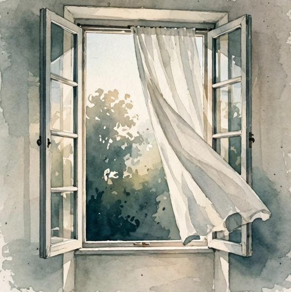
A tall window standing open in a quiet room, morning light and mild air moving a plain curtain.
This hall begins with two doors in the same hallway, and the difference between them is the whole of its teaching. Behind one door the air is still and the curtains do not move, even when the weather outside is strong. Behind the other door the windows stand open, the air changes through the day, and the room is lived in through whatever season arrives. Neither door promises safety from the weather itself. Rain still falls, wind still rises, and cold still comes in its turn. What differs is not the weather but the way the house receives it, and whether feeling is allowed to pass through a life or is asked to wait, unseen, in a room that is never entered.
Feelings, in the language of this house, are weather and water. Anger gathers like a summer storm, grief settles like a long rain, joy opens like a clear morning after cloud, and fear moves through like a cold draught under a door. None of these weathers was chosen, and none of them stays forever in the same form. A feeling arrives, it is felt, it changes, and in time it passes, though it may return in another season. Strength, as this hall understands it, is the practice of letting that weather be known while it is present. Suppression is the practice of latching the shutters and pretending the sky is clear.
This hall sells nothing and promises nothing. It does not offer a method for ending difficult feeling, and it does not describe a person who has finished learning how to carry one. It offers a quieter distinction, stated plainly and returned to often, between carrying a feeling openly and storing it away unspoken. One way costs effort in the moment and leaves the rooms usable. The other way seems cheaper at first and charges its price slowly, over months and years. You are invited to walk through these rooms at an unhurried pace, to notice which doors in your own house stand open, and which have not been opened for a long time.
2The Difference, Stated Plainly
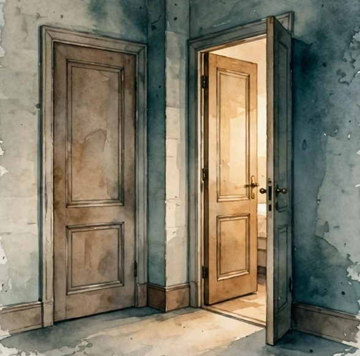
Two doors side by side in one hallway, one shut fast, one open on a lit room.
The difference, stated plainly, is this. Strength feels a feeling, names it honestly, and carries it without being ruled by it. Suppression holds a feeling in, numbs it where possible, and performs calm while the feeling waits behind a shut door. The two can look alike from the hallway, especially on a quiet day. A person who is carrying grief with care and a person who is holding grief down may both speak softly, both arrive on time, both answer questions about their day in the same even tone. The difference is not in appearance. It is in what happens inside the room, and in what the carrying costs over time.
Naming is the hinge on which this difference turns. To say, if only to oneself, this is anger, this is sadness, this is fear, is not a small act. A named feeling has edges, a season, and a weight that can be judged and carried. An unnamed feeling fills the whole house like damp, present everywhere and answerable nowhere. Strength does not require eloquent speech or a long account of oneself to others. It requires, first, plain honesty in the inner room, the refusal to call a storm fine weather. Suppression, by contrast, begins with a small untruth about the sky, repeated until the untruth feels like the only safe thing to say.
Carrying is not the same as being ruled. A sound vessel can hold water without spilling it at every step, and it can also be set down when the arms tire. A person can be angry and still choose their words, can be afraid and still take the next careful step, can grieve and still eat, sleep, and answer a letter. Being ruled would mean the weather decides every action in the house. Suppression fears exactly that loss of rule, and so it tries to have no weather at all. Strength accepts the weather and keeps hold of the handle of the vessel, learning, slowly, how much can be carried, and when to rest.
3The Keeper of the Open Windows
The keeper of this hall is called the Keeper of the Open Windows, and the name describes a habit rather than a rank. Each morning the Keeper walks the length of the house, not to inspect it for faults, but to open what was closed for the night. Shutters are unlatched, casements are lifted, and the stale air of the closed rooms is allowed to leave. The work is ordinary and it is never finished. A window opened on Monday is not open forever. It must be opened again, and again, on days when opening it feels easy and on days when the Keeper would rather leave every room exactly as it is.
The Keeper is not a person without strong weather. Rain has come through these windows, and wind has scattered papers across the desk more than once. What the Keeper has learned is not how to stop the weather, but how to live in a house where weather is admitted. When a storm rises, the Keeper does not stand in the hallway insisting that the sky is clear. The Keeper notes the change, moves what can be damaged away from the sill, and lets the rain be rain for as long as it lasts. There is sadness in this house, and anger, and joy, and none of them is treated as a visitor who has arrived at the wrong address.
You may notice, as you walk, that the Keeper also knows how to close a window. Rest is part of the habit, and so is privacy, and so is the simple need to sleep without the night air on your face. Opening is not a rule against ever closing. It is a refusal to live behind latches that no longer move. A window that can be opened and closed by choice is a sound window. A window that has rusted shut, and whose rust is then called peace, is the beginning of the locked room. The Keeper keeps the hinges oiled, not by grand effort, but by small, regular use.
4The Weather Desk
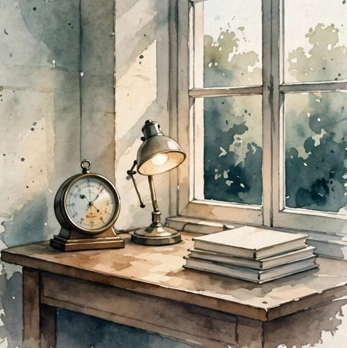
A keeper's desk by a window, with a barometer, a lamp, and a stack of plain notebooks.
By the largest window in the hall stands the Weather Desk, and it is the working heart of the house. On it there is a barometer, a lamp for the early hours, a glass of water, and a stack of plain notebooks with no ornament on their covers. The desk is not a place for verdicts about a life. It is a place for noticing. What is the weather today, in plain words. Has it changed since yesterday. Is it rising or settling. The entries are short, and many of them are unfinished, because a feeling often shows its true name only after it has been lived with for a while.
The Keeper writes at this desk most mornings, before the house asks for anything else. The writing is not performed for a reader, and it does not aim to be wise. Sometimes a whole page holds only three honest sentences. This is worry, and it began before dawn. This is anger, and it is older than today. This is joy, and it arrived without a reason worth recording. The value of the desk is not in the notebooks themselves, which no one else will be asked to read. The value is in the return, the daily willingness to sit by the window and tell the truth about the sky inside, however unremarkable that truth may be.
A desk like this can belong anywhere. It needs no special room and no long stretch of silence in which to work. What it needs is regularity, and a certain plainness of language. Grand words hide weather as effectively as silence does, because they turn a simple feeling into a performance. The Weather Desk prefers the short names, anger, grief, joy, fear, sadness, worry, spoken without decoration and without apology. Over months, the notebooks show a pattern that a single day cannot show. The same storms return, the same clear spells return, and neither lasts. That record, kept honestly, is itself a form of strength, because it teaches the hand that writes it that weather passes.
5First, Let the Weather In
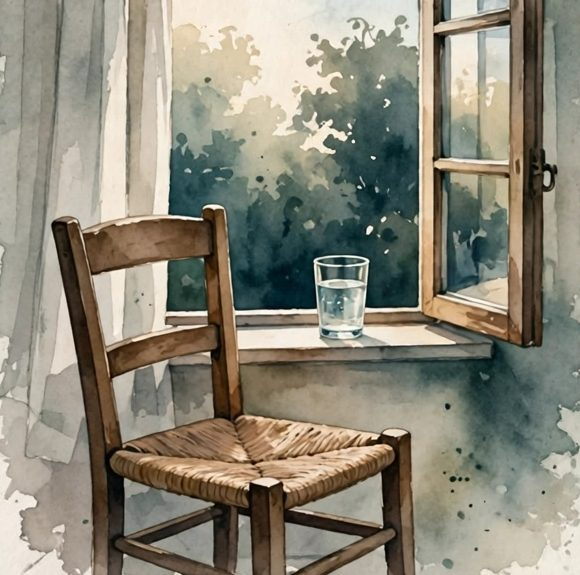
A chair set facing an open window, a glass of water resting on the sill.
First, let the weather in. The order matters, because the habit in the locked room is to decide about a feeling before it has been felt. Is this feeling reasonable. Is it convenient. Is it the feeling a calm person would be having at this hour. By the time those questions have been answered, the feeling itself has been sent away unheard, and only the judgment about it remains in the room. This hall suggests a different order. Let the feeling arrive and be present for a while, as weather is present, before anything is decided about it. Not every feeling needs an answer, a speech, or an action. Many need only to be admitted and named.
Letting weather in does not mean opening every window in a gale and calling the damage honesty. A house is not made stronger by standing open to ruin. It means the smaller, steadier thing, that you do not lie about what is happening in the sky. If grief is present, the room is allowed to be a grieving room for an evening. If anger is present, it is not renamed patience while it tightens the shoulders and shortens every sentence. If joy is present, it too is let in without suspicion, because a house practiced only in admitting hard weather will forget how to receive a clear morning when one finally comes.
There is often a fear that a feeling, once admitted, will stay and take possession of the house. The experience recorded at the Weather Desk suggests the opposite. A feeling that is felt fully tends to move, as weather moves, changing its shape across an hour or a day. A feeling that is barred at the door tends to remain at the door, pressing, returning at night, finding its way under the frame. Letting it in is therefore not indulgence. It is the practical beginning of carrying. You cannot set down, share, rest from, or learn the weight of something you have not first allowed yourself to hold, honestly, in your own hands.
6What Changes in the First Minute
Much changes in the first minute after a feeling is named honestly, and most of it is quiet. The breath, which had shortened without being noticed, lengthens a little. The shoulders, which had risen toward a storm no one was admitting, settle. The feeling itself does not vanish, and this hall does not pretend that it does. Anger named is still anger, warm in the chest and sharp in the thoughts. Grief named is still grief, heavy behind the eyes. What has changed is the relationship between the person and the weather. The feeling is now something being carried, in a vessel that can be seen, rather than something flooding every room at once.
In that first minute, the feeling also becomes smaller in one important way. Unnamed, it had no edges, and so it seemed to explain everything. The whole day was ruined, the whole friendship was doubtful, the whole future was clouded by it. Named, it takes its proper size. This is worry about one letter, not about every letter that will ever arrive. This is sadness about one loss, sitting beside other parts of a life that are still intact and still lit. Plain naming does not belittle a feeling. It restores proportion, the way drawing the true size of a flooded stream on a map makes it possible to find the bridge that crosses it.
The first minute also opens a choice that suppression closes. While a feeling is being held in and denied, nearly all effort goes to the holding, and little is left for deciding what to do. Once it is named, a person can ask slower questions. Does this need action today, or only acknowledgement. Does it need another person's help, or rest, or time. Does it need to be spoken aloud, or is the honesty of the inner room enough for now. None of these questions can be asked honestly about weather that has not been admitted. Strength begins, very often, in nothing more dramatic than that first truthful minute by the window.
7The Rules of This Hall
A house key resting on an open register book, abstract marks only.
The rules of this hall are few, and they are written plainly so that they can be remembered on a difficult day. Nothing is sold here, and nothing is promised. Feelings are weather, and weather passes, though it may return. Naming honestly is strength, and performing calm is not the same as being calm. What is held in is stored, and storage charges rent. Asking for help is a handle, not a crack. Rest is part of strength, not a reward that must be earned after strength has been proven. These sentences are not commands for any particular life. They are the house rules of this one hall, kept on the wall so the rooms stay honest.
A further rule concerns language. In this hall, feelings are called by their short, plain names wherever possible. Anger is anger, not a storm of character. Sadness is sadness, not a failure of gratitude. Fear is fear, not weakness, and joy needs no excuse and no apology. Plain names protect against two errors at once. They stop a feeling from being dressed up into something grander and harder to carry, and they stop it from being shrunk into something too small to deserve attention. A feeling named plainly can be carried plainly, set down plainly, and spoken of plainly to another person when help is needed, without either drama or shame entering the room uninvited.
The last rule is about pace. No one is asked, in this hall, to open every window in the house on the same day. Some rooms have been shut for years, and their hinges will need time, oil, and repeated gentle use. A single window opened honestly is worth more than a speech about openness delivered in a latched room. The Keeper works season by season, desk by desk, morning by morning, and considers that slowness a part of the work rather than a failure of it. If you leave this hall with one rule kept, let it be the simplest. Tell the truth, at least in the inner room, about the weather that is actually there.
8A Way of Carrying, Not a Cure
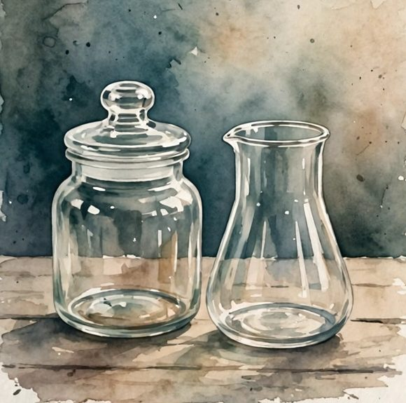
Two glass vessels on a table, one sealed with a lid, one open to the air.
What this hall describes is a way of carrying, not a cure. A cure would promise an end to difficult weather, a season after which anger, grief, and fear no longer arrive. No such season is described here, because no such season has been honestly recorded at the Weather Desk. The notebooks hold clear years and hard years, and both contain storms. To call carrying a cure would be a flattering sentence, and a letter that flatters the future teaches its reader to distrust every other sentence in it. This hall would rather be trusted than flattering. It describes how a feeling may be held, named, shared, and rested from, while it lasts, and how it may be remembered truthfully after it passes.
A vessel is a useful image for this carrying, because a vessel has limits and the limits are part of its honesty. It holds what it holds, and it shows, by its level, how full it is. A sound vessel does not pretend to be empty while water stands near its rim. It does not call itself broken for needing to be set down, carried by two hands, or partly emptied before the next part of the road. Suppression asks a person to be a sealed vessel, silent about its level, until the pressure decides the moment of its cracking. Strength asks for a plainer arrangement, an open vessel, honestly full, honestly carried, honestly rested.
Because it is not a cure, this way of carrying makes room for ordinary limits. There will be days when the feeling is carried well and days when it is carried clumsily, spilled into a sharp word or a withdrawn evening. Those days are part of the record, not exceptions that spoil it. The Keeper does not tear pages from the notebooks after a hard day. The entry is written, the vessel is washed, and the next morning the windows are opened again. Carrying, understood this way, is not a single achievement to be displayed. It is a practice that survives its own imperfect days, because it never depended on pretending they would not come.
9Why Strength Is Not Silence
Silence is often mistaken for strength because silence is easy to admire from outside the room. The person who says nothing about their grief is called composed. The person who absorbs anger without a word is called patient, sometimes for years, while the cost of the quiet is paid where no one applauds it, in sleep, in appetite, in the slow narrowing of a life. This hall does not despise silence. There is a silence that rests, a silence that listens, and a silence that simply chooses privacy, and all three belong in a healthy house. The silence it questions is the other kind, the silence that is not chosen for rest, but required by fear of what honesty might cost.
Strength, as kept here, often sounds surprisingly ordinary when it does speak. It says, I am angry, and I need an hour before we continue. It says, I am sad today, and I do not need it fixed, only not denied. It says, I do not have room to carry this alone, and I am asking for help before the vessel reaches its rim. None of these sentences is loud. None of them rules the room or demands that everyone else take up the same weather. They are plain reports from the Weather Desk, spoken at a normal volume, and they leave the speaker more able to listen, not less, because so little effort is now spent holding the door shut.
The deepest reason strength is not silence is that a feeling held in silence does not stay silent inside. It finds other languages. It speaks in a tight jaw, in a forgotten errand, in a sudden weariness at noon, in kindness that has quietly gone out of ordinary dealings. The house always tells the truth somewhere, even when the mouth has agreed not to. The Keeper's preference is simply to let the truth be told in the plainest language available, in words, early, while it is still small enough to carry in a sentence. Silence will have its proper hours in this house, for sleep and for listening, but it will not be asked to do the work of honesty.
10The Answer Is a Habit
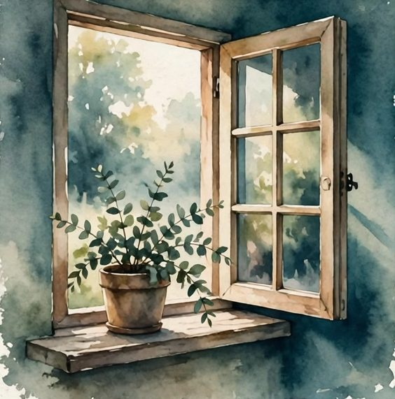
A small potted plant on a windowsill beside an open casement.
If this hall has an answer, the answer is a habit, and habits are less dramatic than most people hope. No single morning at the Weather Desk changes the climate of a house. What changes it is the return, the window opened again, the feeling named again in plain words, the vessel set down before it overflows, the help asked for earlier than pride would prefer. Each of these acts is small enough to be unimpressive. Together, repeated across a season, they alter what a difficult day does to the rooms. The weather still arrives, but it arrives in a house that knows its own procedures for rain, and that knowledge is a quiet form of freedom.
Habits of this kind are built the way the Keeper tends the plant on the sill, by regular, modest attention rather than by rescue. A plant that is ignored for a month and then flooded in a panic is not well cared for, however sincere the panic. Likewise, a person who never admits a feeling until it floods will find the flood hard to learn from. The daily check of the sky, brief as it is, keeps feelings at a size where they can be studied. Worry examined on Monday, while it is still one worry, teaches more than worry examined in the third sleepless week, when it has been joined by exhaustion and has begun to speak for the whole future.
A habit also survives low motivation in a way that resolutions do not. On a grey morning, no one feels inspired to be honest about sadness, and inspiration is not required. The chair is by the window, the notebook is on the desk, and the practice asks only for the next small step, one true sentence, written or spoken. Some days that sentence will be all there is, and the hall counts it as enough. Strength gathered this way does not announce itself, and it does not need to. It shows, over time, in rooms that remain usable in bad weather, in doors that still open, and in a vessel that has learned its own honest level.
11The Hall in One Sentence
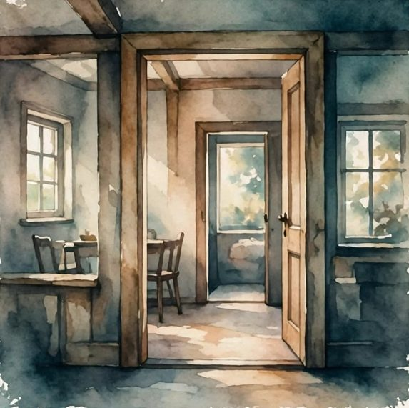
A whole house seen from its doorway, its rooms and windows in one calm view.
The hall in one sentence is this. Feel fully, name honestly, carry what is yours without being ruled by it, ask for help when the vessel is full, and rest without apology, because feelings are weather and weather, honestly admitted, passes. Every room in this hall is an unfolding of that sentence. The Weather Desk is its naming. The open window is its feeling fully. The sound vessel is its carrying. The handle offered by another hand is its help. The closed curtain at night, in a room that will open again at dawn, is its rest. If the sentence is remembered, the rest of the hall can be forgotten without great loss.
A single sentence is chosen deliberately, because in hard weather long teachings are hard to hold. A person in the middle of grief does not need a library. They need one true line that can be carried in the pocket like a key, and used at the door of the inner room when the latch feels stiff. This hall believes a plain sentence, honestly meant, can bear that weight. It does not flatter, it does not promise that the carrying will be easy, and it does not pretend that help will always arrive in the form that was hoped for. It simply describes the shape of strength as this house has learned it, season by season.
Stand in the doorway a moment before you pass into the next part of the hall, and look back at the whole house in one view. The rooms are not grand. Some are brighter than others, and one, at the far end of the corridor, has its door shut and its light left burning beneath it. That room is not hidden from the tour, and it is not treated as a disgrace to the house. It is the subject of all that follows. Suppression, too, must be looked at plainly, in its own rooms, at its own pace, if its cost is ever to be understood. The Keeper leaves the corridor lamp on, and the walk continues.
12The First Rule of the House
The first rule of the house was given last in the list, and first in importance, so it is stated again at the threshold of the locked room. Tell the truth, at least in the inner room, about the weather that is actually there. Every other practice in this hall stands on this one, and without it the rest become performances. A notebook that records fine weather during a storm is worse than no notebook, because it trains the hand in untruth. A request for help that names the wrong feeling sends the helper to the wrong door. Even rest deceives, when what is called rest is really another day of holding the latch down and calling the effort peace.
The rule asks for the inner room first, because that is where honesty is cheapest and where its absence is most expensive. No audience is required. A feeling can be told truly to oneself at the desk, in three plain words, before it is ready to be told to anyone else, and sometimes it will never need to be told more widely at all. Privacy is not suppression, so long as the inner account is honest. The line between them is exactly this rule. Privacy says, I know what this weather is, and I choose who to share it with. Suppression says, I will not know what this weather is, even alone, even at my own desk, even in the quiet.
Keep this rule in mind as the corridor darkens toward the shut door at its end. What follows is not a tour of failures, and the locked room is not presented as the home of lesser people. Almost every house has such a room, or has had one, and many were locked for reasons that once made sense, safety, loyalty, weariness, or the simple absence of anyone to help carry what was inside. The Keeper approaches that door without hurry and without a speech. The first question is never why was this locked. The first question, as always in this house, is plainer and kinder. What is the weather in there, honestly, today.
13The Locked Room
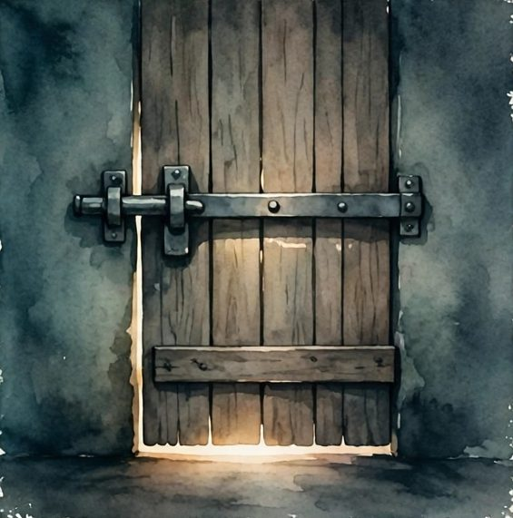
A door shut fast with a heavy bolt, a strip of light showing beneath it.
Every old house in this hall's teaching has a locked room, and this is where the second part of the hall begins. The room was not built locked. It was locked gradually, one feeling at a time, each one carried in during a season when there seemed to be no other place to put it. An anger that could not be spoken at the table. A grief that arrived while everyone else needed cheerfulness. A fear that was answered, once too often, with the advice not to be afraid. None of these feelings disappeared when the door was closed on them. They took up residence, and the room, unvisited, became the most occupied room in the house.
From the corridor, the locked room gives little away, and that is its purpose. Its door is ordinary, its bolt is polished by use, and a strip of light shows beneath it at hours when the rest of the house is dark, because what is stored does not sleep on the household's schedule. The person who locked it may go whole days without thinking of it directly, and yet arrange the whole day around it, which corridor to avoid, which subject to steer away from, which visitor must never be allowed to ask a certain question. Suppression is often described as an absence, a not-feeling. Lived from inside, it is a presence, managed constantly, at some expense of attention, every day.
The Keeper does not rattle this door. A door locked for years is not opened by force from the corridor, and the feelings inside are not intruders to be expelled. They are weather that was never allowed its season, stored past its time, and they will need, when the door does open, what all weather needs, room to be felt, plain names, and time to pass. For now, the hall asks only that the room be acknowledged as part of the house, its light noticed beneath the door, its existence entered honestly in the register. A house that admits it has a locked room is already less ruled by it than a house that insists, at noon, that every room stands open.
14The Door That Stays Shut
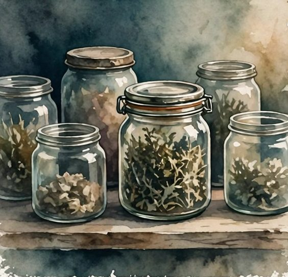
A sealed jar on a shelf among open jars, its lid screwed down tight.
A door that stays shut for a long time begins to change the house around it, quietly, the way a blocked stream changes a valley. At first the change is practical. One subject is not raised, one chair is not sat in, one part of the past is stepped around in conversation as carefully as a loose board. Then the change becomes temperamental. The whole house learns the location of the shut door and lowers its voice near it. Laughter stops a fraction sooner. Questions are phrased to arrive nowhere near the latch. Guests sense the geography without being told, because every household teaches its visitors, within an hour, which doors are never to be tried.
The door stays shut, most often, because opening it has come to feel more dangerous than living around it. The stored weather inside is imagined at its worst, frozen at the size it was when it was locked away, or grown, in the dark of imagining, to fill the house entirely. There is also a loyalty in many shut doors that this hall respects. A person may have locked away grief to keep a household fed, or locked away anger to keep a fragile peace, and the locking was, in its season, an act of care. The hall does not mock old reasons. It only notes that a reason can expire while its door remains shut, and that the house goes on paying for a protection it may no longer need.
Meanwhile the door itself becomes harder to open, not because its bolt is strong, but because disuse is strong. The hinge stiffens, the key is mislaid in a drawer of other keys, and the very idea of opening requires planning, courage, and a free afternoon that never quite arrives. This is how suppression perpetuates itself without any fresh decision. No one chooses the shut door again each morning. They simply inherit it from yesterday, and the inheritance feels like character, like simply being a private person, a strong person, a person who does not make a fuss. The Weather Desk records the cost differently, in the plainest entry of all. One door, still shut. Weather inside, unknown, because unvisited.
15Performing Calm
Performing calm is the daily work that the shut door requires in public. It is not lying in the grand sense, and most who practice it would be hurt to hear it called dishonest. It is the managed face, the even reply, the laugh produced on cue at the table while grief sits, unintroduced, in the next room. The performance is often skillful, because it has been rehearsed for years, and it is often rewarded, because households and workplaces alike are grateful to the person whose weather never inconveniences the schedule. Only the performer knows the distance between the calm that is shown and the weather that is being carried, and that distance, maintained daily, is exhausting in a way that rest does not easily reach.
The performance has a particular tell, visible at the Weather Desk over a season of entries. Performed calm is identical every day. Real calm varies, as real weather varies, admitting a grey morning, brightening by afternoon, resting after effort. A calm that never varies, that reports fine weather in the week of a loss and fine weather in the week of a slight alike, is not a climate. It is a costume, kept pressed and ready. Costumes have their proper uses, for an hour, for a ceremony, for getting through a necessary afternoon. The harm begins when the costume is worn home, worn to the desk, and finally worn in the inner room, where no audience remains to justify it.
What the performance fears, underneath, is rarely the feeling itself. It is the imagined scene that follows honesty, the alarm of others, the loss of being thought strong, the questions that cannot be answered briefly. So the calm is performed a little longer, and the feeling, hearing itself described as fine, learns that this house has no language for it. Over years, that learning deepens into something sadder than silence. The person no longer performs calm only for others. They perform it for themselves, and begin to lose the ability to tell, at their own desk, in their own notebook, what the weather actually is. Of all the costs in this hall, that one is entered in the ledger with the greatest care.
The Weather Desk
One desk receives all correspondence for this house — questions, corrections, and word of any weather a visitor has been carrying shut for a long while: the feeling never named, the calm performed once too often, the door they are thinking of opening. It is read in the order it arrives, and entered in the register of weather.
16The Level Voice
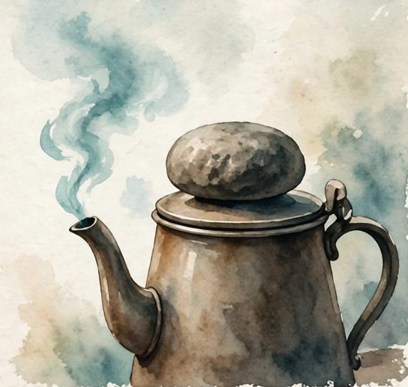
A kettle with its lid held down by a heavy stone, steam escaping at the rim.
Everyone in the house knows the level voice, because it can be heard through the locked door even when no words can be made out. It is the voice that answers a painful question at exactly the volume of a question about the shopping. It does not rise, it does not break, and it does not quicken, whatever passes through it. Grief is announced in it, anger is denied in it, and love, when it must be spoken of at all, is reported in it like a delivery that arrived while no one was home. The level voice is often praised as self-command. In this hall it is listened to more carefully, the way one listens to a kettle whose lid is being held down.
A voice becomes level in this way by long training, usually begun early and rarely chosen freely. Somewhere the lesson was learned that raised weather in the voice brings trouble, that tears end conversations, that anger in the throat costs more than anger swallowed. The lesson may once have been accurate, in a house where that was true. The voice kept the peace it was trained to keep, and the training, repeated daily for years, became indistinguishable from the person. Ask such a person how they feel and the answer arrives level, brief, and complete, like a report on a house in which they do not currently live, and the most striking thing about it is its sincerity. They are not hiding the weather. The voice no longer knows another register in which to report it.
Yet the steam finds the rim, as steam does. It escapes in the flatness itself, in the joke made without warmth, in the sudden silence after the level answer, in the weariness that settles over a room where strong news has been delivered without any change of tone. Listeners feel pressed by a lid they cannot see, and often leave such conversations vaguely tired without knowing why. The Keeper, hearing the level voice in this hall, does not ask for a louder one. Volume was never the point. The hope recorded at the desk is smaller and slower, that one day a sentence of true weather, this is grief, this is anger, may be spoken in whatever voice is available, and be heard, by the speaker first of all, as news.
17What the Locked Room Costs
A ledger open on a desk with columns of abstract figures, a candle burned low beside it.
What is held in is stored, and storage charges rent, and the locked room keeps its ledger whether the house reads it or not. The first charge is attention. A portion of every day's mind is posted at the shut door, listening for sounds, steering conversations, managing the face and the voice, and that portion is not available for work, for rest, or for the people actually present in the open rooms. The second charge is bodily, and it is entered without drama. Sleep that does not deepen. Shoulders that do not lower. A tiredness that a holiday touches only lightly, because the holiday is taken in the same house, with the same door under guard in the corridor.
The third charge is time, and it is the hardest to see while it is being paid. Years can be arranged around a shut door so skillfully that the arrangement is mistaken for a personality. The invitation declined because it might raise the old subject. The friendship kept shallow because depth approaches the latch. The help never asked for, because asking would require naming what is stored. Each decision is small, reasonable, and defensible on its own day. The ledger does not judge any single entry. It simply adds the column, and shows, across a decade, how much of a life was spent in the corridor outside one room, rather than in the room, or, having visited it honestly, anywhere else at all.
The final charge is the subtlest, and the Keeper enters it last. What is stored does not keep its original size or shape. A grief unvisited does not remain the grief of its first year, proportioned to its loss. Untended, it spreads its damp into neighbouring rooms, colouring unrelated sorrows, lending its weight to small disappointments until they are carried like great ones. Anger stored likewise ferments past its occasion, and can arrive, years later, at a small provocation, carrying the force of every year it was denied a name. The rent, in the end, is not only paid in effort. It is paid in accuracy, in the slow loss of knowing which weather belongs to which sky.
18The Sealed Jar
On a shelf in the Keeper's pantry there stands a sealed jar, and visitors often mistake it for the tidiest object in the house. Its lid is screwed down tight, its label is faded past reading, and nothing about it spills, smells, or draws attention to itself among the open vessels in daily use. It is the perfect emblem of a feeling successfully put away, and the Keeper keeps it in sight for exactly that reason, because its tidiness is the problem. What is inside was put there in a living season, meant for use, for tasting, for grief or anger in its proper measure. Sealed and shelved, it has not been preserved. It has only been postponed, and postponement, in a pantry as in a life, does not stop time.
A jar sealed in a hurry, with its contents still warm, builds its own pressure as it cools and waits. Anyone who has found such a jar after years knows the small fear before the lid is tried, the sense that opening it will not be a neutral act. Feelings stored in the heat of their moment behave in much the same way. The anger sealed during a humiliation, the grief sealed during the busy weeks after a death, do not wait politely at their original strength. They wait at whatever strength the sealing gave them, plus the pressure of every later occasion on which the lid was checked, found tight, and left for a safer year that has not yet been scheduled.
The open vessels beside it live differently, and the contrast is the whole lesson of the shelf. They are used, emptied, washed, and refilled, and their contents are known because they are regularly seen in daylight. Nothing in them has the chance to become mysterious or feared. The Keeper's practice with feelings follows the pantry exactly. Small, regular openings. A grief tasted in its season, an anger poured out in plain words while it is still the size of a cup and not a cellar. The sealed jar is not thrown away in this hall, and its contents are not mocked. It is simply noticed, at last, as the most expensive storage in the house, and the least honest kind of tidiness.
19Numb Is Not the Same as Calm
A pond frozen over in still weather, a single leaf held fast in the ice.
Numb is not the same as calm, though from the bank they can look identical, and the frozen pond in the Keeper's garden is kept in this teaching for that reason. In calm, the water is still because the weather is still, and beneath the surface everything remains alive, moving slowly, responsive to season. A calm person can be reached. Sad news saddens them, good news gladdens them, and their feelings, while quiet, are present and in working order. In numbness, the surface is still because it is frozen. The life underneath has not ended, but it cannot be reached through the ice, and the person standing on the bank reports, truthfully as far as the surface tells it, that they feel nothing at all.
Numbness usually arrives as a mercy, and this hall records that fact before it records any cost. When feeling comes too fast, too much, or for too long without rest or help, the freezing is a kind of protection, the pond's way of surviving a winter it did not choose. No one is scolded in this hall for their ice. The difficulty begins later, when the season that required the freeze has passed and the ice remains, praised as composure, relied on as strength. Then the protection starts charging the same rent as the locked room. Joy freezes at the same temperature as grief. The leaf held fast in the ice is preserved perfectly, and perfectly out of reach, and a life can be lived for years on a surface that admits nothing in either direction.
The thaw, when it comes, is rarely comfortable, and the Keeper is honest about this at the desk. Melting ice lets the stored weather move again, and the first feelings to return are not always the gentle ones. This is why numbness defends itself so plausibly, by pointing to the discomfort of thawing as proof that the ice was wisdom. The hall answers plainly. The discomfort of a thaw is weather moving, as weather does, in a pond returning to life. Calm was never the absence of feeling. Calm is feeling, present and carried, at a temperature a life can be lived at. Until that distinction is learned in the body and not only in words, the frozen pond will go on being mistaken, winter after winter, for peace.
20Everything Is Fine, Said Flatly
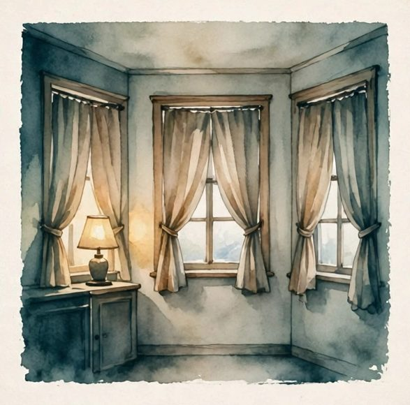
A room with every window latched and curtains drawn, a lamp burning at noon.
Everything is fine, said flatly, is the sentence this hall was built to listen to carefully. It is spoken in kitchens and corridors, at desks and at doors, by people whose lamp is burning at noon because every curtain in the room is drawn. The words report clear weather. The flatness reports something else, a voice that has passed the sentence through the level register, a face performing calm, a hand resting, without knowing it, on a latch. This hall does not accuse the sentence of lying. Most who say it mean it as a kindness, a wish, or a boundary drawn in the only words available at that moment. It listens, instead, for what the sentence is protecting, and at what rent.
Behind that sentence, in house after house, the same small geography is found. One room locked, its light burning beneath the door. One jar sealed on the shelf, its label long faded. One pond at the bottom of the garden, still under its ice in a season when the other ponds have opened. None of this is visible in the sentence itself, which is why the sentence works, and why it costs so much to keep working. Each repetition is another day of storage paid for, another morning on which the Weather Desk receives a report of fine weather that its barometer does not confirm, until the hand that writes the reports begins, itself, to doubt the glass.
The hall ends where it began, with a window, this time one that is latched in a lamplit room at noon. Nothing dramatic is asked of it in this final room. No one is instructed to throw it open, to tear the curtains, or to speak a truer sentence on any particular day of their life. The Keeper simply notes, in the last entry, that the latch is a latch, made to move, and that it has moved before. What is stored can be visited. What is frozen is water, and water remembers its nature. And a sentence said flatly for many years can, one ordinary morning, be said a fraction more honestly, and that fraction, in this house, is counted as strength.
21The Polite Freeze
The polite freeze has a pleasant surface. A person smiles at the table, answers kindly, pours the tea, and keeps every feeling underneath where no one can see it move. Nothing looks wrong from the doorway. The room is tidy, the voice is even, and the day goes forward on its rails. Only later, in a quiet corridor, does the cold of it register, like a hand that has held ice too long and lost its feeling for a while. It can last a whole season of dinners and meetings, this careful smoothness, and from a distance it may even be mistaken for peace, until someone notices that nothing in the room has been allowed to change temperature for a very long time.
In this house, the Keeper of the Open Windows knows the freeze by its stillness. Real calm has a little movement in it, the way a pond under open sky takes the wind and answers with small rings. The freeze has no rings. Questions are met with the same smooth answer, and hard news slides across the surface without sinking in. What cannot sink in also cannot soften, and what cannot soften must be carried exactly as it fell, at full weight. The people around such a person learn, without being told, not to bring heavy weather to the table, and so the house grows quieter around the frozen pond, and the quiet itself is taken, wrongly, as proof that all is well.
There is no shame in the freeze, and the house does not scold it. Sometimes the weather outside is too sharp to meet all at once, and a frozen hour is simply an hour survived. The difficulty begins when the freeze becomes the only season a room is allowed. Then the pond is ice in spring as well as winter, and the life underneath waits longer and longer for a thaw that a latched habit keeps postponing, one polite day at a time. When the thaw comes, it rarely arrives as a flood. It comes as one honest sentence, one afternoon when the answer is slower and truer than usual, and the surface, which looked so permanent, turns out to have been only a season's thickness after all.
22The Load Behind the Door
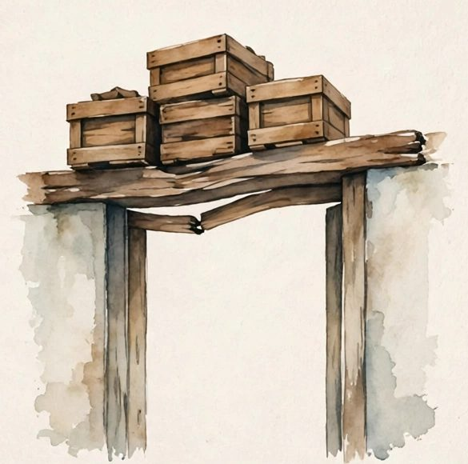
A beam above a doorway sagging slightly under stacked crates.
Every feeling that is turned away at the front of the house is carried somewhere, and in the locked room it is carried behind the door. One disappointment is set down quietly. One anger is folded and placed on top. One grief, too heavy to look at before supper, is leaned against the wall. Each item seems small on the day it is stored, and the door still closes, though it closes a little less easily each season. The crates are rarely labelled, because labelling would be a kind of naming, and naming was exactly what the storing was meant to avoid, so the pile grows in the dark in no particular order, oldest at the bottom, heaviest where it can least be reached.
The Keeper keeps a plain register at the Weather Desk, not of faults, but of weights. Storage is never free, the register shows. A room given over to crates cannot hold a chair, a table, or a guest. Strength spent holding a door shut is strength not spent on the day itself, and many people are tired in the evening without knowing what work they have done, because the work was standing all day with one shoulder against a door. Helpers who are invited into such a house sometimes sense the door before they see it, in the way a conversation stops at certain subjects, in the way certain years are stepped around as carefully as furniture in a darkened room at night.
Nothing behind the door disappears. Paper softens, wood swells, and old feelings, like stored fruit, change their smell in the dark and announce themselves through the boards. They come out as a sharp word at breakfast, as tears at an ordinary song, as a weariness that sleep does not quite reach. The house teaches a simpler accounting. What is named at the door costs a moment of weather. What is stored behind it charges rent, quietly, for as long as it stays. This is why the Keeper counts the rent as a kindness rather than an accusation. A bill that can be read can also be settled, a little at a time, and no one in this house is asked to settle the whole account in a single day.
23The Room Gets Smaller
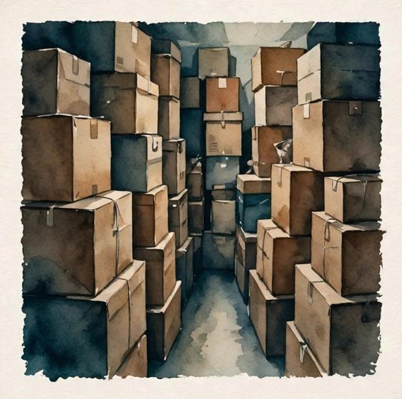
A small room crowded with unopened boxes, a narrow path left between them.
No one decides to live in a smaller room. It happens the way a path narrows in an overgrown garden, one unopened box at a time. First a corner is given up, then a wall, then the space beside the window where a chair used to stand. The person still moves through the house each day, but the route is fixed now, a thin track between stacks, and whole parts of the room are no longer visited at all. The narrowing is usually discovered by accident. A guest is expected, a chair is needed, a window will not open for the boxes stacked against it, and the person stands in the middle of the path and understands, all at once, how much of the room has been given away.
From outside, the house looks unchanged, and this is part of the sorrow of it. The windows are washed, the roof is sound, the door opens for visitors. Inside, though, a person steps carefully, avoids certain shelves, and learns not to reach for things stored long ago. Joy needs a little open floor. So does rest, and so does the plain pleasure of not watching where you step. A crowded room taxes all three, every single day, without ever announcing the charge. Certain subjects get the same treatment as certain shelves. They are not forbidden, exactly. They are simply never approached, and the conversation learns its narrow path just as the feet do, turning at the same places, year after year, without anyone drawing a map of the turns.
The Keeper measures rooms by their usable space, not their walls. A large life with nine tenths given to storage may offer less room to live in than a small life kept clear. The boxes, it should be said, are not enemies. Each holds something real that once needed carrying. The question the house asks is only whether they will be opened one by one, in daylight, or whether the path between them is to become the whole of the home. The house does not demand that every box be opened at once, or even in any particular order. It asks only that the room be measured honestly, because a person who knows how much space remains can begin, deliberately, to win a little of it back.
24A Door Is Not a Wall
At the end of the locked corridor stands the plainest teaching in the house. A door is not a wall. A wall is built to stay. A door is built on hinges, with a handle on both sides, and its whole design assumes a day when it will open. People speak of their stored feelings as if a wall stood there, final and load bearing, when all along the house has kept a door, waiting without impatience for a hand. It helps that the door has been there through every year of the storing. It was never removed when the crates arrived. It waited behind them, hinges oiled by nothing but the design of the house, which was built by someone who expected weather and expected it to move.
Opening it does not mean throwing it wide on the first morning. The Keeper opens doors the way careful people open windows in winter, a crack at first, long enough to learn what the air is doing. One box can be lifted down. One feeling can be named in one sentence, to one trusted ear, or written once at the Weather Desk and left there. The hinges, unused for years, may complain. Hinges complain and still turn. That small sound is the house working as it was built to work. Help, when it is asked for, often turns this handle. A friend sits on the other side of the door and keeps company while the first box is opened. Asking is not a crack in the wall of a person. It is the handle being used as handles are meant to be used.
What matters is the difference in kind, not the speed of the work. A wall must be broken, and breaking is violence, and people rightly fear it. A door only asks to be used as a door. Behind it the stored weather has not grown monstrous in the dark. It has only grown older and heavier, and it will feel, when the light first reaches it, surprisingly like what it always was. A feeling, asking at last to be felt and finished. The light that comes through the first crack is not dramatic, and that is its mercy. It is ordinary daylight, falling on ordinary stored things, and it makes the next opening easier than this one was, as doors and mornings tend to do once they are in regular use.
25Weather, Not Climate
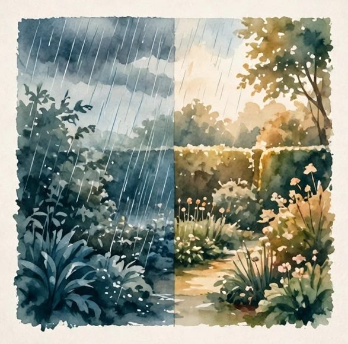
Rain falling on one side of a garden while sunlight lights the other.
Here the second part of the hall begins, and its teaching can be said in four words. Feelings are weather, not climate. Climate is the long pattern of a place, the thing maps are drawn from. Weather is what is happening this morning, real and worth dressing for, and already on its way somewhere else. A person who mistakes a rainy Tuesday for the climate of a life will make lasting decisions from a passing sky, and the house gently refuses that mistake. A climate takes decades to describe and longer to change, and no single morning, however dark, has the authority to rewrite it. The person who keeps this straight can have a wretched day inside a good life and hold both facts at once, without letting either one swallow the other whole.
Rain on one side of a garden and sun on the other is not a riddle. It is an ordinary hour, seen clearly. In the same way, grief at breakfast and laughter by evening do not cancel each other, and neither one is lying. The weather inside a person can hold several kinds at once, moving at different speeds. Strength, in this house, begins with reading the sky as it is, rather than demanding that it be one thing, simple and settled, before the day is allowed to start. The garden teaches the same lesson at ground level. Nobody digs up a garden because of one rainy week, and nobody declares a drought over because of one wet afternoon. Gardeners, like keepers of houses, learn to wait for the pattern before they judge the place.
The Keeper keeps two charts at the Weather Desk, and they are never confused. One chart is the climate, slow and deep, the values a life is actually lived by. The other is the weather log, quick and honest, rewritten every day. Trouble comes from swapping the charts, from signing the weather log in permanent ink. Let the rain be written in pencil, dated and respected. It will be true for its hour. It was never asked to be true for a lifetime. There is steadiness in keeping two charts, and also a kind of mercy. The weather log absorbs the extremes, the sudden frosts and the unseasonable warmth, so that the climate chart can stay what it is, the slow truth of a life, undisturbed by every passing front that crosses the valley.
26Feelings Have Seasons
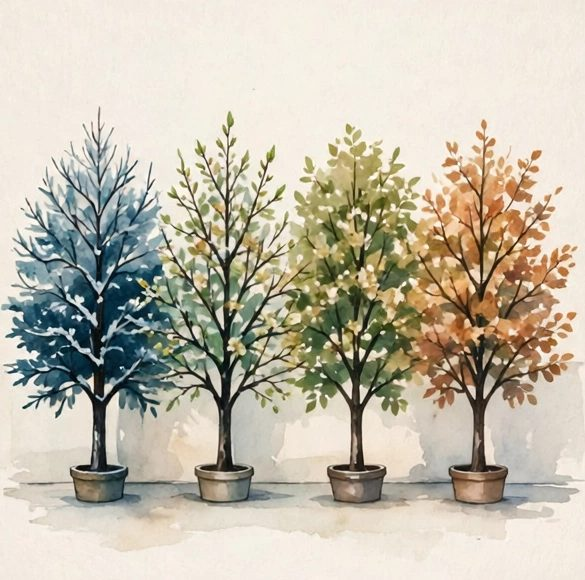
Four small trees in a row along one wall, each in a different season.
Some feelings do not pass in an hour, and the house has never claimed they would. Grief after a great loss is not a shower. It is a season, with its own length, its own slow change of light, and days within it that differ greatly from one another. To call a feeling weather is not to call it brief. It is to say that it moves, that it has a course, and that even the longest winter is a season and not the whole of the year. Seasons ask for different clothing and different work, and a person in a grief season who demands harvest work of themselves is misreading the calendar in a way no farmer would. There is a time when the only honest work is endurance, and endurance, done quietly, is work enough.
A tree in winter is not a failed tree. Its work has gone inward and downward, out of sight, and judging it by the standard of June would be a plain error of reading. People make this error with themselves in hard seasons, demanding blossom on a February schedule. The Keeper walks the row of trees along the wall and greets each in its own season, asking of each only what that season can honestly give, no more and certainly no less. Others misread the season from outside. They bring spring advice to a winter house, cheerful and well meant, and leave puzzled that it did not take root. The Keeper has learned to ask what season a room is in before offering anything at all, even kindness, especially kindness.
Seasons also return, and this too is part of the teaching. An old sadness may come back with a certain month, a certain song, a certain quality of evening light. Its return is not proof that nothing has changed. Rivers rise in spring because spring is what they do. The person who knows the calendar of their own weather is not surprised by the river, keeps the path marked, and waits for the water to do what water in season has always done. Written at the Weather Desk, the returns lose their power to frighten. A sadness that arrives each November can be prepared for, the way a house prepares for frost, pipes lagged and wood stacked, not because the frost is welcome, but because it is known, and known weather is half carried already.
27Rain Is Not a Verdict
Rain falls on the just and the unjust alike, the old saying goes, and the house keeps a plainer version above the Weather Desk. Rain is not a verdict. A sad morning is not a judgment on the person who wakes to it. A spell of fear is not a finding that someone is weak, and a week of flat grey days is not evidence about the worth of a life. Weather reports conditions. It does not hand down sentences, and it should never be read as if it did. Roofs do not ask why the rain chose them. The question would waste the rain's whole visit. People, who can ask, often spend the visit exactly that way, interrogating the weather instead of feeling it, and then wonder why the feeling is still there, unspent, when the sky has long since cleared.
Yet many people read it exactly so. They wake low and conclude something is wrong with them, rather than something is passing over them. The difference sounds small and is not. A verdict must be appealed, argued with, carried as a mark. Weather must only be noticed, dressed for, and allowed to move on. The Keeper is strict about the distinction because everything downstream depends on it. What is treated as a verdict gets stored. What is treated as weather gets felt, and felt weather finishes. The verdict habit is learned early and unlearned slowly. A child who is told that tears are badness grows into an adult who experiences sadness as evidence. The house spends patient years separating the two ledgers, feeling on one page, worth on another, never to be added together again.
So the house practices a small discipline of language. Not, I am a dark day, but, a dark day is here. Not, I am failing, but, this hour is heavy and I am carrying it. The words are modest, almost plain to a fault, and they hold the door of the whole teaching. A person is the house, not the rain on its roof. The roof is allowed to be wet. The house remains the house, sound and standing, whatever the sky is doing. Practised over months, the small grammar does quiet structural work. The house stands a little straighter. Weather that used to flood the whole identity of a person is given its proper address instead, the sky, where it belongs, where it can be watched, respected, and waited out in good company.
28Naming the Weather Honestly
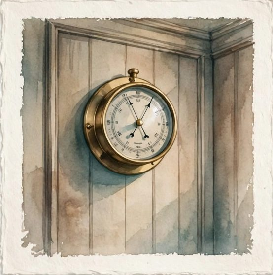
A brass barometer on a hallway wall, its needle resting mid-scale.
A barometer is no use to anyone if its needle is painted in a cheerful position. The instrument exists to say what the air is actually doing, and the house extends the same courtesy to feelings. Naming the weather honestly is the first act of strength the hall describes. Not the polished name, not the name that will please the company, but the true one, spoken plainly. This is sadness. This is anger, and it is larger than I first said. This is fear, wearing the coat of irritation. There are feelings that shrink the moment they are named accurately, the way a shadow shrinks when a lamp is carried closer. And there are feelings that grow clearer and larger, which is also a service, because a thing seen at its true size can at last be carried at its true weight.
Honest naming is quieter than most people expect. It does not require a speech, an audience, or the right words found on the first attempt. It can happen at the Weather Desk in a single written line, or under the breath while the kettle boils. What it cannot survive is substitution. Calling every feeling fine is a painted needle. Calling every feeling tired, when some of it is grief and some of it is anger, blurs the log until no reading can be trusted, including by the person keeping it. The Keeper keeps a short list of honest words by the desk, for the days when fine is the only word that will come. Sad, angry, afraid, glad, tired, lonely, ashamed, at peace. A small vocabulary, plainly spoken, has carried more weather safely through this house than any eloquence ever did.
Once named, a feeling becomes easier to carry, for the same reason a labelled crate is easier to move than an anonymous one. You know its weight, its size, and which room it belongs in. You know whether it needs company, quiet, rest, or simply time. The Keeper names the weather each morning without ceremony and without dread, the way a sailor reads a sky. Not to control it. Just to sail the actual day, rather than the day that was announced to spare someone's feelings. Naming also has a direction in time. A feeling named early is weather reported. A feeling named after ten years of storage is archaeology, slower work, done with brushes. The house honours both, and still votes, in its quiet way, for the early report, the small honest sentence said while the sky is still changing.
29A Storm Is an Hour, Not a Life
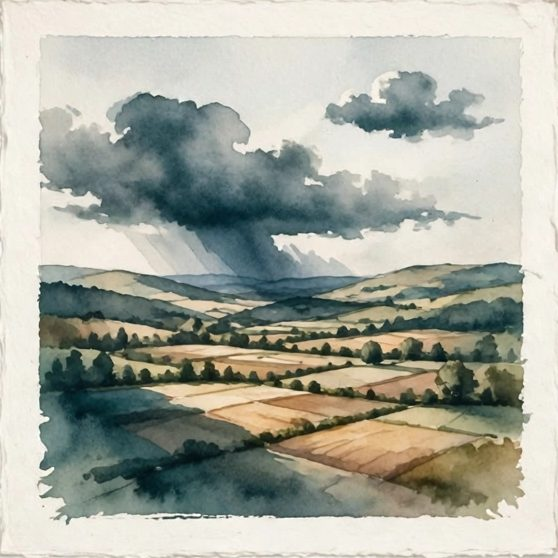
A single dark cloud passing over a lit valley, its shadow moving on the fields.
In the middle of a storm, the storm feels like the whole world. The wind is in every room at once, the light goes strange, and it is nearly impossible to remember the valley an hour before, lit and ordinary. This is the nature of strong feeling. It fills the frame entirely while it lasts. The teaching of this room is not that the storm is small. It is that the storm is timed. It has a beginning behind it already, and an end ahead that the person inside it cannot yet see. Clocks are unfashionable comforters, but the house trusts them. An hour is an hour even inside a storm, sixty minutes and no more, and the person who can hold on to that plain fact has something solid underfoot while the wind does its worst around the chimneys.
From the hill above the house, a storm looks different. One dark cloud, moving. Its shadow crosses the fields at a walking pace, sharp edged and dramatic, and the fields it has passed are already back in sunlight, unchanged except for the rain they needed. The Keeper takes visitors to the hill on purpose. Not to mock the storm, which is real weather and soaks anyone standing in it, but to restore the proportions that the valley floor, mid downpour, cannot provide. From the valley, of course, the proportions are reversed, and the house knows it. That is why the Keeper never argues with anyone mid storm. Argument is for clear days. In the rain itself, the only useful offerings are shelter, company, a dry coat, and the calm loan of someone else's memory of sunlight.
A life is measured in years, and its strongest feelings in hours. Even grief, the longest weather, moves by days and weeks within its season. To remember this inside the storm is not coldness. It is a handrail. This will peak, and then it will lessen, and then one ordinary hour will arrive that does not hurt, and it will feel almost disloyal how ordinary it is. Let it. Ordinary hours returning are not a betrayal of the storm. They are its ending, doing its quiet work. Years later, most storms take their proper size in the telling. That was the winter of the bad news, people say, or, that was one hard month, and the whole enormous weather of it fits into a single sentence, which is not a lie. It is what time does to scale, faithfully, every time.
30The Barometer in the Hallway
The house keeps its barometer in the hallway, where everyone passes, and the placement is deliberate. Feelings are not checked once, in a crisis, in a locked room. They are glanced at in passing, many times a day, the way you glance at a clock or a window. A reading taken often stays small and manageable. A reading avoided for months arrives all at once, as a flood, and people call it sudden when it was only unmeasured for a very long time. The glance can be taught to a whole household in a week, the Keeper says, and unlearned in a single season of mockery, which is why the house guards the custom carefully. No reading given in this hallway is ever used as evidence against the person who gave it, in any later argument, ever.
The hallway reading takes ten seconds and asks one question. What is the weather in here, honestly, right now. Not what should it be, not what was it yesterday, not what will the visitors prefer. The answer might be, fair and rising, or, low and falling fast, or the useful and underrated reading, changeable. Any true answer serves. The Keeper has no favourite weather, only a settled dislike of the painted needle, which serves nobody and misleads the whole household by evening. A falling reading deserves the same respect as a rising one, and sometimes more, because it arrives with instructions attached. Close the windows. Cancel the extra visit. Eat something warm. Feelings, read early, often ask for small practical mercies, and it is the grand refusals, not the small mercies, that fill locked rooms.
Children in such a house learn the glance early, and it is worth picturing what they learn. That feelings are information, not emergencies. That a falling reading is a reason to close a window and light a lamp, not a reason to fear the sky. That no one in the house will be scolded for the weather they report. A household, or a single heart, that reads itself kindly and often has very little weather left to fear. Most storms, read early, are only rain with good notice. In time the hallway glance becomes as unremarkable as washing hands, and that unremarkableness is the victory. Strength in this house is rarely a dramatic posture. It is a set of small honest habits, kept in passing, that keep the weather moving and the rooms at their full size.
The Weather Desk
One desk receives all correspondence for this house — questions, corrections, and word of any weather a visitor has been carrying shut for a long while: the feeling never named, the calm performed once too often, the door they are thinking of opening. It is read in the order it arrives, and entered in the register of weather.
31Weather Passes Through Open Windows
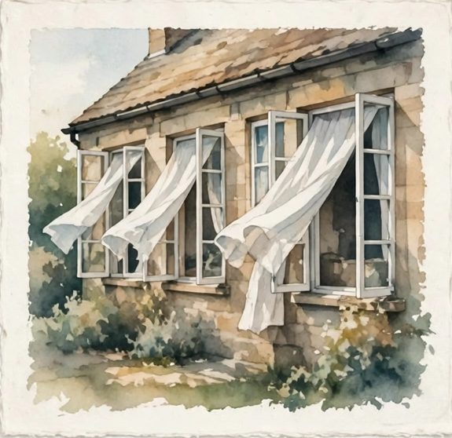
Windows open along a whole house front, curtains lifting in one wind.
Weather is meant to pass through. That is the whole design. A feeling arrives, moves across the rooms of a person, stirs the curtains, and leaves by the same openness it entered, having done its brief work. Sadness brings its news and goes. Anger brings its news and goes. Even joy, which nobody tries to store, demonstrates the pattern perfectly. It is never held. It is lived in while it is present, and its leaving is accepted as the price of its return on some other day. The house can tell, by smell alone, which rooms have been kept shut the longest. There is a particular stale sweetness to old unwept weather, and it clings to curtains and paper long after the door is opened, which is why airing a room is measured in days, not in a single hopeful hour.
Trouble begins when the windows are latched against the weather. The feeling, denied passage, does not vanish. It circulates in the sealed house instead, growing stale and strange, pressing at the frames, finding the cracks around doors and the gaps in sleep. People describe this as being haunted by a feeling long past. The house describes it more simply. Weather kept indoors becomes damp. It gets into the walls. What would have been an afternoon of rain becomes a season of mildew, and the cleaning takes far longer than the rain would have. People sometimes fear that an opened window works both ways, that more weather will get in. It will, and the house accepts the trade without blinking. Fresh rain on a sill is a small price for a house that breathes, and a feeling admitted today is always lighter than the same feeling admitted after a year indoors.
So the Keeper opens windows as a daily practice, not as an emergency measure. Small ones, often. A feeling spoken while it is still the size of a feeling, a cry had while the grief is fresh and proportionate, a hard truth said on the day it becomes true. None of this is dramatic. It is housekeeping, of the same order as airing a room. The wind that moves through an open house cannot build the pressure that breaks glass. It just moves through, and the curtains settle, and the rooms are fresh again. By evening the test is simple. A house that has let its weather through smells of rain and wood and supper, like a place being lived in. A house that has not smells of nothing much at all, and that nothing, the Keeper says, is the most expensive scent in the world, paid for daily.
32Grief Is Weather Too
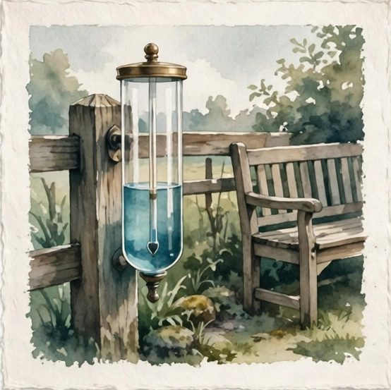
A rain gauge on a fence post, half full, beside a garden bench.
Of all the weather that comes to a house, grief is the rain people most try to argue with. They set terms for it. It may stay a month, it may fall only in private, it must not interrupt the harvest or the holiday. Grief ignores the terms, being weather, and the arguing exhausts the arguer while the rain falls exactly as long as it falls. The house takes a kinder line. The gauge on the fence post does not scold the rain for filling it. It measures, honestly, and that is the whole of its wisdom. Others mean well and bring umbrellas of advice to a person standing in grief rain, quick ways to stay dry, reasons to be grateful for the weather. The bench beside the gauge is the house's answer to all of it. Sit down. Say the name of what was lost. Let the gauge fill at its own rate.
Grief is the price shape of love, the form love takes when what it loves is gone or changed. To refuse the rain entirely is to make a claim about the drought that follows, and the house has seen what grows in people who succeed at not grieving. Very little, and that brittle. What is grieved, by contrast, slowly becomes ground that can hold new planting. Not quickly, and not on a schedule that can be promised to anyone, but the direction is as reliable as drainage. There are griefs that return in smaller rains for the rest of a life, at weddings, at songs, at the sight of an empty chair filled by someone else. The house does not treat these returns as failures of drainage. A well drained field still takes the rain that falls on it. It just does not drown in it anymore.
The Keeper keeps a bench beside the gauge, which tells you the house's whole position. Grief is weather you sit with. You do not fix it, rush it, or perform recovering from it for an audience. You sit, you let it rain, you notice over the weeks that the gauge fills more slowly and empties between falls. One day the bench is a pleasant place again, and the rain, when it comes on an anniversary or an ordinary Tuesday, is weather. Remembered, respected, and no longer the climate of the place. What changes, slowly, is the person's relation to the bench. At first it is a place of endurance. Later it becomes a place of visiting, where the lost one is remembered on purpose, in chosen weather, and the Keeper notes that chosen grief, grief with a door that opens both ways, is among the steadiest strengths a house can hold.
33Anger Is Weather Too
Anger arrives like a gust, sudden and physical, and of all the weather it is the kind most often latched against, especially by people who pride themselves on calm. They feel the first stir of it and call it unworthy, and push it behind the door with the crates. The house disagrees with the pride and the pushing alike. A gust is information. It says something has crossed a boundary, something matters, something is being treated as smaller than it is. Read early, that is useful news, delivered hot but honest. The gust also tests the house in useful ways. Loose shutters rattle first, and they rattle at exactly the places where something has been neglected, a promise loosely kept, a boundary loosely held. Anger, read as an inspection rather than an offence, has repaired more of this house than calm ever has.
Weather is not permission. Rain does not excuse leaving the gate open for the sheep, and anger does not excuse cruelty, breakage, or the well aimed wound. The Keeper is plain about this. Feeling anger fully and acting from it blindly are opposite skills, and strength is the space between them. In that space a person can say, I am angry, and it is real, and it is mine to carry, and no one will be harmed by my carrying it. The gust passes through the open house. It slams nothing, because nothing was latched to slam. Children in the house are taught the space between feeling and acting with a picture. The wind is real, and the hand on the latch is also real, and the second of these is theirs. It is a short lesson, repeated kindly, and it outlasts many longer ones, because it respects both the weather and the hand.
Stored anger behaves worse than stored grief, the register shows. It ferments. It comes out sideways, at the wrong person, in the wrong size, over a spoon left in a sink that was never about the spoon. Or it turns inward and settles as a long cold resentment that colours every room. Let through as weather, the same anger is surprisingly brief. A storm clears the air it moves through. People often find, on the far side of an honestly felt anger, the clearest thinking of their week waiting for them. What is left after an honest anger, the log shows, is often a request that can finally be spoken plainly. Move the boundary. Change the arrangement. Stop the small daily trespass. The gust was never the point. The point was what the gust was pointing at, the whole time, with its loud and unsubtle finger.
34Joy Is Weather Too
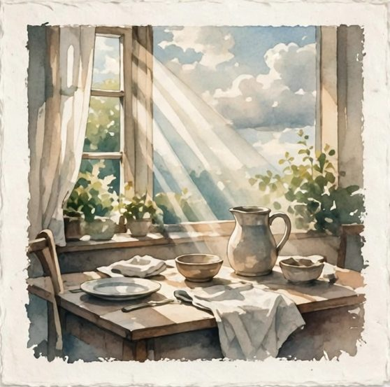
Sunlight breaking through cloud onto a table set indoors by a window.
It surprises people to find joy in this part of the hall, among the storms and gauges, but the teaching is incomplete without it. Joy is weather too. It does not arrive on command, it cannot be stored against a grey month, and it leaves when it leaves, sometimes in the middle of the very afternoon that was built around it. The person who understands weather in sorrow and demands permanence from joy has learned only half the sky, and will call half of life a failure of management. The log treats a morning of unexpected gladness with the same respect as a bereavement, and some visitors find that odd until they have lived a while in the house. Both are weather that rearranges a day. Both deserve an entry, a pause, and a chair pulled up to the light while the light is there.
Because joy cannot be stored, it must be received, which is a different skill from pursuit. The house receives it the way it receives sunlight through a window, by having the curtains open and the table set where the light actually falls. Small joys are the commonest kind and the most often missed by people watching the door for a large one. Warm bread. A letter. Ten minutes of sun on a bench. The Keeper enters these in the weather log in the same plain hand as the storms, without ranking them beneath notice. Received joy also leaves a person readier for the grey weather, not softer against it. A table that has known sunlight is easier to set again in a plain hour. The memory of warmth, honestly logged, becomes part of the climate chart, where it steadies the readings of many ordinary days to come.
And when joy leaves, as weather does, the house does not read it as a verdict either. A grey morning after a golden week is not a punishment, a debt, or a sign that the gold was imagined. It is the sky being the sky. What remains after joy passes is not its opposite but its evidence, the warmed room, the memory of light on the table, and the reasonable confidence of a person who knows the pattern of their own climate. This has come before. By the same law, it will come again. So the Keeper wastes very little joy on trying to extend it. The afternoon is not stretched, photographed from every side, or apologised for when it ends. It is lived at its natural length, which turns out, on the evidence of the log, to be the exact length joy prefers.
35Reading the Sky Without Fear
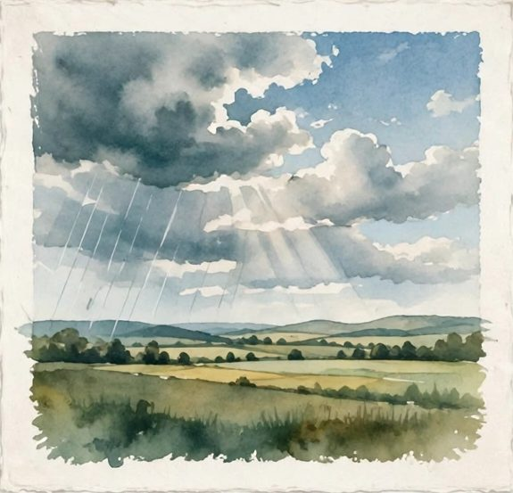
A wide sky holding several kinds of weather at once, green fields below.
There is a way of watching the sky that is really a way of dreading it. The eye goes up already braced, scanning for the worst cloud, reading every change as a threat on its way. People learn to watch their own feelings the same way, flinching at the first sign of sadness, anger, or fear, as if noticing a feeling were the same as being ruled by it. The house teaches a different watch. Slower. Curious. The shepherd's watch, which respects weather without fearing it, because the shepherd and the sky are old acquaintances. Fear of feeling usually wears respectable clothing. It calls itself being sensible, being strong, not making a fuss, and it can run a house for decades on those credentials. The porch watch exposes it gently. The person who is not making a fuss is also, often, not making a reading, and the sky goes unwatched for years.
Reading without fear begins with a simple recognition. A feeling is an event in the body and the day, not a command and not a prophecy. Sadness noticed is just sadness, with its size and its hour. It grows teeth mainly when it is refused, chased, or obeyed instantly. Watched calmly, most feelings show their whole nature within minutes, crest, turn, and begin to lessen, like weather watched from a porch rather than weather denied from behind a latched door, where imagination makes it larger than the sky ever did. The watching improves with practice in a way that can be measured. The first month, every cloud is an emergency. By the second season, the watcher can tell a passing shower from a settling front at a glance, and can say, this one will be over by supper, and be right, and eat in peace.
The Keeper reads the sky every morning and is bored by almost none of it and afraid of almost none of it either. Both boredom and fear are failures of attention, and attention is the skill this room exists to build. Look long enough, kindly enough, and the inner sky becomes legible as a landscape, patterned, changeable, survivable in all its weathers. A person who can read their own sky does not need the sky to be clear. They need it to be readable. It is, once the watching itself stops being an act of fear. There is a bench on the porch of this house that has held many such lessons, and its wood is worn smooth by them. Sit, watch, wait, describe, in that order, and let the description be plain. A person who can describe their own sky accurately has very little left to be ruled by, in any weather.
36The Forecast Is Not the Day
Every morning the Weather Desk issues a small forecast, and every evening the Keeper writes beside it what the day actually did. The two columns rarely match exactly, and the gap between them is one of the most instructive sights in the house. People live by forecasts of feeling. They decide at breakfast that the day will be unbearable, or that they will certainly fail at calm, and then they live inside the prediction so completely that the real day, often milder, passes almost unnoticed behind it. The evening comparison is never done in a spirit of mockery. The morning self that wrote the dark forecast was doing its best with the light available at dawn. The Keeper simply keeps the record, week upon week, until the pattern is too plain to argue with, and the forecasts themselves begin, slowly, to soften.
Worry is a forecast that has forgotten it is one. It presents a possible storm in the tone of a settled report, and the body, trusting the report, dresses for weather that may never arrive. The house does not ban forecasting. A forecast, held lightly, is how umbrellas get carried and visits get planned. The error is only in the holding. A forecast is a guess offered by an interested party, the mind at dawn, and it deserves the respect due to a guess, which is some, and not the obedience due to a fact. Held too tightly, a bad forecast can arrange the very weather it predicts. A day approached as certainly unbearable gets no open windows, no visitors, no walk, and by evening it is, in fact, unbearable, and the forecast claims its victory. The house calls this the self sealing jar, and watches for it with particular care.
So the practice here is to check the actual sky at intervals, against the forecast, and let the day correct the paper. The feared conversation turns out ordinary. The dreaded afternoon contains an hour of unexpected ease. Written down over months, the corrections teach what no argument can. Our forecasts run dark, as a rule, darker than our days. A person who knows their own bias can allow for it, the way a good sailor allows for a compass that reads a few degrees off true. The correction habit extends outward kindly. Other people's forecasts about us, delivered with great confidence at family tables and office doors, are also only forecasts. They can be checked against the actual sky of an actual life, entered in the log, and given exactly the weight the evidence supports, neither more nor less.
37The Body Keeps the Register
A set of brass scales on a table, a stone and a feather resting balanced.
The last part of the hall turns from the sky to the shelves, because the house keeps its accounts in more than one book. The body keeps the register. Every feeling that was not allowed its passage through the rooms was entered somewhere in the building itself, in a tightened jaw, a lifted shoulder, a breath that learned to travel only halfway down. None of this was a decision. It was bookkeeping, done faithfully by the only clerk who never sleeps and never, ever loses a page. The register is kept in pencil, which is the house's way of saying that entries are not sentences. A shoulder can soften. A jaw can learn a new resting place. What was written by years of holding can be revised by years of a different practice, at the same unglamorous speed at which it was written.
This is not a frightening teaching, though people sometimes hear it as one. A register is not a punishment. It is a record, and a record can be read, which is what makes it useful. The ache that arrives each evening at the same hour is an entry, dated and placed, and it often corresponds to something the mind agreed not to notice at noon. The Keeper reads the body's register without alarm and without flattery, the way the weather log is read. As information. As the house, reporting honestly on what it has been asked to hold. Reading the register well takes the same skill as reading the sky, description before judgment. Not, my body is broken, but, my breath has been short since March, and March was the month of the locked door. The plain entry points somewhere. The grand verdict points nowhere, and the house has no use for it.
What the register shows, over a life, is the true cost of the locked room, and also the true direction of relief. Entries fade when their weather is finally felt. Old entries soften when the crate they belong to is opened and its contents named. The body is not an enemy keeping score against the person. It is the most loyal part of the household, still carrying, in muscle and breath, everything the person once could not. It sets things down gladly, item by item, when it is finally allowed to. Visitors sometimes ask whether the body ever lies in its register, and the Keeper says, rarely, and never about the fact of weight. It may mislabel an item, as any clerk may, but when it reports that something heavy is being carried, something heavy is being carried, and the only honest question is what, and since when.
38The Shoulders Keep Accounts
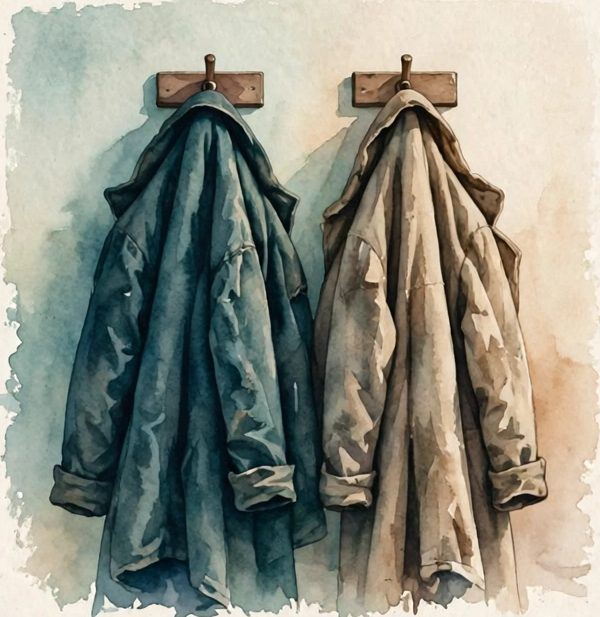
Two heavy coats hung on wall hooks, their shoulders sagging with wear.
Ask a room of people where their stored feelings live, and most hands rise, sooner or later, to the same place. The shoulders. They creep upward through a difficult day like water rising in a lock, an inch at a time, until by evening they are somewhere near the ears and the neck has quietly disappeared. It happens below intention, while the mind is busy being composed. The shoulders do not attend the meetings where calm is performed. They keep their own counsel, and their counsel is written in height and ache. Mass held at shoulder height is the most tiring kind, any carrier of water or wood could explain, and feelings are no exception to the physics of loads. What is carried high and braced against tires the carrier out of all proportion to its weight, which is why small old griefs can exhaust more than large new ones.
There is an old fairness in it. What will not be carried in words gets carried in muscle, and muscle keeps honest books. A long season of holding in, of bracing against weather that was never allowed to pass, settles across the shoulders and the back like a coat that is never taken off, not even indoors, not even at rest. People grow used to the weight and call it their posture, their age, their build. Sometimes it is those things. Sometimes it is a decade of unopened crates, and the hooks stand empty every night. There is also the matter of the empty hooks. A house provides hooks by the door precisely so that heavy things need not be worn from room to room, and a person provides the same mercy in a life, places where the load may legitimately be set down, an hour, a friendship, a desk with a register on it.
The Keeper hangs coats up as an evening ritual and suggests, without insisting, that shoulders are for the same mercy. Roll them back, let them drop, notice how far they had climbed and what the day had quietly loaded onto them. It will not empty the locked room by itself, and the house claims nothing of the sort. But a register that is read daily stops being a surprise, and a weight that is noticed can, in time, be set down on purpose, on a particular day, by name. The Keeper makes no promises about posture and claims none. Shoulders are shoulders. But a person who has once felt the difference between carrying everything and carrying today's portion tends to remember the hooks, and to glance at them, on bad evenings, with the beginning of a decision in the glance.
39Breath, Kept Short
Of all the entries in the body's register, breath is the one that can be read in real time. When weather approaches that a person has decided not to feel, the breath shortens first, before any word is spoken or any door is latched. It becomes shallow and high, a small sipping at the air, as if the house were trying to take in as little of the day as possible. Divers know the pattern, and singers, and anyone who has watched a child decide, visibly, not to cry in company. The child deciding not to cry is making an understandable bargain. The company's comfort, bought with a shortened breath, seems cheap at the time. Only the register shows the instalments, collected nightly for years, long after the company has gone home and forgotten what the bargain was ever supposed to protect.
Short breath is efficient for an emergency and expensive as a way of life. It keeps the weather circulating in the upper rooms, never letting a feeling travel its full course through the house and out. Sadness kept in short breath cannot quite become tears. Anger kept in short breath cannot quite become speech. What is never fully breathed is never fully finished, and so it is entered in the register, and the breath stays short around it, guarding a door the person may not even remember locking, years and years ago. At the Weather Desk, breath is the first reading taken on difficult days, before words are attempted. If the breath will not travel, the words are postponed, not forced. Tea is made. The window is opened. Speech built on short breath comes out short as well, and the house prefers its hard sentences whole.
The Keeper attends to breath the way a gardener attends to water, without forcing it. Longer out than in, when the day allows. A sigh permitted to complete itself instead of being cut off politely at the halfway point. These are small things, and the house is honest that they are small. But breath is the one weather system in the building that answers to a gentle hand, and sometimes, on an ordinary afternoon, one full breath is the first window opened in a room that has been sealed for a very long time. A sigh, completed, is the smallest unit of the whole teaching of this hall. Weather admitted, weather released, nothing stored, no rent charged. The body knew the method before the mind had words for it, and it offers the method freely, many times a day, to anyone willing to stop cutting it off halfway.
40Sleep and the Unlocked Door
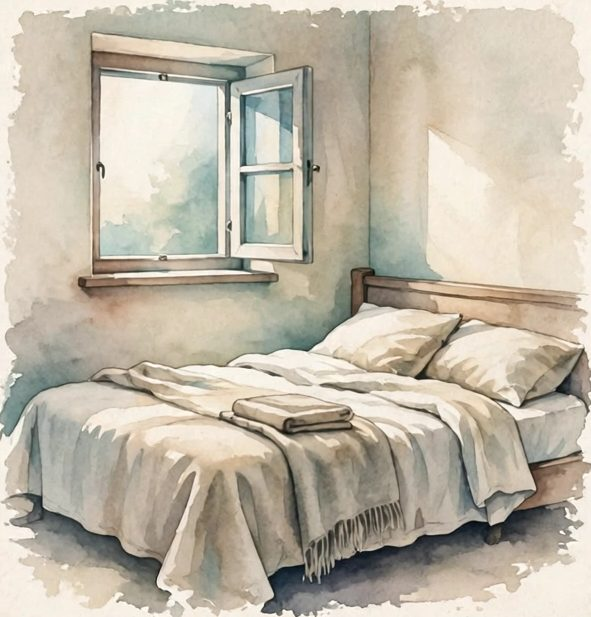
A bed made ready in a quiet room, a window open a crack above it.
The last room of this part of the hall is a bedroom, and it is kept simple on purpose. Sleep is where the register is hardest to argue with. A person can perform calm all day, hold every door, pass every inspection the company requires, and then lie awake at two in the morning while the stored weather walks the house. What was not felt at noon knocks at night, when there is no audience left to perform for and the shoulders, at last, have nowhere to put the coats they have been carrying since morning. The two o'clock hour has its own honesty, and people who live in this house learn to receive its reports without panic. A restless night is a reading, like any other, pointing at the day's storage. It can be written down in the morning, considered over tea, and answered with one small unlatched door before the next night falls.
It is not malice. Night is simply the shift when the clerk catches up on the day's entries, and a crowded register makes for a busy night shift. Dreams do some of the carrying too, lifting crates in strange costumes, setting them down in odd rooms, returning them half opened. People wake tired from this labour and call it a bad night, which it is. The house calls it something slightly kinder and more useful. Unpaid weather, presenting its bill at the only hour when the door of the house stood undefended and the accounts could finally be gone over. Rest, in the teaching of the house, is not the reward handed out after strength is finished. It is part of the structure of strength itself, the beam on which the carrying rests. A person who will not rest is storing weariness in the same locked way as any other feeling, and the register adds it up identically.
So the Keeper leaves the bedroom window open a crack, in all seasons, as the hall's closing instruction in the form of a habit. Let the night air move. Let the day's weather finish leaving. A person who has named one true feeling before bed, set down one honest line at the Weather Desk, and unlatched one small door, sleeps in a different house from the person who has stored another day entire. The bed is the same. The room is the same. The door, unlocked, makes all the difference there is. The crack of window above the bed is the last image of the hall for a reason. It is small, it is nightly, and it is within anyone's power. No grand opening is demanded of a tired person at the end of a day. Just the crack, the cool air, and the knowledge that what needs to leave can leave, all night long.
41The Appetite Ledger
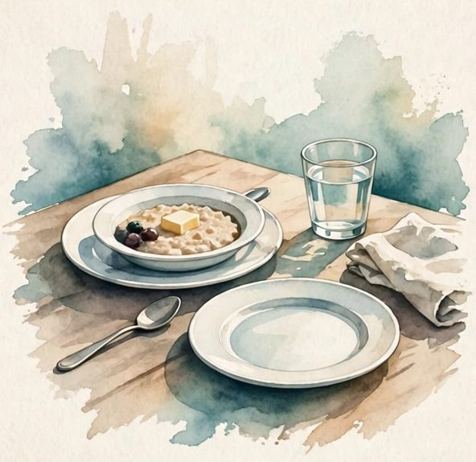
A table set for breakfast, one plate served and one left untouched.
The Keeper of the Open Windows keeps no written ledger of meals, yet the table tells the story plainly enough each morning. One day the bread is eaten with interest and the fruit is gone before the tea cools. Another day the plate sits full and untouched, though nothing in the room has changed. Appetite, the Keeper says, is one of the quiet ways feeling announces itself before words arrive. A heavy week can sit down at the table first. A glad one can too, arriving early and hungry. Neither is a fault to be corrected at once. Both are entries, written in a plain hand, in a book the body keeps without being asked.
Suppression often begins by arguing with this ledger instead of reading it. The plate is emptied out of duty, or left out of pride, and the signal underneath goes unread either way. Strength takes a different approach and treats the change itself as information worth a pause. Something has shifted, the table is saying, even if its name is not yet known. Perhaps grief has taken the taste from things for a while. Perhaps worry arrived in the night and stayed for breakfast. Naming it loosely, even privately, is enough to begin. A feeling named loosely is still weather moving through an open house, rather than weather sealed into a room with the windows latched.
The Keeper therefore sets the table the same way on hungry days and on hollow ones alike. There is bread, there is tea, there is time allowed at the table without comment or hurry. If appetite returns, it is welcomed without ceremony. If it stays away a while longer, the plate is cleared without blame and set again tomorrow. This patience is not neglect. It is the house trusting that the register is honest even when it is inconvenient. Over seasons, the Keeper has learned that appetite usually finds its way back when the feeling behind it has been felt rather than scolded, and that a body listened to early seldom has to speak louder later.
42Tears Are a Working Part
In this house the plumbing is not hidden away in shame, and tears are spoken of the way the Keeper speaks of rain on the roof. They are a working part of how a person is built, no more embarrassing than a tap that runs or a kettle that steams. Water rises in the eyes when feeling rises past a certain level, and it falls, and the level settles again. That is all, and that is enough. To call tears weakness is to call the roof weak for shedding rain. The house was made with channels for water because water was always going to come, in weather fair and foul alike.
Suppression treats tears as a leak to be plugged at any cost. The jaw tightens, the throat closes, the face is arranged into calm, and the water, denied its plain channel, does not vanish. It goes elsewhere. It pools behind the eyes at night, it stiffens the shoulders, it shortens the temper over small things days later. Storage charges rent, and unwept weather charges it quietly and for a long time. The Keeper has seen visitors exhaust themselves holding back a few minutes of rain, then wonder why the whole week felt flooded. The arithmetic is simple and unkind. What is not allowed to fall in drops tends to gather until it finds its own way out.
Strength, by contrast, leaves the channel clear and lets the weather do its brief work. A few tears at the kitchen table, a short rain on a walk, a moment behind a closed door that is closed for privacy and not for shame. Then the face is washed, the tea is poured again, and the day continues, usually lighter than expected. The Keeper keeps a clean cloth by the sink for exactly this ordinary purpose. Nothing is announced and nothing is hidden. Tears in this house are not an event. They are weather passing through a house with sound plumbing, and the sky after them is very often the clearest of the day.
43The Hands Say It First
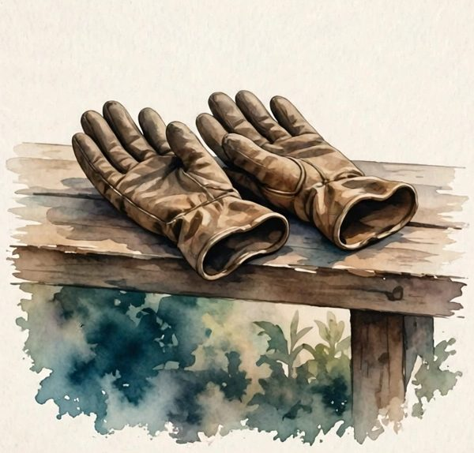
A pair of worn gloves resting palm-up on a bench.
Long before the voice finds words, the hands have usually spoken. The Keeper watches them the way sailors watch a harbour flag. Hands knead bread harder than the dough requires, or pick at a seam, or lie folded with unusual care, each finger pressed still. Hands drum once on the table and stop themselves. Hands reach for a cup and set it down again unfilled. None of this is planned, and that is why it is honest. The hands are poor actors. They report the weather in the room before the mouth has agreed on a story to tell about it, and they report it without decoration. It needs no audience to be true.
Suppression asks the hands to perform calm along with everything else. They are stilled, hidden under the table, kept busy with needless tasks so their message cannot be read. But stilled hands are not a settled person. The feeling moves instead into the jaw, the shoulders, the shallow breath, because what is held in is stored somewhere, and the body always finds a shelf for it. The Keeper prefers another courtesy. Let the hands be seen, first by their owner. A clenched hand noticed is already a sentence read. Often, once it is noticed, it opens by itself, the way a latched window sometimes swings loose once someone finally looks at the latch.
There is kindness in learning this language early, while the signals are still small. The hands tightening during a conversation are an invitation to slow down, not a failure of composure. The hands shaking slightly are asking for a pause, a breath, perhaps a glass of water, perhaps an end to the day. Strength answers such requests in plain ways and without delay. It does not wait for the whole body to shout what the hands whispered an hour ago. In the evening the Keeper rests both hands palm up on the bench by the door, empty at last, and considers that plain posture, open and holding nothing, as good a summary of the day as any words.
44Rest Is a Form of Honesty
A hammock strung between two posts in shade, a book left closed on it.
The Keeper rests in the middle of the day without apology and without disguise, and this surprises visitors more than almost anything else in the house. The hammock is strung in plain sight. The book lies closed. No errand is invented to justify the stillness, no tiredness is dressed up as illness to make it acceptable. Rest here is simply honesty in another form. The body says the vessel is low, and the Keeper believes it the first time it speaks. To keep working past that signal while calling it strength is, in the Keeper's view, a kind of falsehood told with the whole body at once. The shade is cool and ordinary.
Suppression is tireless in this particular dishonesty. It performs energy it does not have, agrees to one more task, pours from an empty jug and calls the scraping sound generosity. For a while the performance holds. Then the rent for all that storage comes due at once, in a flattened week, a snapped word, a morning when nothing at all can be lifted. The house has a plainer arrangement. Rest is taken in small, regular amounts, the way water is drawn from a well in buckets rather than all at once. A pause after work. An evening kept empty on purpose. Sleep defended like a door that matters. The pattern repeats quietly over years.
Rest also tells the truth in the other direction, and the Keeper trusts it for that too. After real rest, the desire to work returns on its own, unforced, the way appetite returns after weather passes. Tasks that looked enormous at dusk look ordinary again by morning. Nothing about the work changed; the vessel was refilled, that is all. So rest is never treated in this house as a reward for finishing, because the work of a life is never finished. It is treated as part of the work itself, as honest as any ledger entry. A rested person can feel clearly. A tired one mostly feels tired, and mistakes that fog for the whole sky.
45What the Body Asks For
If the body were asked directly what it wants, its requests would sound almost disappointingly plain. Water, when the mouth is dry. Food, when the stomach has been empty too long. Air, when the room has gone stale. Movement, after hours held in one shape, and stillness, after hours of motion. The Keeper keeps a short list of these requests pinned inside a cupboard door, not because they are hard to remember, but because they are easy to forget precisely when they matter most. Feeling clouds the hearing. A person deep in grief or worry can walk past every one of these plain needs as if they belonged to somebody else.
Suppression complicates what the body asks for by answering it with substitutes. Thirst is answered with more work. Tiredness is answered with another cup of something strong. A need for air becomes an argument, a need for food becomes an evening of numb scrolling through other people's days. The original request, unanswered, does not retire politely. It waits, and it joins whatever weather is already in the house, until sadness and hunger and stale air are so braided together that none of them can be named. The Keeper's habit is to unbraid from the simplest end. Drink the water first. Eat something warm. Then see what feeling remains standing when its companions have been answered.
What remains after the plain needs are met is the feeling itself, in its true size, and it is almost always smaller than the tangle suggested. This is one of the house's most useful lessons. Not every heavy afternoon is a heavy life. Some of it was thirst. Some of it was a room that needed a window opened. Strength is not grand here at all. It is the willingness to ask, in order, what the body is actually requesting, and to answer those requests without debate. The Weather Desk keeps no grand instruments. It keeps a jug of water, a loaf under a cloth, and a chair by a window that opens.
The Weather Desk
One desk receives all correspondence for this house — questions, corrections, and word of any weather a visitor has been carrying shut for a long while: the feeling never named, the calm performed once too often, the door they are thinking of opening. It is read in the order it arrives, and entered in the register of weather.
46Listening Downward
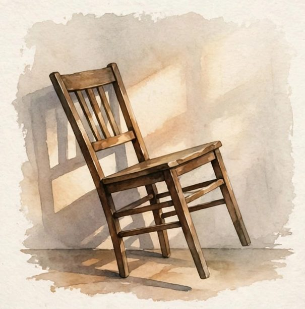
A chair tipped back against a wall, resting, in afternoon light.
Most listening in a house happens at the level of the head, where words are made and answered. The Keeper practises another kind, called here listening downward. It means letting attention sink below the conversation of the mind into the quieter reports of the chest, the stomach, the hands, the breath. A tightness arrives before an opinion does. A sinking feeling shows up before the reason for it has been found. These early signals are not dramatic. They are more like the first change in the air before rain, noticeable only to someone who has made a habit of standing still for a moment and checking. The house grows quieter for it.
Suppression listens only upward, to the story the mind prefers, and treats everything below the neck as noise to be managed. The story says the situation is fine, the arrangement is fair, the day is ordinary. Meanwhile the stomach stays knotted through every meal and the breath stays shallow through every evening. The body is not being difficult. It is filing the same report, patiently, at rising cost, because the report is true and has nowhere else to go. Storage charges rent in exactly this currency. The Keeper has learned to read downward early, while the message is still a whisper and answering it is still cheap and simple. The report deserves a hearing first.
Listening downward changes what strength looks like in practice. It becomes slower and less impressive from the outside. A pause before answering. A hand resting flat on the table while attention checks the weather below. A sentence that begins honestly, with the admission that something feels off before any reason can be offered. The Keeper tips a chair back against the wall in the afternoon light and does nothing else for a while, and counts that nothing as work of a real kind. Feelings heard early rarely need to raise their voices. Feelings ignored must eventually knock down something to be noticed, and the repair always costs more than the listening would have.
47The Body Is Not the Enemy
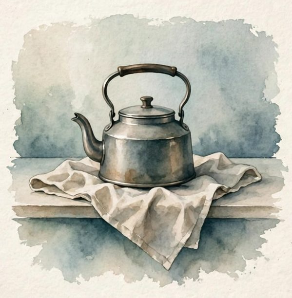
A kettle taken off the stove and set on a cloth to cool.
It is possible to live for years treating one's own body as an opponent to be outlasted, outargued and overridden. The Keeper meets this attitude often in visitors and recognises its vocabulary at once. They speak of fighting their tiredness, defeating their appetite, conquering their nerves, as if a war were being waged inside one skin and only one side could win. But a body is not an invader in its own house. Its signals, even the unwelcome ones, are reports from inside the walls, not attacks on them. A kettle taken off the heat is not surrendering to the water. It is being handled with ordinary sense before the boiling does damage.
Suppression depends on this idea of the body as enemy, because only an enemy's messages may be silenced without guilt. Hunger becomes weakness to be beaten. Tears become a breach to be sealed. Shaking hands become treason. So the war continues, and its costs are quietly billed to sleep, to temper, to the slow narrowing of what a person feels able to do. The strange part, the Keeper notes, is that the body keeps serving faithfully through all of it. It carries the person to every battle against itself. It heals, it wakes, it digests, it steadies. Few allies would stay so loyal under such treatment, or ask so little in return for staying.
Strength makes peace instead, and peace turns out to be practical rather than soft. A body treated as an ally is told the truth and given what it asks for where that is possible. Its warnings are checked early instead of silenced late. Its limits are planned around rather than crashed into. In return it becomes a clearer instrument, the way a cared-for vessel pours more cleanly than a neglected one. The Keeper sets the kettle on a cloth to cool and thinks no worse of it for having boiled. Boiling is what kettles do under heat. Cooling is what they do after. Neither state is a verdict on the kettle.
48The Register, Read Kindly
At the end of this part of the house stands the Weather Desk, where the register of the body is kept, and the last lesson of the register is about how it is read. The entries are not flattering. They record the untouched plates, the held-back tears, the weeks when rest was skipped and the bill arrived anyway. Read harshly, such a book could become an accusation, page after page of evidence against its keeper. The Keeper refuses to read it that way. The register is read kindly, in lamplight, the way one reads the log of a ship that came through rough weather. The point of a log is not blame. The point is knowing where the reefs are.
Blame, the Keeper has noticed, is itself a form of suppression in disguise. A person busy scolding themselves for feeling too much, too long, too loudly, has no attention left for the feeling itself. The scolding fills the room and the weather waits outside the door, unfelt and therefore unmoved. Kindness is not indulgence here; it is efficiency of an honest kind. To note an entry plainly, without a verdict attached, takes a sentence. To argue with it takes an evening. The house chooses the sentence. What is recorded without blame can be learned from. What is recorded with blame is usually just hidden better next time, and hidden entries are the ones that gather weight.
So the register stays open on the desk, held down by a smooth stone, available to be read by anyone patient enough to learn its hand. Some pages are smudged. Some seasons are missing almost entirely, and those gaps are entries too, recording the years when the windows stayed latched. The Keeper does not tear them out. A whole book, read kindly, teaches the shape of a whole life, and that shape is the beginning of carrying things differently. The next rooms of the hall turn from the register to the carrying itself, from the body that records the weather to the vessels that learn, at last, how to hold water without sealing it in.
49Water and Vessels
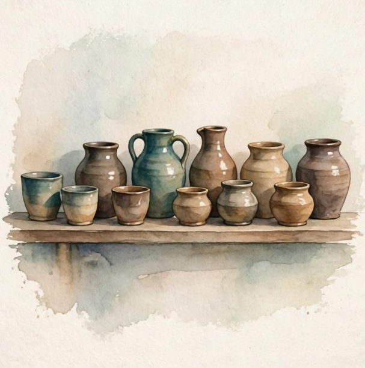
A row of clay vessels on a shelf, cups, jugs and jars in earthy glazes.
The second half of this hall begins with a shelf of plain vessels, and the Keeper uses them to teach the difference that the whole house is built on. Feelings, in this teaching, are water. They arrive like weather, they rise and fall, they seek their level, and they cannot be argued out of being wet. A person, then, is less like the weather and more like a vessel among vessels. The question is never how to stop the rain. The question is what kind of vessel to be: how much it can hold, how cleanly it can pour, whether its walls are sound, and whether its lid has been sealed shut by hands that meant well and feared the spilling more than the pressure.
Suppression, seen from this shelf, is the sealed jar. Everything is put in and nothing is let out, and for a while the jar looks admirably tidy on the shelf among the others. But water sealed in does not stay the same. It stagnates. It presses. It finds the hairline crack eventually, usually at the worst hour and in the worst company, and then it is called an outburst, as if the water were to blame. Strength is a different shape altogether: an open vessel with sound walls, filled and poured and filled again, its openness not a weakness in its making but the entire point of it. A vessel that cannot be poured from is a failure, however impressive it looks.
The Keeper lifts each vessel down now and then, partly to dust the shelf and partly to remember what carrying actually involves. A vessel is judged over years, not moments. It is allowed to be emptied completely and set down. It is allowed to hold plain water on plain days without ceremony. And it is never, in this house, required to hold the whole river. That teaching belongs to a later room. This room asks only that the shelf be looked at honestly, and that each person standing before it consider, without blame, which shape their own carrying has taken, and whether the lid, if there is a lid, was their choice or an old habit left over from a stricter house.
50A Sound Vessel
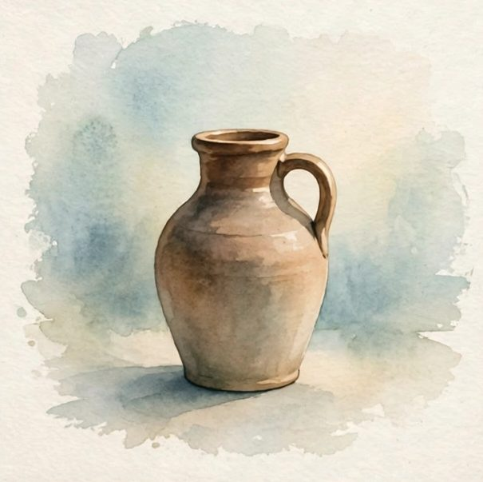
A sound clay jug standing in morning light, whole and unchipped.
A sound vessel is not a perfect one, and the Keeper is careful to separate those two ideas before anything else is taught in this room. Soundness means the walls hold, the base sits flat, the handle bears weight, and water poured in can be poured out again without leaking through hidden faults. It does not mean the glaze is flawless or the shape is the finest on the shelf. A sound vessel can be plain, repaired in its history, darkened by years of fires. What it cannot be is sealed, and what it need not be is unmarked. The morning light in this room falls on a jug that has simply been kept in working order, and that keeping, repeated daily, is most of what strength is.
Soundness is maintained in unremarkable ways. The vessel is rinsed after use instead of being left to sour. It is not filled past its true capacity to prove a point. It is set down when the carrying is done rather than held aloft out of habit. Applied to a person, the list is equally plain. Feelings are rinsed out by being felt and named while they are fresh. Rest keeps the walls from thinning. Honest speech keeps the pouring clean. None of this is dramatic, and that is the teaching. Suppression loves drama deferred, the sealed jar and the eventual flood. Strength prefers maintenance, the daily rinse, the unglamorous soundness of a vessel nobody has to rescue.
The Keeper also notes what a sound vessel does not do. It does not slosh its contents over others to prove it is full. It does not refuse water out of fear of its own walls. It stands ready, empty or full, and its readiness is quiet. Visitors sometimes ask for the secret of the jug in the morning light, expecting a firing technique or a rare clay. There is none to give. It was made ordinarily, kept ordinarily, and mended promptly the one time it was dropped. The house offers this as genuinely good news. Soundness is within ordinary reach, maintained by ordinary care, and no one needs to be remade from scratch in order to begin carrying their weather well.
51The Cracked Cup Still Carries
On the shelf there is a cup with a crack running down one side, and the Keeper refuses to throw it away. The crack is real. It happened in a hard season, the way such things happen, through a knock that might have shattered a thinner cup entirely. Yet the cup still carries. Filled with ordinary care, short of the crack's lowest point, it holds tea perfectly well and goes to the table most days. The lesson stands in plain sight at breakfast. Damage and usefulness are not opposites. A vessel can have a true history written on its side and still be a vessel, still be trusted, still be the one reached for first.
Suppression insists on hiding the crack, and the hiding costs more than the crack ever did. The cup must be turned always to one angle, kept at the back, filled and emptied in secret, defended with stories. Worse, a person hiding a crack often stops using the cup at all, and then stops trusting every other vessel they own, until carrying anything at all feels dangerous. Strength turns the cup slowly in the hand and looks at the damage in daylight. Yes, it is there. Yes, it sets a limit worth respecting. Within that limit, everything still works. A limit honestly known is a handle for carrying. A limit hidden is a surprise waiting inside every full cup.
The Keeper goes further and says the crack teaches the cup something the unmarked ones never learn: exactly how much it can hold, and how it feels just before holding becomes too much. That knowledge is precious at the Weather Desk. A person who knows their own crack pours earlier, rests sooner, asks more plainly, and spills less on everyone around them. The cup is not celebrated for being cracked; the house sells nothing and promises nothing, not even wisdom from damage. It is simply kept in service, neither hidden nor displayed, doing its work at its honest measure. Many visitors leave this room quieter than they entered, having understood that their own crack, whatever season made it, does not end the carrying.
52Pouring Out Is Not Spilling
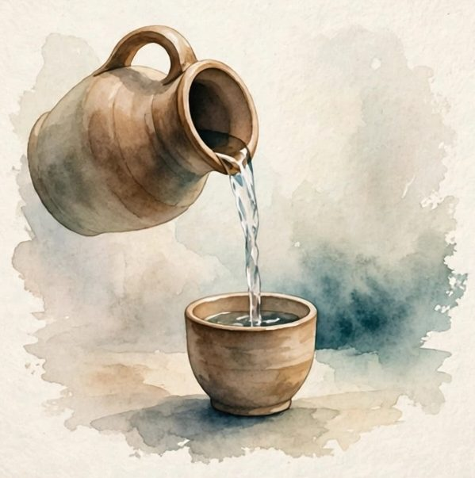
Water poured from a jug into a cup in a steady stream, nothing spilled.
There is a fear, common among careful people, that letting a feeling out means losing control of it entirely, that the first honest sentence will become a flood. The Keeper answers this fear at the sink, pouring water from jug to cup in one steady stream. Pouring, it turns out, is a skill with a shape. The vessel is lifted deliberately, tipped at a chosen angle, and the water moves in a directed line into a chosen place. Then the vessel is set level again, still holding most of what it held. Nothing about this resembles dropping the jug. Pouring out is not spilling. It is spilling's opposite in every way that matters: chosen, measured, aimed, and finished when the pourer decides.
Spilling is what happens when pouring has been refused too long. The sealed jar finally tips under its own pressure, the carried load shifts at a bad moment, and everything goes everywhere at once, over people who were never chosen to receive it. Suppression, which promised tidiness, delivers the spill in the end and calls it an accident. The house prefers the honest sequence. Small pours, made often, into chosen cups: a true sentence to a trusted person, a page filled in private, a few words at the Weather Desk at the end of the day. Each pour is brief. Each leaves the vessel level and its keeper unashamed. The water level drops by exactly the amount that was poured, no more, and that precision is the point.
Learning to pour is mostly a matter of starting smaller than pride prefers. A single sentence is a pour. Admitting tiredness is a pour. Saying that a remark landed badly, while it still feels small enough to say calmly, is a pour made in good time. The Keeper watches visitors practise on water before trusting themselves with words, and the practising is not childish. The hand learns steadiness by repetition. So does the voice. Over a season, what changes is not the amount of weather, which stays beyond anyone's command. What changes is the confidence of the carrying, the calm knowledge that what is inside can be let out in measures, on purpose, without breaking anything at all.
53The Dammed Stream
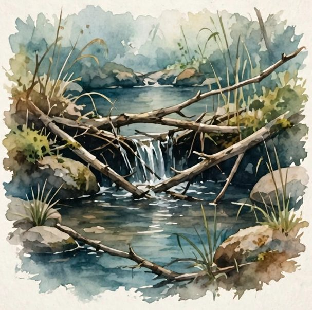
A stream dammed by fallen branches, water pooling quietly behind them.
Below the house a stream runs through the grounds, and in one season fallen branches lodge across it and the water begins to pool. At first the pool looks peaceful, even attractive, still water mirroring the sky where the stream used to hurry. The Keeper walks down to look at it without admiration. A dammed stream is suppression drawn in water, and its calm is the calm of accumulation. Every day the flow that should have passed in an hour is stored instead. The pool deepens. The pressure on the branches grows by quiet increments. Nothing is being solved by the stillness. Everything is being postponed, with interest, to a day nobody gets to choose.
The costs spread outward in ways that are easy to miss while the surface stays smooth. Below the dam the stream bed runs thin and the banks dry out, so the places downstream, which depended on ordinary flow, begin to go thirsty. In a person, the downstream country is everything the feeling would have watered: appetite, patience, laughter, the ability to be reached. Friends say the person has gone distant and cannot say when it happened. It happened at the dam, one withheld day at a time. Meanwhile the pooled water itself grows stagnant, losing the freshness that movement gave it, until even the feeling, when it finally moves, arrives muddied and hard to recognise as what it originally was.
The Keeper does not tear the dam out in one dramatic hour, because sudden releases have their own damage downstream. The branches are lifted one at a time, on chosen days, with somewhere for the water to go. A conversation here. A grief finally spoken there. An anger let out in words before it can become weather for the whole house. The stream quickens gradually, the pool lowers, and one morning the sound of running water is simply back, unremarkable and right. Strength, in this room of the hall, looks like regular clearing rather than heroic demolition. Streams are meant to move. Feelings are meant to move. The work is keeping the channel open, a branch at a time, for as long as the water runs.
54Wells and Buckets
The house draws its water from a well, and the well teaches a patience that the tap in the kitchen cannot. A well is not filled by effort or emptied by one drawing. It gathers slowly, from deep sources, through seasons of rain falling elsewhere and travelling unseen through the ground. The Keeper draws a bucket in the morning and a bucket in the evening, and the level, to any casual eye, barely changes. This is the rhythm strength aims for in a person: regular small drawings on a deep supply, rather than desperate hauling in a drought that better habits would have prevented. What is drawn daily in buckets rarely has to be begged for in a crisis.
Suppression misunderstands wells in both directions at once. Some seal the wellhead entirely, refusing to draw even when thirsty, proud of how untouched their depths remain, until the water below goes stale from disuse and the ropes rot quietly in the dark. Others, having refused for years, arrive one day demanding the whole well at once, wanting a single conversation, a single outpouring, to restore everything the dry years used up. Wells do not work that way, and neither do people. The supply is real but the drawing is gradual. A bucket is not an insult to the depth. A bucket is exactly the size a day's carrying was designed around, and the design is merciful.
There is also the matter of letting the well refill, which the Keeper guards as carefully as the drawing. Rest, quiet, ordinary pleasure, time near growing things: these are rain for the deep sources, and they cannot be hurried or performed. A person who only ever draws, however steadily, eventually hears the bucket scrape stone. The sound is not a failure. It is information, delivered in the well's own plain language, that the season for gathering has come round again. In this house the bucket is then set down without argument and the well is left in peace under its stone rim, trusted to do deep work in the dark that no hauling could accomplish faster.
55Carrying Together Halves the Weight
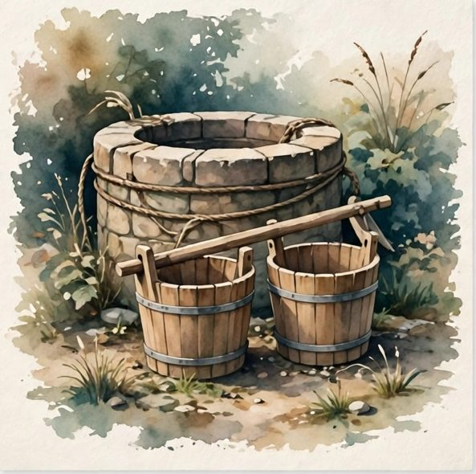
Two buckets resting on the ground beside a well, a carrying yoke across them.
By the well there rests a carrying yoke, shaped for shoulders, with a bucket hung at either end, and the Keeper's teaching on it begins with simple balance. A load carried across both shoulders, evenly shared between two vessels, can be borne farther than the same load dragged in one hand. The principle widens when a second person steps under the other end of the work. Two carriers do not merely add strength. They change the nature of the load itself. It steadies. It stops swinging. The road that looked too long at the wellhead begins, walked in company, to look like a road like any other, measured in conversation as much as in distance.
Suppression refuses the yoke out of a mixture of pride and old training. It carries everything in one hand, in silence, and calls the lopsided limp it produces by the name of strength. The cost shows in the gait before it shows anywhere else. One side of a life overdevelops while the other withers; the whole person tilts. Worse, the silent carrier often turns quietly resentful of the very people who would gladly have shared the load, punishing them for failing to offer what was never requested. The house names this plainly because it is so common. Help unasked-for cannot be counted on, and its absence is not evidence that no one cares. It is evidence that no one was told where the well was.
Strength therefore practises the asking and the accepting as skills in their own right, and the next room of the hall takes up the asking directly. Here it is enough to stand by the yoke and consider the arithmetic of company. A grief described aloud weighs less than the same grief carried in a sealed chest, not because words are magic, but because the carrying is now distributed across more than one frame. The Keeper has watched pairs leave the well together at an unhurried pace, buckets level, talking about ordinary things. Nothing about the water changed. Everything about the road did. That is not a small thing. On long roads, it is nearly the whole thing.
56Asking for Help Is a Handle
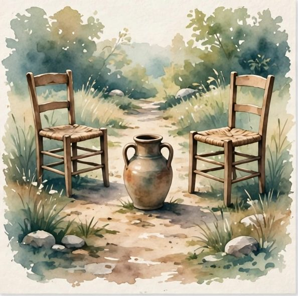
A jug with two handles, set down on a path between two chairs.
Among the vessels on the shelf, the Keeper keeps one jug made with two handles, though one would have served for pouring, and it is the most handled teaching object in the house. The second handle exists so that another person can take hold. That is its entire purpose, and it reframes the act that so many visitors arrive ashamed of. Asking for help, in the design of this jug, is not a crack in the vessel. It is a handle: a part made deliberately, by the maker, in the knowledge that some loads are meant to be lifted by more than one pair of hands. A vessel with no way for others to grip it is not stronger. It is only harder to help.
Suppression calls the handle a flaw and hides it, turning that side of the jug always to the wall. The reasons given are respectable sounding. Others are busy. Others have their own weather. It would be a burden, an imposition, a confession of failure. Underneath them all sits a plainer fear: that the handle will be refused, and the refusal will prove something final about the asker's worth. The Keeper answers this fear without arguing with it. A handle refused is information about that day, that person, that load, and nothing more. Handles are offered again elsewhere. The jug was not made to be lifted by one particular pair of hands, and its worth was never decided by any single lifting, offered or declined.
So strength practises asking in the same plain way it practises pouring: early, specifically, and in small amounts first. Not a flood of need released at midnight after years of silence, but a bucket's worth, named clearly, while the road is still short. Help with this one task. Company on this one afternoon. A listener for this one feeling, with no fixing required. Each answered ask teaches the hands that handles hold. Each clear ask spares the other person the exhausting work of guessing. The two chairs by the path are rarely both empty in this house for long, because the jug between them was made, from the beginning, to be lifted by whoever is willing, together.
57The Kettle Sings Before It Boils
Anyone who has lived with a kettle knows that it announces itself in stages. First a faint ticking as the metal warms. Then a low murmur, a gathering hum, the first thread of steam at the spout. Only later comes the full rolling boil and the loud song at the lip. The Keeper points out that feelings follow the same honest sequence, and that the early sounds are a courtesy, not an inconvenience. A kettle caught at the murmur can be taken off the heat with one finger's worth of effort. The same kettle ignored to a rolling boil scalds, rattles its lid, and fills the whole kitchen with steam that everyone present must breathe.
Suppression treats the early sounds as weakness and trains itself not to hear them. The ticking is dismissed. The murmur is talked over. By the time the boil arrives, it seems to come from nowhere, sudden and disproportionate, and the person is as surprised as anyone by their own weather. Nothing came from nowhere. The sounds were made, in order, at reasonable volume, and went unheard. This is why the Keeper values small honesty so highly. To say that irritation has begun, while it is still a murmur, costs a sentence. To manage it at the boil costs an apology, sometimes more. The arithmetic favours the murmur every single time it is offered, like most of the arithmetic in this house.
Listening for one's own kettle is a learnable habit, and the Weather Desk keeps it deliberately simple. A few pauses in the day, attention dropped downward for one breath, a plain question asked in private: what stage has the water reached. Ticking, murmur, steam, or boil. Each answer has its own appropriate response, from a glass of water and a window opened, to a conversation held today rather than next week, to a full stop and the kettle lifted clear off the heat altogether. None of these responses is shameful and none is dramatic. They are kitchen work. The singing of a kettle, heard early, is simply the sound of a house being told the truth in time to act on it gently.
58Do Not Carry the River
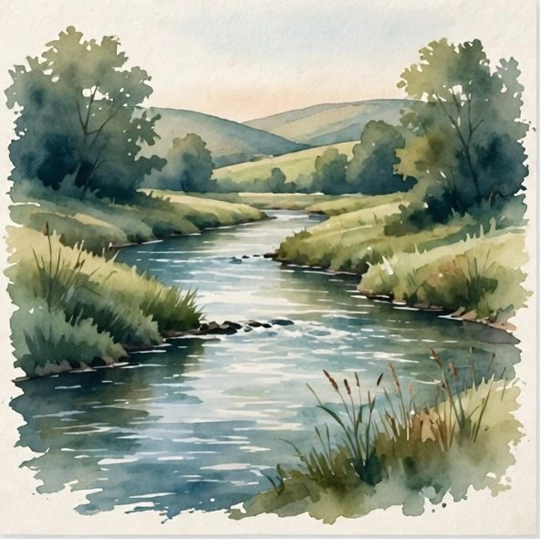
A river in full course between green banks, moving unhurried.
At the edge of the grounds the stream joins a river, and the river is where the Keeper delivers the gentlest correction in this hall. Some visitors, having learned at last to feel their feelings instead of sealing them away, make the opposite error and attempt to carry everything. Every grief in the household becomes theirs to haul. Every worry in the wider world is taken up like a bucket that must not be set down. They confuse openness with obligation, as if an unlidded vessel had promised to hold the whole watershed. The Keeper walks them down to the bank and lets the river correct the idea by simply passing, enormous and unhurried, in front of them.
No vessel was made to carry a river, and no person was either. Rivers are meant to be lived beside, drawn from, crossed at bridges, and respected in flood. They are not meant to be lifted. The distinction that strength learns here is between feeling something fully and assuming total charge of it. A person can sit on the bank with a real grief, theirs or another's, honour it with full attention, weep at it honestly, and still let the river keep most of its water. Carrying a cup away for the road is enough. The river does not feel abandoned when a traveller walks on. It was never asking to be carried. It was asking, at most, to be witnessed and not dammed.
Setting down what was never one's load feels, at first, suspiciously like not caring, and the Keeper treats that suspicion kindly because it comes from a good place. But the testimony of the house is consistent. Those who try to carry the river drop the buckets they were actually given. Their own weather goes unfelt while they haul at everyone else's, until suppression returns through the back door wearing the clothes of devotion. The yoke by the well fits two buckets, not a watershed. Strength accepts that measure without resentment, carries its own water well and its share of a companion's, and leaves the river to its banks, flowing, witnessed, and gloriously unlifted, as it was always meant to be.
59Water Finds Its Level
A still pool at evening reflecting the sky, level and calm.
After rain, the grounds hold water in a dozen places at once: the pool below the old dam, the basin by the door, the hollow of a stone, the wide river itself. Left alone, each finds its level, and the Keeper uses that plain fact to close arguments that words alone cannot settle. Feelings, given an open vessel and a little time, settle toward their true level in the same way. The first hour of a grief is a flood height, not a final measurement. The first flush of anger stands higher than the anger will stand tomorrow. Judging the water while it is still sloshing is the most common measuring error in the whole house, and the most easily forgiven.
Suppression interferes with levels by never letting the water rest. The vessel is shaken by constant rehearsal, stirred by midnight examination, carried from room to room and peered into hourly, and then its keeper despairs that it never clears. Other vessels are sealed mid-flood, freezing a temporary height into a permanent verdict: this is simply how things are now, forever, at the worst mark the water ever reached. Strength is more patient with physics. It sets the vessel down on a flat place, in the evening, and waits. Sediment sinks. Surfaces smooth. What looked like a turbid whole separates, given stillness, into what is heavy and lasting and what was only stirred up dust from the road.
The level a feeling settles at, once it has been allowed to settle, is trustworthy information for the Weather Desk. Some griefs settle deep and stay, and the house makes room for them at their true depth rather than demanding they shallow. Some fears, given one quiet evening, settle to almost nothing, revealing themselves as weather from a single passing cloud. Either result is worth having, and neither can be rushed or performed. The Keeper ends the day by the still pool more often than anywhere else on the grounds, watching the sky come back into the water as it calms. What the pool reflects, once it is level, is accurate. So is what a person feels, once they have finally been allowed to stop sloshing.
60What a Vessel Is For
The last room of the hall holds a single vessel on a table by an open window, and the Keeper sums up the whole teaching here without raising the voice at all. A vessel is for carrying, and carrying has a rhythm: it is filled, it is borne a useful distance, it is poured out where the water is needed, and it is set down empty to rest. Every part of that rhythm matters. A vessel that is never filled has missed its purpose as surely as one that is never emptied. A vessel never set down becomes a burden to its own bearer. Strength, seen whole at last, is nothing grander than this rhythm kept faithfully over years: feeling, carrying, pouring, resting, and then standing ready again.
Suppression breaks the rhythm at the pouring and calls the breakage virtue. The sealed jar, admired on its shelf, is in truth a vessel retired early from everything it was made for, holding one old filling forever while life asks daily for fresh water to be carried. The house's answer has been the same in every room. Open the windows. Keep the walls sound and honour the crack. Pour in small measures, early, into chosen cups. Share the yoke. Use the handle. Hear the kettle at its murmur. Draw the bucket, let the well refill, and leave the river in its banks. None of this requires a different vessel. It requires only that the one on the table be used as vessels are meant to be used.
In the evening the Keeper rinses the vessel, sets it where the morning light will find it, and leaves the window open on the softening weather. Nothing has been promised in this hall and nothing has been sold, and the vessel guarantees nothing either. Rain will come again in its season, some of it heavy. That was never the problem the house set out to solve. The point is simpler and stands on the table in plain sight. What passes through a sound vessel leaves it clean and ready. What is sealed inside stays, and charges rent, and presses on the walls. Tomorrow the carrying begins again, and the vessel, emptied and rested and honestly kept, will be equal to it in the ordinary way that well-kept things are.
The Weather Desk
One desk receives all correspondence for this house — questions, corrections, and word of any weather a visitor has been carrying shut for a long while: the feeling never named, the calm performed once too often, the door they are thinking of opening. It is read in the order it arrives, and entered in the register of weather.
61Rooms for Other People
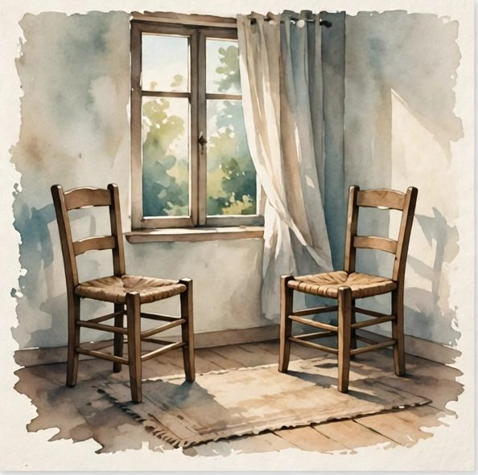
A room arranged for two, two chairs turned toward each other by a window.
The house keeps some rooms that are not meant to be sat in alone. Their windows open the same way, their light falls the same way, but the chairs are turned toward each other, and that turning changes everything that happens there. A feeling carried into such a room does not have to be carried in silence. It can be set down, the way a jug is set down on a table between two people, visible to both, belonging to the hour rather than hidden inside one chest. The Keeper of the Open Windows tends these rooms as carefully as the quiet ones, because strength, in this house, was never only a private matter.
Suppression loves a single chair. It prefers the latched room where one person sits with the weather pressed flat and calls the flatness peace. But weather shared is weather halved in weight, even when nothing about it changes. A second person in the room does not take the rain away. They simply witness that it is raining, and the feeling no longer has to spend its strength proving that it exists. That is why these rooms are kept ready in advance, with water poured and chairs placed, long before any particular sorrow or anger arrives to use them. The chairs were placed long before they were needed, which is how the house prepares for weather it cannot foresee.
You do not need grand words to enter such a room. You need only the willingness to let another person sit near the truth of your day without tidying it first. The house makes no promise that company will mend anything. It observes, more modestly, that feelings kept in company behave differently from feelings kept in storage. They move. They finish their sentences. They leave by the window instead of settling into the walls. A room for other people is not a stage and not a courtroom. It is a place where the weather is allowed to be weather, in the presence of someone else. Two people breathing the same air is already a different arrangement from one person holding their breath alone.
62Saying It Plainly to a Person
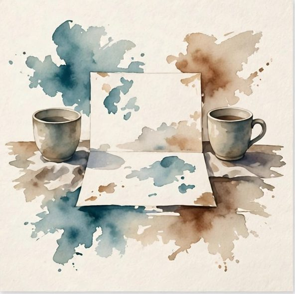
An open letter lying on a table between two cups, abstract marks only.
There is a difference between a feeling thought and a feeling said. Thought can circle a room for years, growing larger in the dark, polishing its own importance. Said plainly to another person, the same feeling takes its actual size. It becomes a sentence with a beginning and an end. The house honours the plain sentence above the eloquent one, because eloquence can hide as much as it reveals, while plainness leaves the window open. I am angry. I am sad today. I was afraid and I did not say so. Sentences like these are small doors, and they open outward. The plain sentence may tremble on its way out, but trembling does not make it any less true or less worth hearing.
The Keeper is known for saying things early, while they are still light enough to carry in one hand. A grievance spoken on the day it gathers is a cup of water. The same grievance kept for a season becomes a sealed jar, heavy, airless, and hard to open without spilling. Plain speech is not careless speech. It chooses its hour, it keeps its voice level, and it speaks about the weather inside rather than throwing weather at the person listening. It says what is true and stops there, trusting the listener to be a room sturdy enough to hold it. Said early, it can be carried across the room in ordinary hands, without either person having to brace for its weight.
To say it plainly is also to accept that the other person may answer honestly in return. That is the risk and the point. A house where only one person may name the weather is not an open house at all, only a quieter locked one. When both chairs are allowed their sky, something steadies between them. The conversation may be brief. It may not settle everything. But the feeling has been moved from storage into air, and air is where feelings belong if they are ever to pass. What is said can be answered. What is hidden can only be guessed at, and guessing is heavy work for everyone.
63Listening Is a Room With Chairs
Listening, in this house, is not an empty pause while someone waits to speak. It is a room prepared on purpose. The chairs are set out, the water is poured, and the person listening keeps their own weather by the door for a while, so that the other person's weather has somewhere to land. To listen well is to make space without filling it. The sentence being spoken may be clumsy or slow or half finished. It still deserves a chair. A feeling that finds a seat is far less likely to start shouting from the hallway. The room itself does half the work, holding the quiet steady so the speaker does not have to rush to fill it.
The Keeper listens the way good houses stand in wind, without flinching and without rushing to close every window. There is no hurry to fix the rain while it is still being described. Often the greatest help one person can offer another is the simple refusal to interrupt the weather with advice, comfort, or correction before it has finished falling. The listener's task is narrower and harder than it looks. Stay present. Hear the words that are actually said, not the ones feared or expected. Let silence have its turn without treating it as a failure of the conversation. In such listening, a person can hear their own sentence arrive, sometimes for the first time, and learn what they actually feel.
A room with chairs teaches something else as well. Listening is hospitality, and hospitality has limits that keep it honest. The listener is a host, not a vessel without a bottom. They may listen for an hour and then rest. They may say that they have heard enough for today and will return tomorrow. Strength in listening is not endless endurance. It is the steady offering of real attention, given freely and ended plainly, so that the room stays a place of welcome rather than becoming another locked room where one person's weather is stored at another person's expense. The chairs remain afterwards, unmoved, as a promise that the room will be ready again the next time weather needs witnessing.
64Anger Without Harm
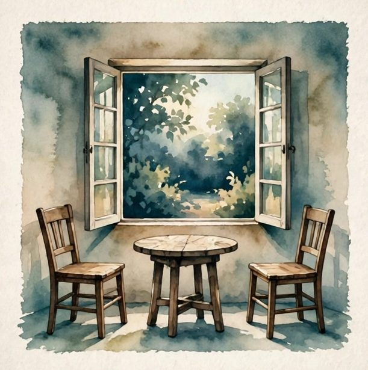
Two chairs on opposite sides of a table, a window open between them.
Anger arrives in this house like any other weather, and it is not turned away at the door. It is hot, it is loud inside the chest, and it often carries true information about a boundary crossed or a need ignored. The house does not ask anger to smile. It asks only that anger be carried in a sound vessel, so that its heat is felt honestly without being poured over the nearest person. There is a wide difference between feeling anger fully and handing it to someone else as an injury. The first is strength. The second is weather weaponised, and the house keeps no room for it. It is greeted, named, and given a chair like any other strong weather, neither flattered nor treated as a disgrace.
The Keeper, when angry, opens windows before opening arguments. The pause matters. Air moves through the room, and the first fierce sentence, the one written entirely by heat, is allowed to cool on the sill unspoken. What remains is usually smaller and far more accurate. I am angry because this mattered to me. I am angry because I felt unseen. Such sentences name the fire without setting anything alight. They can be heard. They can even be answered. Anger spoken this way does not pretend to be calm, and it does not demand that anyone else pay for its temperature. What remains can be carried across the table without burning the hands of the person who finally receives it there.
None of this makes anger pleasant company. It rattles the glass and shortens the breath, and the honest person admits that too. But anger that is named, paced, and aimed at the true subject tends to pass like other weather. Anger that is suppressed does not pass. It goes into storage, and storage charges rent, collecting its payment later in sharper words, colder silences, and storms that seem to arrive from nowhere. The open window is cheaper. A person who can be angry without doing harm has not weakened the feeling. They have simply refused to let it rule the whole house. The window costs very little to open, and the house has never once regretted the small draught it lets in.
65Grief in Company
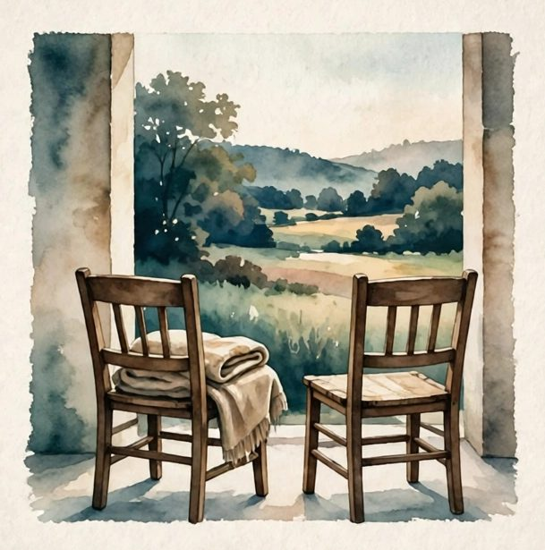
Two chairs side by side facing the same view, a folded blanket on one.
Grief prefers side by side to face to face. That is why the chairs in this room are not turned toward each other but toward the same window, the same garden, the same slow rain. A person in grief does not always want to be looked at. They want not to be alone inside the looking. Company, here, is a quiet form of strength. Someone sits down nearby and stays, and their staying says what sentences keep failing to say, that this weather is bearable to witness, that the grieving person does not have to apologise for the climate of their own heart. The view gives both people somewhere to rest their eyes while the heart does its slow and necessary work.
The Keeper does not offer explanations in this room. Grief is not a puzzle and company is not a solution. The tea is made, the blanket is folded within reach, and the hours are allowed to be as heavy as they are. Suppression, faced with grief, reaches quickly for the latch. It says be strong, meaning be silent, and the sorrow goes down into the sealed jar where it keeps its weight for years. The house takes the opposite view. Sorrow shared is not sorrow solved, but it is sorrow carried by more than one pair of hands, and that has always been enough reason to open the door. The hours pass, and passing together is itself a kind of answer.
There will be days when the company can do almost nothing, and the house is honest about that too. The rain does not stop because two people watch it together. But something in the grieving changes, slowly, when their weather is neither feared nor fixed by the person beside them. They learn that their sadness does not empty a room. They learn that they can speak the name of what was lost, out loud, in ordinary air, and the walls do not fall. Grief in company is not grief removed. It is grief given a chair, a window, and time. Company does not shorten the season, but it changes the quality of the hours spent waiting inside it together.
66Being Believed Is a Kind of Shelter
To be believed is to be given shelter while the weather is still falling. The person who says I believe you is not claiming to have seen the storm from inside. They are simply refusing to make the speaker stand outside in it, arguing for the existence of their own rain. That refusal matters more than it may appear. A feeling that must first prove itself spends all its strength on the proving. A feeling that is believed can begin, at last, to be carried, examined, and eventually set down. Shelter is not agreement about every detail. It is the decision to trust that the weather reported is the weather felt.
The Keeper keeps this shelter in good repair, because the house knows what disbelief does to a room. A person whose sadness is doubted learns to doubt it themselves, and soon they are storing it instead, in the latched room, at the usual rent. A person whose anger is always explained away learns to swallow it, and the swallowing becomes a habit of the whole house. Being believed interrupts that teaching. It says, in plain terms, your inner weather counts as real here. From that one sentence, honest speech becomes possible, because no one speaks honestly for long in a house where honesty is cross examined at the door. Once believed in that simple way, a person stops spending their evenings rehearsing evidence for feelings they already know are real.
Shelter, like listening, is not without its edges. To believe someone is not to surrender all judgement or to carry their weather as your own. The roof shelters the bench, but the bench stays in the garden, under the sky. The Keeper believes and still asks questions, kindly, when questions are needed. Believes, and still rests when the listening is done. What is offered is not limitless room but real room, dry and unhurried, for as long as it is offered. Few gifts in a house are simpler. Fewer still are remembered as long by the person who once stood in the rain outside it. The Keeper has seen whole winters change because one person, at the right moment, simply said that they believed another.
67The Apology That Opens a Window
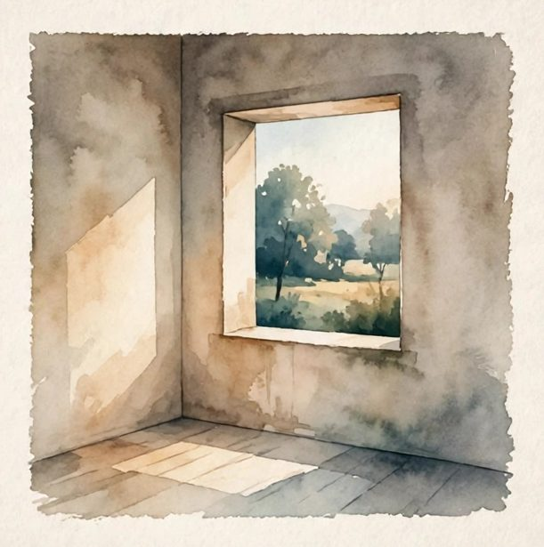
A window opened in a wall between two rooms, light passing both ways.
An apology, done honestly, is a window cut into a wall that both people had begun to mistake for permanent. Before it, two rooms stand side by side in a stiff quiet, each person listening through the wall and hearing only their own version of events. The apology does not demolish the wall. It opens a casement in it. Air moves again. Light passes both ways, which is the detail that matters, because a true apology is never a performance staged from one side. It admits weather into the speaker's room too, the discomfort, the regret, the wish to have acted otherwise, all let in rather than latched out. The first draught through that opening often feels cold to both sides, but cold air is still better than stale air.
The Keeper apologises plainly and without decoration. I was wrong in this. I am sorry for the harm of it. No long weather report about intentions, no request that the injured person hurry to make the speaker comfortable again. An apology that demands quick forgiveness is a sealed jar with a polite label. An apology that simply opens the window leaves the other person free, free to take time, free to answer honestly, free even to keep their side of the casement closed for a while. That freedom is part of the repair. What was harmed was, among other things, the other person's freedom to feel safe in the room.
Not every apology restores what stood before, and the house promises nothing on that score. Some windows open onto a changed garden. But even then, the opening is worth making, because the alternative is storage. Unspoken regret is among the heaviest things a person can keep in a locked room, and it charges its rent in stiffness, distance, and conversations that circle the same wall for years. To apologise is to choose air over storage. It is strength in its least dramatic form, a hand on a latch, a window pushed open, and the willingness to stand in the draught of what one has done. Afterwards the wall remains, as walls must, but it is a wall with a window in it, and that changes everything.
68Do Not Perform Calm for Guests
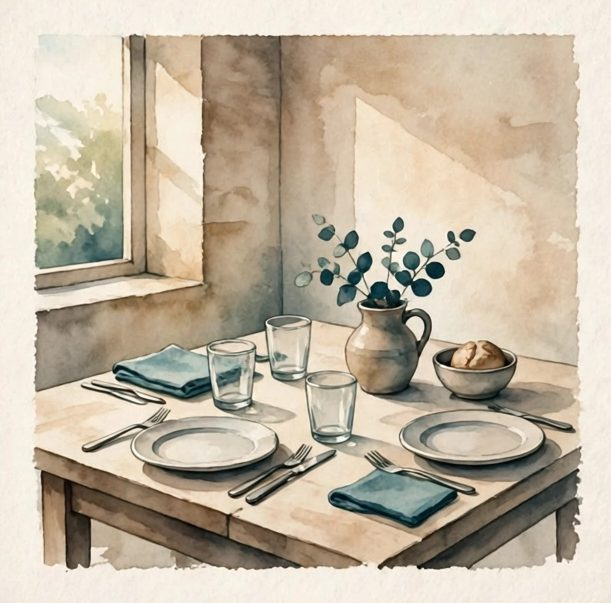
A table set plainly for guests, nothing arranged for show.
There is a kind of calm that is only a table setting. Everything arranged for show, the best cloth out, the voice level, the smile fixed at the correct angle, while behind the kitchen door the pots are boiling over and no one is allowed to see. The house knows this calm well and does not trust it. Performed calm is suppression wearing its good clothes. It costs the performer a full day's strength to maintain, and it gives the guests a false room to sit in, pretty, airless, and quietly exhausting for everyone at the table, including those who cannot name why. By evening the performer is exhausted by a calm nobody requested, guarding a room nobody was actually sitting in.
The Keeper sets the table plainly instead. If the day has been sorrowful, the sorrow is not hidden in the scullery before the guests arrive. It may sit quietly at the edge of the room like weather beyond a window, acknowledged, unhidden, and not required to entertain anyone. This is not an invitation to pour every feeling over the visitors. A sound vessel carries water without spilling it on the company. It is simply the refusal to lie about the climate. I am low today, said once, plainly, frees the whole evening from the strain of pretending otherwise. The guests are trusted with the true temperature of the house, and most rise to that trust with surprising gentleness.
Guests, it turns out, relax in a house that is not performing. They lower their own voices less carefully. They admit their own weather in small honest sentences, and the evening becomes company instead of theatre. The house has noticed this many times. Suppression is contagious in a drawing room, one person's latched door teaching every other door to latch, until a table full of people sits together in separate locked rooms. Honesty is contagious in the same quiet way. One open window gives the whole house permission to breathe, and breathing, shared, is most of what good company ever was. The table is cleared at last without anyone having to remember which version of the day they were supposed to present.
69Letting Others See the Weather
To let others see your weather is a plainer and braver thing than it sounds. It means drawing the curtain back while the rain is still on the glass, not after the sky has cleared and the story can be told safely in past tense. Most people will show you their sunshine, because sunshine asks nothing of a witness. The storm, the fog, the flat grey morning of the heart, these are kept behind the curtain, where they gather weight. The house argues, gently and often, that a feeling seen by one other honest person loses its power to rule from hiding. The curtain is not torn down in some grand gesture. It is drawn back an inch, then a hand's width, then fully.
The Keeper draws curtains from habit, early in the day, before knowing whether the weather will improve. This is not display. Nothing in the house is arranged to make the weather look grander or more pitiable than it is. It is simply visibility, the same courtesy a window offers a garden. What can be seen can be responded to. Friends cannot bring a blanket to a person whose cold is hidden from them. Help cannot find a door that has been painted to look like a wall. Letting the weather be seen is how the house's help, when it comes, arrives at the right room. Seen weather can be planned around, dressed for, and waited out together, which hidden weather never allows anyone to do.
There is discernment in this, and the house keeps it. Not every passerby is owed a view of every room. Curtains are drawn back for those who have shown they can witness weather without mocking it, fixing it, or carrying it away as gossip. Strength is not the absence of curtains. It is knowing which windows to open, and to whom, and then actually opening them rather than praising openness from behind the glass. A person who lets their true weather be seen by even one other person lives in a house with air in it. That air, over years, is the difference between carrying and being buried. One honest witness is enough to change the air of a whole house, sometimes for years afterwards, quietly and completely.
70Quarrels That End Before Midnight
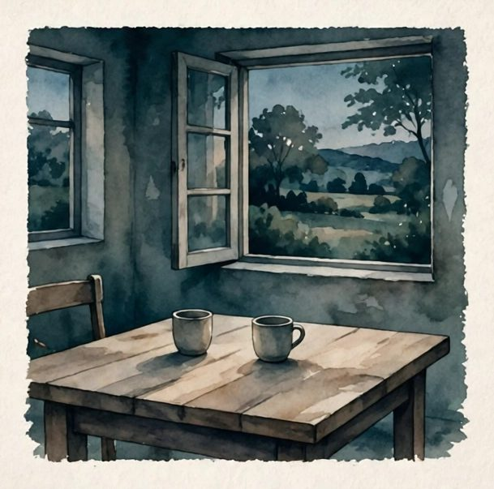
A supper table cleared for the night, two cups left, evening settling.
Every house with open windows will have quarrels, because honest people feeling real weather cannot agree about everything, and pretending otherwise is only suppression with better manners. The question this room asks is not how to avoid the quarrel but how to keep it from moving in permanently. The Keeper's rule is old and plain. Let the quarrel be finished before the day is. Not every difference resolved, that is too much to ask of an evening, but the quarrel itself, the heat of it, named, heard, and set down before midnight, so that sleep is not asked to share a bed with stored anger. Midnight here is not a deadline for agreement but a reminder that the day deserves to close with its doors unlatched.
A quarrel carried overnight changes its nature in the dark. By morning it is no longer about the words that were said. It has fed on silence and grown grievances of its own, and both people wake to find the small room between them crowded with things neither of them chose. This is the rent that storage charges, collected nightly. Ending before midnight is the house's way of refusing the loan. The words may be clumsy at that late hour. The voices may still shake a little. But a feeling spoken before sleep stays a feeling, while a feeling stored becomes a climate, and climates are far harder to change than weather.
Ending a quarrel does not always mean agreeing, and the house is careful with the distinction. Sometimes the honest ending is a sentence like this. We see this differently, and I will not store anger about it overnight. The window is opened, the disagreement remains visible on the sill between the two cups, and both people rest. Rest, here, is part of the strength, because only rested people can return to a hard subject with sound vessels in the morning. A quarrel that ends before midnight has not been won by anyone. It has been carried, together, to the door of the day, and left outside it. Tomorrow may reopen the subject, but it will reopen it between people who slept, rather than between people who stored.
71Strength That Makes Room
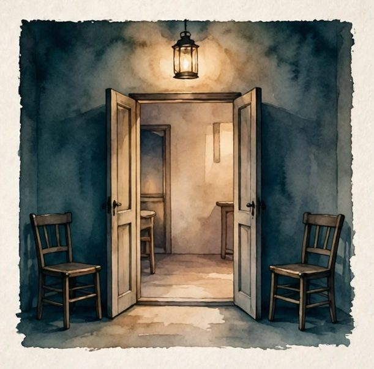
A doorway widened by lamplight, chairs moved back to make room.
The strongest person in a room is not always the one carrying the most. Sometimes strength shows itself in the opposite motion, in chairs pushed back, a doorway widened, space made for weather that is not your own. The house watches for this kind of strength because it is easy to miss. It makes no noise. A person practises it when they let another's sadness take up an evening without competing with it, when they let another's joy be large without shrinking it, when they hear anger that is not aimed at them and do not immediately bar the door against it. Room, given freely, is a form of carrying too.
Suppression, by contrast, keeps every doorway narrow. In a suppressing house there is space for exactly one person's feelings, usually unspoken, and everyone else must fold theirs small to pass through. Children in such houses learn to walk softly around weather. Guests learn to leave early. The Keeper learned the other arrangement slowly, by watching what happened when room was made on purpose. People did not take advantage of the space, as fear had predicted. They filled it briefly, gratefully, and then the room was a room again, larger in everyone's memory for having been shared. The room learned, slowly, that space shared is not space lost, any more than light shared by two lamps is halved.
Making room is not the same as disappearing from your own house. The Keeper also sits in the widened doorway, also brings weather to the table, also rests when the carrying is done. Strength that makes room includes the self among those it makes room for, or it curdles into another performance, the calm of the person who is never allowed any weather at all. The true version is mutual and unhurried. Chairs moved back on both sides. A lamp lit in the passage. Two people's feelings in one room, neither ruling, both carried, and the house somehow bigger on the inside than its walls suggest. The house measures such evenings among its best, though nothing remarkable was said and nothing at all was solved.
72Company, Kept Plainly
At the end of this part of the hall, the house sets out its simplest room. No ceremony, no performance, only company kept plainly, the way bread and water are plain, and as necessary. The chairs do not match. The cups are ordinary. What makes the room strong is not its furnishing but its customs. Feelings may be named here without being dramatised. Silence is allowed without being punished. A person may arrive with weather and be neither interrogated about it nor required to leave it at the door like a wet coat. Plain company, kept over years, does more quiet work than any grand gesture the house knows. Nothing here is arranged to impress, and that is precisely its welcome.
The Keeper keeps company the way the windows are kept, by regular small attention rather than rare effort. A message sent. A chair offered. An hour given without a phone glowing between the two people like a third, uninvited guest. Suppression isolates, that is its deepest habit, persuading each person that their weather is too much, too dull, or too late to bring to anyone. Plain company is the standing answer to that persuasion. It proves, evening after ordinary evening, that ordinary feelings are welcome in ordinary rooms, and that no one in this house has to earn their seat by being untroubled. It is kept in small coins of attention, spent regularly, and it never requires a special occasion to be opened.
Nothing is promised here, and the house sells nothing across this table. Company kept plainly will still know quarrels, griefs, and long grey seasons, because weather does not retire from a house just because its windows work. But there is a steadiness to a life where feelings are shared as they come, in rooms prepared for them, among people practised at listening. The load is divided before it becomes storage. The joy, when it comes, is divided too, and somehow grows in the dividing. The Keeper locks nothing at nightfall in this room. The chairs stay out, ready, and the lamp is left burning a while. When the evening ends, people leave carrying their own weather again, but lighter for having set it down a while.
73The Work of Feeling
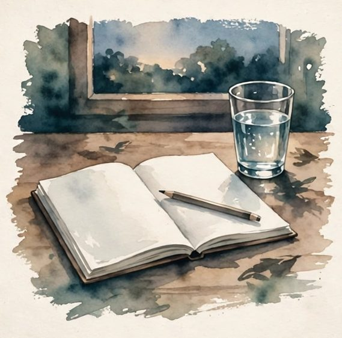
A desk at evening with a notebook open, a pencil, and a glass of water.
This part of the hall is quieter, and its rooms are smaller, because the work of feeling is mostly done alone, at a desk, in the pause between one hour and the next. The house calls it work without apology. Feeling fully is not a passive event, like rain striking a roof whether the roof wills it or not. It takes attention to let a feeling arrive, honesty to name it, and patience to carry it without either obeying it or locking it away. None of that happens by accident for long. Like windows, the capacity stiffens when it is never used, and moves freely when it is exercised a little every day.
The Keeper treats the work as a craft rather than a test. There is no grade given at the Weather Desk, no standard of serenity to reach by spring. There is only the daily practice, done well or badly and done again tomorrow. Some days the work is a single honest sentence. Some days it is an hour of sitting with grief that refuses every sentence offered to it. Both days count. Suppression promises to spare a person this labour, and the promise is the trap, because the labour is not avoided, only deferred, and deferred feeling collects its rent in the currency of sleep, temper, and room. The desk, the notebook, and the glass of water wait without impatience, ready for whoever sits down to begin again.
You may think of the work the way the house thinks of its vessels. A vessel kept clean and used daily stays sound without anyone admiring it. A vessel sealed and stored with its contents inside becomes a problem that someone, eventually, must deal with at far greater cost. The work of feeling is the daily alternative, unglamorous, repeatable, and mercifully small when it is done on time. The blocks that follow walk through its stations one by one, the pause, the sentence, the page, the evening round, the tears, the laughter, and at last the chair by the window, where the work rests. Small work, done daily, rarely looks like strength from outside. Inside the house, it is recognised as the real thing.
74The Pause Before the Answer
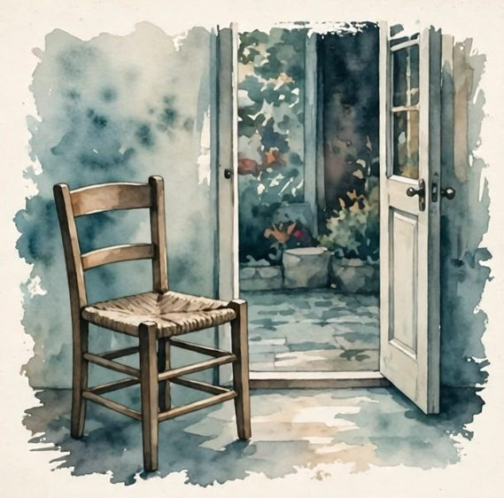
A chair left empty before an open door, a pause made visible.
Between a feeling and an answer there is a small room, and the whole of this block is about learning to enter it. Something is said, and weather rises, fast and hot or cold and heavy, and the mouth is ready with a sentence built entirely by the weather. The pause is the moment the house teaches you to take before that sentence leaves. It is not suppression. Nothing is being denied or stored. The feeling is fully present, fully felt, standing in the room in plain sight. The pause simply asks who will do the answering, the person, or the storm that happens to be passing through them. That small room has saved more conversations in this house than any clever argument ever devised here.
The Keeper practises the pause the way stairs are practised, one step at a time, until the feet know it. Breath in. Feet on the floor. The chair by the door, left empty on purpose, as a reminder that a space can be held open without being filled immediately. In that space, remarkable things happen to a sentence. It loses its sharpest edges. It finds its true subject. Sometimes it dissolves altogether, revealed as something the feeling wanted said that the person, on reflection, does not believe at all. What survives the pause is usually worth saying, and it arrives in a voice the listener can actually hear. The waiting is brief, but the whole shape of the reply changes inside it, quietly and completely.
A pause is not a wall, and the house distinguishes them carefully. A wall ends the conversation and stores everything behind it. A pause continues the conversation at walking pace. I need a moment, said honestly, is itself an answer, and a strong one. It tells the other person that their words were heard and weighed rather than swatted by reflex. Over years, people come to trust a person who pauses, the way they trust a house whose windows open smoothly. They know the answer, when it comes, will be the person's own, and not merely the weather's, wearing the person's voice. The pause costs only seconds, but it repays them for years, in answers that did not have to be apologised for later.
75Name It in One True Sentence
Of all the tools at the Weather Desk, the humblest is the single true sentence. Not a paragraph of explanation, not a history of the feeling reaching back to childhood, only one sentence that names the weather as it is, as exactly as the tongue can manage. I am grieving. I am angrier than I wanted to be. I am frightened of the letter that has not come. The sentence does not fix anything, and the house does not pretend otherwise. What it does is move the feeling from the locked room into the open air of language, where it can be seen, carried, and shared at its real size.
Unnamed feelings rule. That is the plain doctrine of this desk, written on no wall and practised every day. A sorrow without a name becomes a climate, colouring every room, blamed for everything and addressed as nothing. Named in one true sentence, the same sorrow becomes weather. It has edges. It has a season. It can be spoken of in the past tense someday. The Keeper is strict about the word true in this exercise. Almost true sentences are a refined kind of suppression, the feeling dressed in the costume of a neighbouring feeling that is easier to admit, anger wearing sadness, fear wearing irritation. The neighbouring feeling may be tidier, but tidiness bought with untruth charges the same rent as any other locked door.
The sentence need not be spoken aloud to count, though speaking it to another person doubles its air. Written on a card and weighted with a stone, it has already done its work, because the person who wrote it now knows what they are carrying. Practice makes the sentences come faster and truer. The first attempts are clumsy, too long, full of qualifications that hide the weather in fog. The house is patient with clumsiness. Fog, honestly examined, is also a report. What matters is the daily return to the desk, the pencil taken up again, and the one true sentence set down before the day stores its feelings away unexamined.
The Weather Desk
One desk receives all correspondence for this house — questions, corrections, and word of any weather a visitor has been carrying shut for a long while: the feeling never named, the calm performed once too often, the door they are thinking of opening. It is read in the order it arrives, and entered in the register of weather.
76Writing It Down at the Desk
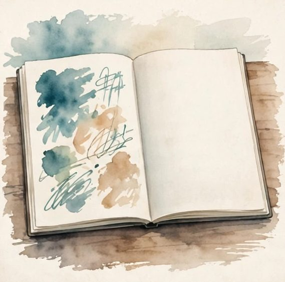
An open notebook on a desk, one page of abstract marks, the rest blank.
The Weather Desk exists because some feelings will not be spoken until they have first been written. The page asks nothing of the writer. It does not flinch, interrupt, or require the feeling to be reasonable before it is recorded. So the Keeper writes, in the plainest words available, what the day actually brought. The notebook is not literature and no one is asked to admire it. It is a vessel, a clay one, filled each evening and emptied by the filling, because a feeling set down in words is a feeling moved from the sealed jar of the chest into a container with an open top. The words do not need to be beautiful. They need only to be honest enough that tomorrow's reader recognises the weather.
Writing slows the weather to the speed of the hand, and that slowness is the whole method, if the house may use so plain a word for so simple a thing. A storm that takes an hour to pass through the mind takes ten minutes to cross a page, and in those ten minutes it must arrange itself into sentences. Some of it cannot. It stays as marks, fragments, a line abandoned halfway, and the page accepts those too. Not everything felt can be said, even to paper. But everything written is stored outside the body, in a place that charges no rent, under a ribbon, on a shelf, in the quiet custody of the desk.
The Keeper does not reread old pages for judgement. They are weather records, not verdicts, useful the way last winter's rainfall is useful, as evidence that seasons turn. On a hard day it steadies the hand to know that other hard days were written down and then, in their time, finished. The notebook closes. The glass of water stands empty beside it. The room is exactly as it was, and yet the person who rises from the desk is carrying less than the person who sat down, not because anything was solved, but because some of the load now rests, honestly, on the page. The desk keeps what the heart was carrying, faithfully and without comment, until the season for carrying it has passed.
77The Evening Round
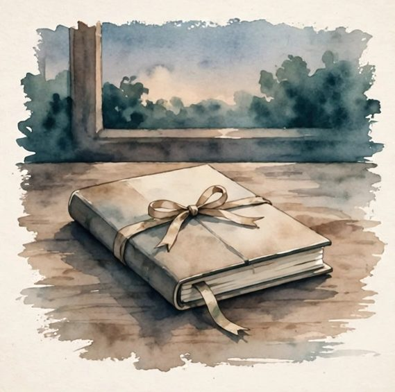
The same desk at dusk, the notebook closed, a ribbon marking the page.
Every evening the Keeper makes a round of the house, and it is the round, more than any single act, that keeps the windows working. Room by room, the day's weather is checked. Where was the door latched in a hurry this morning. Which feeling was carried well, and which was stored, again, in the small room behind the stairs. The round is not an inspection and no one is scolded at the end of it. It is closer to a keeper walking a garden at dusk, noting what the weather did, closing what needs closing, and leaving open, deliberately, what the night air should reach. Even the curtains are noticed, drawn or undrawn, because small arrangements tell the truth about how the day was met.
Feelings unvisited in the evening tend to keep the house awake. They knock in the small hours, dressed as worries about tomorrow, and it takes a while to recognise them as yesterday's weather, unacknowledged and therefore unfiled. The round prevents much of that knocking. A feeling that has been visited, named, written, and given its chair for the day usually rests when the person rests. It has been attended to. It is not clamouring for basic recognition. This is one of the quiet mechanisms by which rest becomes part of strength. The house sleeps in the order the round creates, and it is an order made of attention, not control.
The round also has its mercy. Some evenings the Keeper is too tired for more than one room, and the house accepts a short round the way it accepts a short sentence. The intention is the practice, not the completeness. Over months and years, the rounds accumulate into knowledge that no single evening could provide, a knowledge of one's own climates and seasons, which doors stick, which weather returns each autumn, which room fills first when life grows heavy. A person who knows their house this well is rarely ambushed by it. The storms still come. They simply find the windows in working order, and someone awake who knows their names.
78Crying Without Apology
Tears, in this house, are a working part, like rain in a garden's accounts, and no one apologises for them at the table. The apology that so often follows crying, the quick sorry, the laugh used as a mop, is suppression arriving late to tidy up weather that has already, healthily, fallen. The Keeper lets tears finish. A person crying is a person whose vessel is doing exactly what vessels do under real weight, releasing what cannot be carried all at once, in the oldest way the body knows. To interrupt that with shame is to put a lid on a boiling pot and call the lid strength. The sorry that follows tears is almost always for the witnesses, not the feeling, and the house gently declines to require it.
Crying without apology does not mean crying without end, or making a roomful of people responsible for the rain. It means the tears are not treated as a failure of character or a leak to be hidden. They fall, they are witnessed or private as the moment allows, and they stop in their own time, as weather does. People who permit themselves tears tend to find them shorter, oddly, than people who fight them for hours with a set jaw. What is allowed passes. What is forbidden gathers pressure, and pressure, in this house's long experience, always finds a more expensive door to leave by. The cloth on the stool is there for this, used without ceremony and washed without anyone remarking on the stains.
There is a plain dignity in the washed face and the unhidden eyes, and the house keeps a basin, a cloth, and a window near the chair for exactly this reason. Afterwards there is usually quiet, and sometimes a surprising lightness, the way air lightens after rain has done its work. Nothing has been solved. The loss is still lost, the sorrow still true. But it has been felt at full strength rather than stored at full price, and the person who cried stands up carrying the feeling instead of being carried by it. That, the Keeper insists, is not weakness leaving the body. It is strength, doing its oldest work.
79Laughing Without Permission
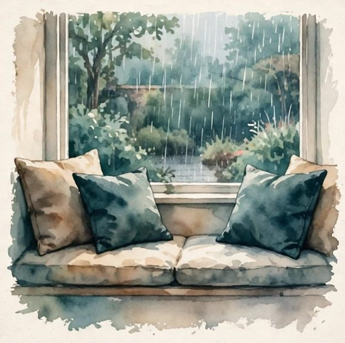
A window seat with cushions, looking out on rain in a garden.
Joy is weather too, and suppression is as ready to latch its door as any other. The laugh suppressed at the table, the delight folded away because the day is supposed to be serious, the good news carried quietly so as not to tempt the sky, these are small locked rooms, and the house counts their cost honestly. A feeling stored is a feeling stored, whatever its colour. Joy kept in a sealed jar does not stay fresh out of kindness. It fades in the dark like everything else unexercised, and a person who has practised hiding happiness finds, one grey year, that happiness has learned the hiding too well.
The Keeper laughs without permission, and the sound is one of the house's healthiest signs, like the sound of windows opening in spring. It is not the loud laugh that performs, nor the sharp one that wounds under cover of humour. It is the plain, surprised, unguarded laugh that arrives when something is genuinely funny or glad, and is allowed out before the inner keeper of appearances can be consulted. Such laughter tells everyone in the room, including the laugher, that the house is safe enough for weather of every kind. Sadness had its chair here this morning. Joy is not required to knock more softly in the afternoon. The sound belongs in the house as much as any other honest weather that passes through its rooms.
People recovering from long seasons of suppression often notice laughter returning before almost anything else, small and startling, like the first bird after rain. The house receives it as a serious sign, worth more than declarations of improvement. It means the windows are working in both directions. Air goes out as freely as it comes in. A person who can laugh without permission can usually, in time, grieve without apology and anger without harm, because the same latch guards all those doors, and once it is oiled, every room benefits. The window seat is kept cushioned for this reason. Some of the house's best weather is watched from it, laughing, while the rain finishes in the garden.
80The Chair by the Window
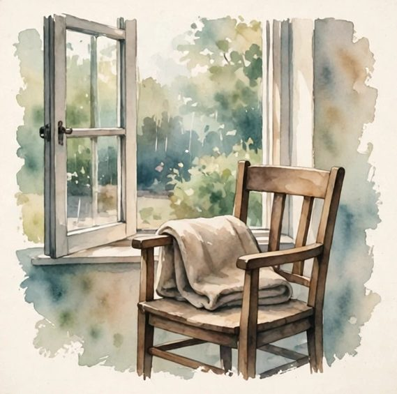
A chair by an open window with a folded blanket resting on its arm.
The hall ends, as its work properly ends, at a chair by an open window. The chair is nothing special to look at. Its blanket is folded, its view is an ordinary garden, and it keeps no records and asks no questions. It is the house's place for sitting with a feeling, which is the final skill all the other rooms were practising. Not solving the feeling. Not naming it, for once, or writing it, or carrying it anywhere. Sitting with it, the way you would sit with an old friend who has no news, only weather, and letting the hour pass in its company without needing the hour to be other than it is.
The Keeper sits here at the close of most days, and the sitting is the opposite of the locked room in every particular. The locked room hides from the feeling. The chair faces it, window open, air moving. The sealed jar stores the feeling at rent. The chair lets it stay free of charge, for exactly as long as it stays, and no longer. Many feelings, given a chair and an open window, discover they were never asking for much. A little time. A little air. To be felt at their real size and then to be allowed, without ceremony, to go. The chair empties itself, most evenings, by simple hospitality.
If you take one room of this hall with you, the house suggests this one, because it can be built anywhere. A chair, a window that opens, a blanket folded on the arm, and the decision, renewed daily, to sit down with your own weather rather than store it. Strength, seen from this chair, is not a grand condition. It is a small, repeated, unglamorous posture toward the sky inside you. Feel it honestly. Hold it steadily. Let it pass through the open window in its season. The Keeper rises, folds nothing away, latches nothing, and leaves the chair ready for tomorrow's weather, whatever it brings. Outside, the garden darkens at its usual pace. Inside, nothing is stored, and the house is ready to rest.
81Feel It, Then Decide
There is an order to things in this house, and it is a quiet one. The feeling comes first, as weather comes first, before anyone decides what the day will ask. You do not choose the rain by looking at it, and you do not make it smaller by calling it fine. The Keeper of the Open Windows stands a while at the glass and lets the weather be what it is. Only after that does she turn toward the room and consider what to do. The pause is not delay for its own sake. It is the honest interval between arrival and answer, and much steadiness lives there. The house asks for nothing more than this kind of attention, paid honestly and without hurry.
Suppression reverses the order, or tries to skip it altogether. The decision is made before the feeling is allowed in, usually the same decision every time, to carry on as if nothing had come. The door stays latched and the room keeps its arranged calm, but the weather has not gone anywhere. It waits in the walls and in the sealed jar on the shelf. What is decided without feeling tends to be decided again later, at a worse hour and at a higher price. The house keeps accounts even when the keeper will not. Strength prefers the slower, truer sequence. It is a small practice, and like most small practices it changes more than it announces.
To feel first is not to obey first, and the house is careful with that difference. A feeling may be allowed its full weather and still not be given the keys to the whole day. Anger may move through the room like wind through a corridor, noticed and named, without a single chair being overturned. Grief may sit at the table for an evening without being asked to plan the week. Feeling is the visit. Deciding is what happens after the visit has been received honestly, with the windows open and the air changed. The order protects both the feeling and the life around it. Nothing here is rushed, because weather and honesty both keep their own unhurried pace in this house.
82What Rest Repairs
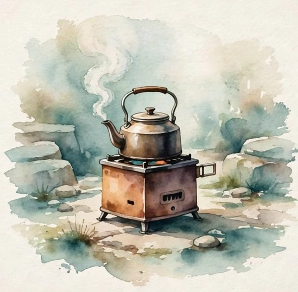
A small stove with a kettle resting on it, steam rising gently.
Rest is not the reward at the end of strength in this house. It is one of the materials strength is made from, like sound timber or a vessel without a crack. The Keeper of the Open Windows rests before the room demands it, the way a stream is left alone so its banks can settle. What rest repairs is often invisible while the damage is being done. Attention frays first, then patience, then the ability to hear a feeling clearly enough to name it. A tired keeper calls every weather a storm. A rested one can tell rain from hail. The Keeper notes it, leaves the window as it is, and lets the day continue.
There is a kind of holding in that calls itself endurance and refuses all pause. The jaw stays set, the shoulders stay lifted, the jar stays sealed, and the person inside the performance grows thinner by the day. Suppression is expensive work, though it looks like stillness from outside. It spends the strength it pretends to save. In the latched room nothing is mended, because mending needs an unguarded hour. Rest is that hour, offered deliberately. The kettle is set down, the hands are emptied, and the body is allowed to finish the feelings the mind kept postponing through the busy afternoon. That is enough for one room, one hour, and one honestly carried feeling at a time.
What returns after true rest is not cheerfulness, necessarily, and the house promises nothing so neat. What returns is room. A feeling that filled the whole vessel yesterday can be carried in one hand today, because the carrier is no longer worn through. Decisions slow down and improve. Words come out closer to what was meant. Even grief, which rest does not cure, becomes more bearable to sit beside when the one grieving has slept. The Keeper treats rest as part of the work of feeling, not as an escape from it. The windows stay open, and the house breathes at an easier pace. The lesson, if there is one, is simply to keep the passage between feeling and living clear.
83Feelings Are Not Orders
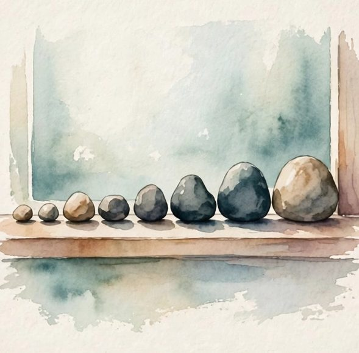
A row of small stones sorted by size along a windowsill.
A feeling arrives with force, and force can sound like instruction. Anger arrives loud and seems to say that something must be answered at once, in kind, at full volume. Fear arrives urgent and seems to say that the door must be bolted and the day cancelled. The house has learned to hear these arrivals differently. A feeling is news about the weather inside, not an order about what must happen outside. The Keeper of the Open Windows listens to the news with respect, writes it down at the Weather Desk, and then decides as a keeper decides, slowly and with the whole house in view. In this house, such quiet repetitions are how a whole climate is slowly and surely made.
This distinction is where carrying differs most clearly from being ruled. To be ruled is to hand the feeling the pen and let it write the reply, the refusal, the goodbye. To carry is to hold the feeling steadily while the hands remain your own. The vessel matters here. A sound vessel can hold hot water without becoming the water, and a person can hold hot anger without becoming cruel. Suppression fails at the same task from the other side, denying the water is hot at all. Strength simply notes the heat, sets the vessel down safely, and waits for a wiser hour. And when evening comes, the room is still usable, the air still honest, and the vessel still sound.
None of this makes feelings smaller or less worthy of attention. A stone on the sill is small, but it is real, and the Keeper sorts each one rather than sweeping them away. Sadness may be telling the truth about a loss. Worry may be pointing, clumsily, at something that genuinely needs care. The news can be honest while the implied order is still unwise. So the house practices a double courtesy, listening fully and obeying selectively. Feel first, name plainly, and let the decision belong to the part of you that can see the whole room, not only the weather at the window. The house asks for nothing more than this kind of attention, paid honestly and without hurry.
84The Day's Weather, Entered
At the end of the day the Keeper of the Open Windows sits at the Weather Desk and enters the day honestly. Not the day as it was performed for others, and not the day as it should have been, but the weather as it actually moved through the house. Rain in the morning over breakfast. A long grey stretch during the work hours. Anger, brief and hot, near the door in the evening. Joy, unexpected, while the light was changing. The entry is plain and short. Its power is not in fine writing. Its power is that nothing is left to be carried unnamed into the night. It is a small practice, and like most small practices it changes more than it announces.
Suppression keeps no register, or keeps a false one. The performed day is recorded, all calm surfaces and nothing underneath, and the real weather is stored elsewhere, in the body, in the sealed jar, in the room no one opens. Storage charges rent, and the rent comes due in strange currencies, in sudden tears at a small kindness, in a sharp word that belongs to an older storm. The register at the desk is the house refusing that arrangement. What is entered can be closed for the night. What is denied stays open somewhere, knocking softly at the walls after the lamps are out. Nothing here is rushed, because weather and honesty both keep their own unhurried pace in this house.
The practice also teaches proportion, which memory alone rarely does. Looking back over a week of entries, the Keeper can see that the hard weather passed, most of it within a day, and that no single storm was the whole climate. A feeling that seemed permanent on Tuesday reads as one line on Friday. This is the doctrine of the house made visible in ink and paper. Feelings are weather, and weather moves. The register does not argue with any storm while it is raining. It simply keeps the record, so that later, in calmer air, the truth of the passing can be seen. The Keeper notes it, leaves the window as it is, and lets the day continue.
85A Life at Room Temperature
A house with every window open, seen from the garden at midday.
The second part of the hall opens onto a longer view, not a single day of weather but a whole life lived with it. Room temperature, in the language of this house, does not mean cold, and it does not mean numb. It means the ordinary warmth at which a life can be lived without flinching, where feelings come and go through open windows and no room has to be heated to fever or chilled to silence. The Keeper of the Open Windows has kept the house this way for years. Visitors notice nothing dramatic. That is rather the point. Steadiness rarely announces itself. That is enough for one room, one hour, and one honestly carried feeling at a time.
A life at room temperature is built from unremarkable repetitions. Feelings are named at the table rather than stored in the walls. Anger is spoken while it is still small enough to hold in one sentence. Joy is allowed its full afternoon without apology or embarrassment. Rest is taken before emptiness, not after collapse. None of these habits looks like strength from a distance. Up close they are the whole structure. The dammed stream looks stronger than the flowing one, until the season turns and the pressure finds the crack that quiet water never needed to make. The lesson, if there is one, is simply to keep the passage between feeling and living clear.
There will still be storms, and the house has never pretended otherwise. Grief will take a room for a season. Fear will rattle the shutters some nights. Room temperature is not the absence of weather but the refusal to live braced against it. The latched house spends its strength on the latch. The open house spends its strength on living, on work and meals and people, with the weather admitted as one part of the day among others. Over years, that difference compounds quietly. It becomes the temperature of a life, felt by everyone who crosses the threshold, including the one who lives there. In this house, such quiet repetitions are how a whole climate is slowly and surely made.
86A House With the Windows Open
A room arranged for one whole day, breakfast things at one window, a reading chair at the other.
To live in a house with the windows open is to accept a certain amount of weather indoors. Dust comes in, and rain sometimes reaches the sill, and the curtain moves when you would prefer it still. The Keeper of the Open Windows accepts these small costs without argument, because she knows the price of the alternative. A sealed house keeps everything out and everything in. Old air circulates. Feelings from last winter are still in the corners by spring. What was held in for the sake of calm becomes the climate itself, stale and close, until nobody remembers the rooms were ever fresh. And when evening comes, the room is still usable, the air still honest, and the vessel still sound.
Open windows change the way a day is arranged. The morning feeling is met in the morning, while it is still the size of weather and not yet the size of fate. A worry aired early often shrinks to its true dimensions by noon, the way a shadow shortens. Sadness let in at breakfast does not have to wait, growing heavier, for a midnight hearing. The house is not more emotional for being open. It is less haunted. Feelings pass through on schedule because they are given a door and a window, a way in and a way out, and passage is what weather naturally wants. The house asks for nothing more than this kind of attention, paid honestly and without hurry.
There is also a plain kindness in an open house, felt by anyone who visits. No one has to guess which rooms are forbidden. No one steps carefully around a latched door, wondering what is stored behind it. The Keeper does not perform serenity, and so nobody else has to perform it either. Feelings can be mentioned here the way rain is mentioned, as fact, without drama and without shame. Over time the open windows stop being a practice and become simply how the house is. The air stays honest. The rooms stay usable. And the life inside stays at a temperature where a person can rest. It is a small practice, and like most small practices it changes more than it announces.
87Work, With Feelings Admitted
Work does not stop at the door of this house, and neither do feelings, and the Keeper of the Open Windows has never tried to make either one pretend otherwise. The old arrangement asked for a worker with the weather left outside, calm on the surface whatever the storm within. It produced a particular kind of tiredness, the tiredness of holding a door shut with one hand while trying to work with the other. Suppression at work looks like composure and functions like a leak. Attention drains toward the sealed jar all day. The task gets the remainder, and the remainder is rarely enough for the person doing it. Nothing here is rushed, because weather and honesty both keep their own unhurried pace in this house.
Feelings admitted change the working day in practical, unspectacular ways. Frustration, named early, can point to the step in the task that is actually broken. Worry, given one honest sentence, often reveals whether it concerns the work or only the hour. Even sadness can be carried through a morning of ordinary tasks without being obeyed or denied, the way a vessel of water is carried across a room, steadily, with both hands. The work goes slower on a hard day, and the house considers that a fact, not a failure. A pace that admits the weather lasts longer than a pace that lies about it. The Keeper notes it, leaves the window as it is, and lets the day continue.
There is a limit the Keeper respects, and it protects the work and the feeling alike. Admitting a feeling is not the same as handing it the whole day, the whole room, or everyone else in it. The feeling is acknowledged, given its sentence, and set in its place on the bench while the hands return to the task. Help can be asked for, plainly, when the load exceeds one pair of hands, and asking is treated here as a handle on the vessel, not a crack in it. Work done this way is rarely dramatic. It is sustainable, which over a lifetime matters more. That is enough for one room, one hour, and one honestly carried feeling at a time.
88Family Weather
A workbench by an open window, tools laid down, the curtain moving.
No house holds only one person's weather, and the rooms where a family lives are crossed by several climates at once. One person's grief moves quietly through the kitchen while another's joy is loud in the hall, and worry, like cooking steam, has a way of reaching every corner. The Keeper of the Open Windows does not try to make a family feel one thing at a time. She keeps the windows open so that different weathers can be named without colliding in the dark. A feeling spoken at the table is weather. The same feeling sealed away becomes pressure on everyone sharing the roof. The lesson, if there is one, is simply to keep the passage between feeling and living clear.
Families learn suppression early, often without anyone teaching it on purpose. A child reads the room and learns which feelings are welcome and which must be carried to a latched room and stored. The lesson can last decades. The house answers it slowly, by example more than by rule. When the Keeper names her own anger plainly and without cruelty, and lets it pass without punishing the room, the lesson changes. When sadness is allowed a chair instead of a locked cupboard, the younger weather in the house learns that feelings are survivable. Nothing is forced open. Doors are simply left unlatched, and unlatched doors get used. In this house, such quiet repetitions are how a whole climate is slowly and surely made.
Family weather also includes the storms that arrive from outside and the old ones carried in from previous houses. Patience here is a form of ventilation. Not every feeling needs an answer from everyone else. Sometimes the strength of a household is one person saying the weather aloud, and the others simply leaving the window open and going on with the meal. The table holds. The roof holds. Over years, a family that can name its weather without fear becomes a place where people recover their honesty, the way a room recovers its air once the shutters are finally lifted after a long winter. And when evening comes, the room is still usable, the air still honest, and the vessel still sound.
89Old Griefs, New Rooms
A long table under a window, chairs of many sizes gathered around it.
Old grief does not ask to be solved, and the house has stopped offering it that insult. What old grief asks for is a room. In the sealed houses, it is given a cupboard instead, or a jar with the lid pressed down hard, and expected to stay quiet out of sight. It never does. It seeps at anniversaries, at certain songs, at the smell of rain on a particular street, and each seeping is treated as a fresh failure. The Keeper of the Open Windows keeps a different arrangement. The grief has its room, with a chair and a window, and visiting it is ordinary, like visiting any room in a house you live in.
A room is different from a shrine, and the difference matters to the life around it. A shrine demands that the rest of the house stay hushed forever. A room can be entered, sat in, wept in, and then left, with the door pulled gently to and dinner made in the next room. Grief given a room stops needing to flood the whole building to be acknowledged. It also stops being stored, and stored grief charges the highest rent of all, collected in numbness toward everything else. What is housed can be carried. What is hidden away carries the person instead, silently, for years. The house asks for nothing more than this kind of attention, paid honestly and without hurry.
New rooms get added to a long life whether anyone plans them or not. Losses arrive and the house extends, because the alternative is cramming sorrow into already occupied corners. The Keeper does not rush the furnishing of a new grief. A bare room with a window is enough at first. In time there may be a chair, a shelf, a remembered story placed carefully where the light reaches it. The grief does not shrink, exactly. The house grows. And a person who has grown around their grief can hold a surprising amount of joy in the other rooms, without disloyalty to any of them. It is a small practice, and like most small practices it changes more than it announces.
90Friendship at Room Temperature
Friendship, in the climate of this house, is one of the places room temperature matters most. A friendship kept at fever heat, all intensity and confession and storm, can be glorious and brief. A friendship kept chilled, all politeness and nothing real, can last for years without ever warming anyone. The Keeper of the Open Windows keeps her friendships the way she keeps her rooms, aired and honest and lived in at an ordinary warmth. Feelings are admitted between friends here, in proportion, the way weather is mentioned between people walking together. It is raining a little in me today. That sentence, offered plainly, is allowed to be enough. Nothing here is rushed, because weather and honesty both keep their own unhurried pace in this house.
Suppression between friends wears a friendly face and does quiet damage. The calm is performed, the hard thing is never said, and the friendship slowly fills with stored weather that neither person agreed to carry. Resentment is usually the first tenant of that storage, followed by a distance nobody can explain. The open-window friendship risks the small discomfort of honesty instead, an awkward sentence now rather than a cold silence later. It also knows its limits kindly. A friend is a fellow keeper, not a dam built to hold back another person's whole river. Each carries their own water, and helps, gladly, with a bucket when asked. The Keeper notes it, leaves the window as it is, and lets the day continue.
What lasts, the house has noticed, is steadiness more than brilliance. The friend who can sit beside grief without fixing it or fleeing it. The friend who hears anger without taking delivery of it. The friend whose joy can be entered into fully, without envy fogging the glass. These are room-temperature virtues, unshowy and load-bearing. Over years they make a climate two people can live in, through their separate weathers, without either one sealing a jar or performing a calm they do not feel. It is not a dramatic kind of love. It is the durable kind, and durability is its own form of devotion. That is enough for one room, one hour, and one honestly carried feeling at a time.
The Weather Desk
One desk receives all correspondence for this house — questions, corrections, and word of any weather a visitor has been carrying shut for a long while: the feeling never named, the calm performed once too often, the door they are thinking of opening. It is read in the order it arrives, and entered in the register of weather.
91The Self Is Not a Sealed Jar
A clay vessel reshaped many times, still wet, standing on a potter's wheel.
A sealed jar keeps its contents unchanged, and that is precisely its tragedy when the contents are a person. What is sealed in stays at the pressure it was sealed at. The anger of one year is stored at full strength, the grief of another, the fear of a third, all pressing quietly against the glass. From outside, the jar looks like self-control. From inside, it is a narrowing. The Keeper of the Open Windows speaks of the self differently, as a vessel made to be opened daily, poured from and refilled, reshaped by honest use. A vessel that is never opened is not preserved. It is only postponed. The lesson, if there is one, is simply to keep the passage between feeling and living clear.
To be a vessel rather than a jar is to let feelings move through the self the way water moves through a household, drawn, used, spilled sometimes, and let go. Joy is not hoarded against future sorrow. Sadness is not stoppered in hope it will evaporate on its own. The self stays wet clay longer this way, still shapeable, still able to learn a new form in a new season of life. Suppression is a kiln fired too early, fixing a person in the shape they needed for one hard year. Strength stays unfired a while longer, trusting the hands, accepting the slower making. In this house, such quiet repetitions are how a whole climate is slowly and surely made.
This is also why naming matters so much in the house. Speech is one of the openings in the vessel, the place where pressure becomes language and language can be carried between people. A feeling named aloud loses its need to knock. A feeling shared, even briefly, even imperfectly, weighs what it weighs and no more, because the weight is no longer doubled by secrecy. The Keeper does not spill everything to everyone, which would be another kind of carelessness. She opens the vessel where opening is wise, in good company and good light, and the self stays sound, porous in the right places, and whole. And when evening comes, the room is still usable, the air still honest, and the vessel still sound.
92Habits of the Open Window
Seven small jars in a row on a shelf, one kept for each day.
Strength in this house is not a mood and not a performance for remarkable days. It is a set of habits so small they are easy to overlook and so regular they hold the whole climate. The window is opened in the morning before the news of the day arrives, as a statement of intent. The first feeling is greeted rather than audited. At the Weather Desk, one honest sentence is entered, even on days when a paragraph is impossible. These are not grand gestures. They are latch-sized actions, repeated until the hands know them, the way hands learn any craft worth keeping. The house asks for nothing more than this kind of attention, paid honestly and without hurry.
Other habits guard the exits, which matter as much as the entrances. A feeling is allowed to finish its sentence before it is answered, in conversation and in solitude alike. Rest is scheduled like any other necessary work, not stolen guiltily after collapse. When the load exceeds one person's carrying, help is asked for early, while asking is still easy, rather than late, when it has to be pried loose by crisis. Suppression also has habits, of course. It tightens, deflects, changes the subject, praises its own calm. The house simply practices the opposite motions, daily, until the opposite motions become the easier ones. It is a small practice, and like most small practices it changes more than it announces.
No habit here is kept perfectly, and the Keeper is the first to say so. Windows get forgotten in a busy week. The register goes unentered. A jar gets sealed in a hurry and has to be opened again later, carefully, the way all long-sealed things must be opened. The habit that matters most may be the returning itself, without self-punishment, to the open window. A practice is not ruined by a lapse. It is only ever ruined by abandonment. So the house returns, morning after ordinary morning, and the climate holds, not because the keeper is exceptional, but because the small motions are. Nothing here is rushed, because weather and honesty both keep their own unhurried pace in this house.
93A Life With Margins for Weather
Every well-kept page has margins, and every well-kept life in this house is given them too. A margin is the unfilled space at the edge of a day, kept empty on purpose, so that weather has somewhere to land when it arrives unscheduled. Lives filled edge to edge have no such landing place. A small feeling becomes a crisis simply because there is no room for it between one obligation and the next. The Keeper of the Open Windows defends her margins the way a gardener defends a path. Not as idleness, not as luxury, but as the space that makes all the filled space usable. The Keeper notes it, leaves the window as it is, and lets the day continue.
Suppression flourishes in a life without margins, because holding in is the only available response when there is no time to feel. The jar gets sealed in the corridor between meetings, in the minute between one demand and the next, with a promise to open it later that the schedule quietly cancels. Enough cancelled laters, and the storage becomes the life. Margins interrupt that economy. Ten unclaimed minutes can hold one honest feeling all the way to its end. A slow morning can absorb a grief that would otherwise be carried, hardening, through an entire season. Space is not the enemy of a full life here. It is the condition of one.
Margins also change the scale at which weather is experienced. Anger with room around it stays the size of anger. Anger pressed between obligations swells to fill every crack. The Keeper plans her weeks the way the house was built, with more windows than strictly necessary and a porch that serves no purpose except sitting. From outside, this can look like a life that could hold more. From inside, it is a life that can hold what it has, including its feelings, without anything being stored in the walls. What a margin protects, in the end, is honesty. And honesty, given room, rarely needs to shout. That is enough for one room, one hour, and one honestly carried feeling at a time.
94Strength, Worn Lightly
An empty chair at a table set for work, rested and ready.
There is a kind of strength that announces itself, tightens every room it enters, and requires the people nearby to admire or endure it. The house knows another kind. Strength worn lightly looks, from a distance, almost like ease, and it is often mistaken for a fortunate temperament by those who have not watched the practice behind it. The Keeper of the Open Windows carries her feelings the way a practiced carrier lifts water, with the weight close, the steps unhurried, and no flourish. Nothing is performed. The calm is real because it is not a performance at all. It is what remains when suppression and display are both set down. The lesson, if there is one, is simply to keep the passage between feeling and living clear.
Wearing strength lightly also means refusing to use it as armour against other people. The sealed person often makes a virtue of being unaffected, and unaffectedness becomes a small, cold authority in a room. Nobody can reach them, which is presented as mastery and felt by everyone else as weather of its own. The open keeper is reachable. She can be moved by another person's grief without being flooded by it, and moved by joy without needing to dim it. Carrying is not being ruled, but it is also not being untouched. The vessel holds the water. It does not pretend there is no water. In this house, such quiet repetitions are how a whole climate is slowly and surely made.
Lightness, in this sense, is earned in the least visible way, by resting before emptiness, by naming feelings while they are small, by keeping margins and registers and unlatched doors. It is strength with the effort moved upstream, to the habits, so that the moment itself can be simple. When hard weather comes, and it comes to every house, the lightly worn strength does not crackle or pose. It opens the window, says the true sentence, asks for help if help is needed, and sits down in the chair that was kept rested and ready. That quiet readiness is the whole teaching of the room. And when evening comes, the room is still usable, the air still honest, and the vessel still sound.
95The Years as Rooms in One House
A long house with many rooms, each window lit differently, evening coming on.
Seen from the garden at evening, a long life looks like a long house, room added to room across the years, each window lit differently. One room holds the weather of early years, bright and changeable. Another holds the working years, with their carried loads and their particular angers and satisfactions. Another, quieter, holds the later years and their slower light. The Keeper of the Open Windows does not ask the rooms to match. A house where every window must show the same lamp is a house performing for the street. Strength lets each season keep its own colour of light, honestly, behind glass that is not fogged by pretence. The house asks for nothing more than this kind of attention, paid honestly and without hurry.
Suppression, over a lifetime, has an architecture too. It builds fewer rooms and locks more of them. Whole years get stored in one sealed space and the house grows smaller from inside, however impressive the front. The person learns to walk a narrow corridor between latched doors, calling the corridor a life. The tragedy is rarely dramatic. It is the slow loss of interior space, feelings and memories and griefs all warehoused instead of lived in. The open house chooses the expense of rooms instead. Each real feeling, housed honestly at the time, leaves the corridor wide and the later years spacious. It is a small practice, and like most small practices it changes more than it announces.
There is a mercy in this way of seeing a life, and the hall offers it plainly. No room has to be justified to the others. The grief room does not cancel the room where joy was loudest. The frightened year does not evict the brave one. A person is the whole house, all of it, under one roof, and carrying a feeling in its season is what keeps it in its room rather than loose in every room at once. When evening comes on, the Keeper walks the corridor without hurrying past any door. Everything she has felt is still hers. Nothing she has felt is still her warden. Nothing here is rushed, because weather and honesty both keep their own unhurried pace in this house.
96The Life and the Weather Share One Roof
The last room of this part of the hall is the simplest to state and the longest to learn. The life and the weather share one roof. There is no second house to move the feelings into, no dry annex where anger and grief and fear can be kept apart from the living. Every attempt to build one becomes the sealed jar, the dammed stream, the latched room, and every one of those structures eventually bills the life it was meant to protect. The Keeper of the Open Windows stopped trying to separate them years ago. Under her roof, a feeling is a resident weather, and the life is arranged to be lived with weather in it.
Sharing a roof does not mean the weather rules the house. Rain shares the roof without choosing the furniture. A storm can be fully itself for a night without being consulted about the year. This is the balance the whole hall has been describing from different windows, feeling fully and being ruled by nothing felt. It is held not by force but by arrangement, by habits and margins and honest sentences, by rest taken in time and help asked for without shame. The roof holds because nothing inside is pressing to get out all at once. Pressure, not weather, is what breaks houses. The Keeper notes it, leaves the window as it is, and lets the day continue.
When visitors leave this room they sometimes ask, quietly, whether such a life is not exhausting, all that feeling admitted under one roof. The Keeper's answer is written in the condition of the house itself. The exhausting life is the other one, the braced and sealed and performed one, where half of every day's strength goes to holding doors. Here the strength goes to living, and the weather, admitted and named and carried in its season, passes the way weather does. The roof is ordinary. The windows are open. And the life beneath them, neither flooded nor dried out, goes on at room temperature. That is enough for one room, one hour, and one honestly carried feeling at a time.
97Step One: Open One Window
One window of a house opened while the rest stay shut, morning entering.
The final part of the hall sets out the practice of the house as twelve gentle steps, and it begins, deliberately, with only one window. Not the whole house aired at once, not every latched door thrown wide in a single heroic morning. One window, in one room, on an ordinary day. The Keeper of the Open Windows is firm about the smallness of this. A person who has lived sealed for years does not need a renovation. They need a first opening that does not frighten the hand that makes it. Morning enters a crack at a time, and a crack is honestly enough to begin changing the air. The lesson, if there is one, is simply to keep the passage between feeling and living clear.
In practice, as the house describes it, the step is a single act of admission. One feeling, the nearest one, is allowed in without argument and without being required to justify itself. It might be the tiredness that has been outargued for weeks. It might be the sadness waiting politely since spring. It might be anger, smaller than expected once the light reaches it. The window does not select for pleasant weather. It simply opens. What comes in, comes in, and is looked at directly for a while, the way the Keeper looks at the garden after rain, without needing it to be other than it is. In this house, such quiet repetitions are how a whole climate is slowly and surely made.
The other windows stay shut, and the house is clear that this is not failure. A step is a step because the foot comes down somewhere specific. Tomorrow there may be a second window, or the same window opened wider, or the same window opened again because yesterday's opening closed quietly in the night. The practice counts returns, not victories. What matters at this threshold is the discovery, made in the body and not only in thought, that one admitted feeling did not flood the house. The room is still standing. The air is better. And the hand that opened the window remembers the motion now. And when evening comes, the room is still usable, the air still honest, and the vessel still sound.
98Step Two: Name the Weather in One Sentence
A single card weighted by a smooth stone, a few abstract marks on it.
The second step takes the opened window's weather and gives it one sentence. Not a story, not a defence, not a history reaching back to childhood weather in other houses. One sentence, in plain words, naming what is actually in the room. I am angry. I am grieving. I am afraid of the letter on the desk. I am happier than I expected to be. The Keeper of the Open Windows writes such sentences at the Weather Desk without decoration, and she is particular about their honesty. A sentence that performs calm over a storm is just suppression with better handwriting, and the desk has no use for it. The house asks for nothing more than this kind of attention, paid honestly and without hurry.
One sentence is a discipline of scale. A feeling unnamed can feel as large as the whole house, because it has no edges and touches every room at once. A feeling in a sentence has edges. It can be carried to the table, set down, looked at, and answered or not answered as a decision rather than a reflex. Naming does not shrink the feeling by magic, and the house promises nothing of the kind. It shrinks the fog around the feeling, which is a different and more honest gift. What remains after the fog clears is the weather itself, real, and usually more bearable than the fog was. It is a small practice, and like most small practices it changes more than it announces.
The sentence can be spoken aloud, written in the register, or said silently to the room, and the house does not rank these. What matters is that it is said truly, in words the speaker actually believes, at a size the speaker can hold. Sometimes the first sentence is only that the weather is unknown, and that too is a naming of a kind, far better than a false label pasted over confusion. From one true sentence, a person can decide what the feeling needs, a rest, an answer, a witness, or simply its hour by the open window before it moves on through. Nothing here is rushed, because weather and honesty both keep their own unhurried pace in this house.
99Step Three: Let One Feeling Finish Its Sentence
The third step is the quietest of the four, and for many visitors the hardest to believe is a step at all. A feeling, once named, is allowed to finish its sentence. It is not interrupted by reassurance, not argued down by reasons it should not exist, not hurried toward its lesson before it has said the whole of what it came to say. The Keeper of the Open Windows listens to feelings the way she listens to people at her table, to the end of the sentence, because she has learned how much weather stays stored in the unfinished half, waiting years for a hearing that politeness kept postponing. The Keeper notes it, leaves the window as it is, and lets the day continue.
Interruption is one of suppression's most respectable disguises. The feeling is welcomed, briefly, and then managed, reframed, joked away, or solved before it has been felt. What leaves the room after such treatment is not the feeling but only its noise. The feeling itself joins the storage, and storage charges rent in the familiar currencies. Letting it finish costs minutes, sometimes an evening, and returns something the house values highly, which is completion. A grief that has said its whole sentence for today does not need to shout tomorrow. A fear fully heard often reveals, in its final clause, the specific and smaller thing it was actually afraid of. That is enough for one room, one hour, and one honestly carried feeling at a time.
Finishing a sentence does not mean the feeling is obeyed, agreed with, or invited to stay indefinitely. The Keeper listens to the end and then, as keeper, decides. Sometimes the decision is action. Sometimes it is rest, or help asked of another pair of hands, or simply the window left open while the weather completes its passing. But the listening comes first and is not skipped, because a feeling heard to its end changes the one who hears it, even when it changes nothing else. It leaves the room the way a guest leaves who was properly received, without needing to return through the walls at night. The lesson, if there is one, is simply to keep the passage between feeling and living clear.
100Step Four: Rest Before You Are Empty
A bench under a tree with a flask and a folded cloth, a rest taken in time.
The fourth step is placed early in the twelve on purpose, before any step that could be mistaken for effort. Rest before you are empty. The Keeper of the Open Windows teaches it the way water is managed in a dry season, by drawing less than the well holds and never waiting for the bucket to come up with mud. Emptiness is not treated in this house as proof of dedication. It is treated as a foreseeable condition with foreseeable weather, in which every feeling arrives louder, every decision arrives worse, and the sealed jar starts to look, falsely, like the only remaining way to cope with the day. That last word is not used here. The jar starts to look like the only door.
Avoid rest taken at emptiness and rest taken in time look different from outside, though both involve sitting down. Rest at emptiness is collapse wearing rest's clothing, and it repairs slowly because so much else broke on the way down. Rest taken in time is a keeper's decision, made while strength remains to enjoy it. The bench is used in the afternoon, not after dark. The flask is opened while the walk still has pleasure in it. In the language of the hall, this is carrying applied to energy itself. The carrier is also a vessel, and a vessel rested before it cracks does not need to be rescued, only refilled. In this house, such quiet repetitions are how a whole climate is slowly and surely made.
The step closes these first four the way a window is closed at night, gently and without finality. Open one window. Name the weather in one sentence. Let one feeling finish its sentence. Rest before you are empty. None of them asks for a different life, a different past, or a different temperament. They ask for small motions, honestly repeated, under the one roof that the life and the weather share. The remaining steps wait further along the hall, in their own rooms, at their own pace. The Keeper is in no hurry, and neither is the house. Weather passes. Habits remain. And a person walking this corridor slowly is already, in the only sense the hall recognises, practising strength.
101Step Five: Tell One Honest Person
A full cup set down carefully on its saucer, nothing spilled.
Step five in this house is simple to describe and slower to practice. One feeling, held alone for a long time, grows heavier than it needs to be, the way water grows heavy in a jar that is never lifted or shared. Telling one honest person does not empty the jar. It sets the jar down on a table between two people, where its weight can be seen plainly and carried for a while in company rather than in silence alone. The telling is kept small enough to be true, and true enough to be useful, because a single honest sentence carried into company changes the air of a room more than many guarded explanations ever manage to do in silence.
The Keeper chooses the image of a cup set down carefully, nothing spilled, because honesty here is not a flood and not a performance. It is a measured telling. You say what the weather is inside, in plain words, without dressing it up and without making it smaller than it is. The other person does not need to fix the weather. Listening, in this house, is already a form of help, and being heard is already a change in the room. A person who has been heard once, without hurry or judgment, often finds the next telling easier, not because the feeling has shrunk, but because the room for it in a life has quietly grown a little wider.
Not every door is the right door for every feeling, and the house makes no rule about who that one person should be. It only notes the difference it makes when a feeling has been spoken aloud once, honestly, to someone who can be trusted with it. The sealed room loosens a little. The air moves again. What was carried in secret can now be carried in the open, and open carrying, the Keeper says, is where strength quietly begins to grow. That widening matters over a whole season, as one honest conversation makes another possible, and the house grows less lonely inside its own walls, even on days when the weather itself has not yet changed at all.
102Step Six: Put One Feeling in Writing
Step six asks for paper, or for any plain surface that will hold words for a while. Put one feeling in writing, not all of them at once, and not in polished sentences meant for anyone else to admire. Write it as you would note the weather in the register by the door, briefly and honestly. Rain today. Wind from the north. Grief, still here at evening. The plainness is the point, because plain words leave less room for hiding. Even a few lines are enough for the step to count, the Keeper says, because the door has still been opened, and a short honest note is worth more than a long account written to sound impressive.
A feeling on paper sits outside you for a moment, where you can look at it the way you look at water in a vessel on the table. It has a shape now. It has edges. It is no longer only a pressure in the chest or a noise behind every other thought in the day. The Keeper keeps old pages in a drawer, not to reread them often, but to remember that weather passes through a house and can be recorded without being obeyed or denied. Later, the page can be kept, folded away, or let go, as the writer chooses, since its work was mostly done in the writing itself, in the moment the feeling first took a visible shape.
Writing does not require the feeling to improve before the page is closed. Some pages end mid storm, and the house allows that without comment or correction. What matters is that the door between inside and outside has been opened by one honest line. Over many days, those lines become a small record of skies that came and went. Reading them later, a visitor may notice what the Keeper has long known, that no single weather, however heavy, has ever been the whole climate of a life. Kept over months, such pages also teach patience, showing how many different skies can pass over one house without any of them lasting forever, and without any of them needing to be denied while they lasted.
103Step Seven: Ask What the Feeling Is Carrying
A satchel opened on a table, its contents laid out one by one.
Step seven is a question, asked gently and without hurry. What is this feeling carrying. A feeling rarely travels alone, the Keeper says. Anger may carry tiredness underneath it. Fear may carry an old memory of a door that closed too quickly. Sadness may carry love that has nowhere ordinary to go in the day. Laying the contents out, one by one, is slower than reacting, and that slowness is part of the practice here. Asking in this way also keeps the first quick reaction from having the final word, because the reaction is only the topmost item, and the table, once laid out, usually tells a fuller and kinder story.
The image is a satchel opened on a table. Nothing is thrown away and nothing is rushed. Each item is looked at, named in plain language, and set down where it can be seen. Sometimes the heaviest thing is not the feeling named first, but a smaller worry tucked beneath it, or a need for rest that has been ignored for weeks. Seeing the whole load clearly does not make it vanish, but it changes how it can be carried. Some items will need rest, some will need words, and some will need only to be acknowledged and set back gently, and telling the difference is easier when everything has first been seen in clear light.
Strength, in this step, is curiosity without judgment. The house does not scold a feeling for carrying too much, and it does not praise a feeling for carrying too little. It simply asks, and waits for an honest answer. Over time, a person learns the usual contents of their own satchel. They recognise the familiar weight earlier, unpack it sooner, and walk more steadily, not because the load disappeared, but because it was no longer carried blindly in the dark. The Keeper returns to this table often, not from worry, but from respect for how much an ordinary day can carry unnoticed, and how much steadier the walking becomes once the load is known.
104Step Eight: Carry It at Walking Pace
A slow path beside a stream, flat stones placed for crossing.
Step eight sets the pace. Carry it at walking pace, the Keeper says, because most feelings cannot be carried well at a run. Running with a full vessel spills it. Running from weather only tires the legs while the sky follows overhead anyway. Walking leaves breath enough to notice where you are, to choose the next stone, and to set the vessel down for a moment when the arms need honest rest along the way. Walking pace also leaves room to notice beauty along the way, a patch of light on the water or a bird crossing the sky, and such noticing is not a distraction from carrying, but part of it.
A path beside a stream is the house image for this step. The water beside you is moving, but it is not hurrying you. The flat stones are there for crossing the difficult places, one step at a time, without leaping. Some days the walk is short and the feeling lightens before noon. Other days the walk is long, and the practice is simply to keep a steady pace rather than to demand that the sky clear by a certain hour on command. On the flat stones, care matters more than speed, since a careful step that holds is worth far more than a leap that ends in the stream with the vessel spilled and the day made harder.
There is no shame in this house in walking slowly with a heavy feeling. The shame, if the word belongs anywhere, belongs to the old rule that said a strong person should feel nothing at all, or should finish grieving, fearing, or worrying by a deadline set by others. The Keeper keeps no such deadlines. The path stays open. The stream keeps its own time. And a feeling carried at walking pace, step by honest step, very often changes its weather along the way. By evening, the walker has not outrun anything, and that is precisely the point the house makes here, because what is carried honestly all day often rests more quietly at night than what was fled.
105Step Nine: Apologise Where Apologising Is Owed
Step nine turns outward, toward the other rooms a life is lived in. Apologise where apologising is owed, the house says, plainly and without decoration. Feelings carried behind a latched door sometimes spill in sharp words or long silences, and other people live with that weather too. An honest apology does not deny the feeling that was there. It owns the harm the spilling did, in clear words, and it leaves the door open afterward. The apology is spoken to the person it belongs to, in a time and place where it can actually be heard, rather than being rehearsed endlessly in private while the other room stays cold. In the quiet that follows, both rooms breathe easier.
The Keeper is careful about what an apology is not. It is not a performance of calm, and it is not a bargain meant to make discomfort end quickly. It does not ask the other person to carry your feeling for you, or to forgive on a schedule. It is a small, clean act, like setting a bowl of water by a threshold after a dusty day. This was mine to say. I am sorry for this part. The rest is left, respectfully, with the other person. Where words are not enough, a changed habit may need to follow them, quietly and over time, because an apology that opens a door and then lets it slam again teaches very little to anyone.
Some apologies are received warmly, and some are received slowly, and the house teaches that both outcomes can be carried at walking pace. What matters is that the words were true and were spoken without hiding behind the feeling itself. Anger explains a sharp sentence, but it does not erase it. Grief explains a withdrawal, but it does not fill the empty chair for others. Saying so, honestly, is one of the quieter forms of strength this hall keeps returning to. Done well, it also frees the person who speaks it, not from responsibility, but from the extra weight of an unsaid truth carried behind a latched door long after the moment itself has passed.
The Weather Desk
One desk receives all correspondence for this house — questions, corrections, and word of any weather a visitor has been carrying shut for a long while: the feeling never named, the calm performed once too often, the door they are thinking of opening. It is read in the order it arrives, and entered in the register of weather.
106Step Ten: Leave One Door Unlocked Tonight
A door left unlocked at nightfall, a lamp lit beside it in trust.
Step ten is small on purpose. Leave one door unlocked tonight. Not every door, and not the whole house thrown open to the wind, but one door, chosen honestly, left unlatched so that air and morning can enter without having to knock. The Keeper means it as a practice against the sealed jar habit, the slow habit of locking every feeling away before sleep and waking to the same stale air again in the morning light. The choice of which door matters less than the honesty of choosing one, the Keeper says, since a token door left open for show does nothing for the air in the rooms that need it.
For one visitor, the unlocked door is letting sadness stay in the room while supper is made, instead of banishing it to perform a cheerful evening. For another, it is allowing joy to be felt fully without immediately worrying that it will be taken away. The door is different for each person who stays here. The practice is the same. One place where the latch is lifted, on purpose, and the feeling on the other side is allowed to be weather rather than a threat. Sleep itself often comes differently on such a night, because the house is no longer spending its quiet hours holding every latch down at once, and rest, real rest, needs at least some doors eased.
A lamp is lit beside the door in the house image, because trust and attention belong together. An unlocked door is not a careless door. It is watched over kindly, the way the Keeper watches over the whole house at nightfall, moving slowly from room to room. Strength, here, is not a house with no locks at all. It is a house where the locks are chosen, not automatic, and where at least one door, tonight, stands open to honest air. Repeated over many nights, the small practice rewrites an old belief, that safety lies in sealing everything, and replaces it slowly with a steadier one, that safety can also lie in air and light.
107Step Eleven: Let the Weather Teach the Next Weather
Two skies on one horizon, yesterday's clouds giving way to today's.
Step eleven looks backward, but only to learn, not to live there. Let the weather teach the next weather, the Keeper says. A house that records its skies begins to notice patterns. The anger that always follows too little sleep. The worry that rises before difficult conversations and settles after them. The grief that returns on certain dates, like rain returning to a valley in its season, neither a failure nor a surprise when it comes again. The register helps here, because memory alone smooths some storms and sharpens others, while the written page keeps an honest account of what actually came, how long it stayed, and how it finally eased.
This learning is gentle work. It does not turn a life into a chart, and it does not promise that knowing a pattern will stop the weather from coming. A farmer who knows rain is likely still gets wet. What changes is the preparation, and the honesty. A coat by the door. A slower morning planned. A hard conversation held earlier in the day, with more rest behind it. Small arrangements, made in calm weather, for the weather that may follow in time. Such knowledge is carried lightly in this house, offered as a lantern rather than a warning, since the aim is not to dread the next sky, but to meet it prepared and unafraid.
Over seasons, this step builds a quiet trust in oneself. The sky inside is no longer a stranger that ambushes the house without warning. It is weather that has been watched, named, and lived through before, and will be lived through again. The Keeper calls this one of the deepest differences between strength and suppression. Suppression forgets each storm on purpose and is startled by the next. Strength remembers, learns, and leaves the windows ready for whatever sky arrives. In that meeting, a returning feeling can even be greeted with recognition, almost as an old weather is greeted, unwelcome perhaps, but known, and therefore far less able to darken the whole house.
108Step Twelve: Read the Sky Again
Step twelve is the last step, and it returns to the beginning with new eyes. Read the sky again. In the morning, before the day fills with other people's weather, stand at the open window and ask plainly what the sky is today. Not what it should be, and not what it was last week, but what it honestly is, in this light, on this day, in this room of your life at this hour. The reading takes only a moment, but the moment is protected, the way the first cup of water in the morning is protected, because the whole day tends to follow the honesty of its beginning.
The Keeper reads the sky the way a register is read, without argument. Clear. Clouded. A storm somewhere off, not yet arrived. Joy, brief and bright, like sun through a kitchen window. There is no grade given and no prize for a fair sky. A clouded reading is not a failed reading. The honesty of the reading is the whole practice, repeated daily, until naming the weather becomes as ordinary and as unforced as noting rain on the roof at night. If the reading is hard to make, the other steps stand ready behind it, writing, telling, asking, walking, each one a way back to clarity when the sky at the window seems unreadable.
From here, the steps do not end so much as settle into the house's ordinary rhythm. Tell one honest person. Write it down. Ask what it carries. Walk with it. Apologise where it is owed. Leave a door unlocked. Learn, and read the sky again. None of it is dramatic, and the Keeper prefers it that way. Strength that needs drama cannot be lived daily. Strength that looks like open windows, sound vessels, and a steady pace can be lived for a whole life. The Keeper closes the twelfth step with no ceremony at all, simply turning from the window to the day's ordinary work, which is exactly where this practice was always meant to be lived.
109A Guide for the New Arrival
A hall entrance with a bench, a water jar, and a row of hooks for visitors' coats.
Welcome, in the plain way this house welcomes, which is without fuss. There is a bench by the entrance, a jar of water, and a row of hooks for coats that have carried the weather in from outside. Sit first. The hall does not ask a new arrival to understand everything at once, and it does not begin with the hardest rooms. It begins with air. Notice that the windows here are open, and that nobody in the house is pretending the sky is other than it is. Coats come off in this entrance hall for a reason, the Keeper says, because what protected you in the weather outside is not always what you need to wear in the rooms within these walls.
The Keeper of the Open Windows keeps this hall, and you will see the Keeper on the rounds, lifting latches, checking vessels, writing the day's weather in the register at the Weather Desk. The Keeper's habits are the house's teaching, more than any single sentence on these walls. Feelings here are spoken of as weather and water, because weather can be named without shame and water can be carried without being denied. Both images are offered lightly. Take the one that helps you see your own sky more clearly today. If you arrive tired, that is noted without comment and a chair is found, since tiredness is weather too, and this house has never required a visitor to arrive rested in order to be welcome.
Walk the hall at your own pace. Some visitors go straight to the steps, and some stay a long time with the early rooms, looking at the difference between a sound vessel and a sealed jar. Both ways are allowed. If a locked door in these pages reminds you of a room in your own life, the house asks only for honesty about it, not for hurried change. Change, here, happens the way seasons change, steadily, and mostly when nobody is forcing the sky. Stay an hour or stay a season in these pages, the welcome is the same, because the hall was built for the pace of real lives, not for the pace of anyone watching from the road.
110Questions People Ask at the Desk
A desk with a stack of letters, a lamp, and a chair kept for the visitor.
At the Weather Desk, visitors ask plain questions, and the Keeper answers them in the same plain register. Does strength mean never crying. No, the Keeper says. A vessel that never pours is not strong, it is only full. Crying is weather moving through, and weather that moves through does a house less harm than weather sealed in a room for months. Strength is in the carrying and the naming, not in keeping the eyes dry at any cost to the heart. The desk keeps no record of who asked what, because questions here are not tests, and a visitor who asks the same question twice in a hard season will receive the same patient answer twice.
Another question comes often. What if a feeling lasts a very long time. Then it is carried for a long time, the Keeper says, at walking pace, with rest, and with help from honest people along the way. A long winter is not a failed winter. Some griefs are long because the love behind them was long. The house does not measure a feeling's worth by how quickly it leaves, and it does not hurry a visitor for staying cold longer than the season outside suggests. Answers at this desk are deliberately short when the question allows it, since plain questions deserve plain answers, and long speeches have a way of sealing the very room they meant to open.
A third question is quieter. What if I do not know what I am feeling. Then say exactly that, the Keeper advises, because I do not know is an honest reading of a clouded sky. Sit by the window a while. Put a few plain words in writing. Often the weather names itself when it is given room and time, the way a shape in fog becomes clear by standing still and watching, rather than by running toward it or running away in fear. Visitors often leave the desk quieter than they arrived, not because every difficulty was solved, but because a clear answer, honestly given, is itself a kind of window opened in a crowded room.
111Questions Skeptics Ask, Answered Carefully
The skeptics who visit this hall ask good questions, and the Keeper keeps a chair for them too. Is this not just letting feelings rule, one asks, opening every window to every wind. No, the house answers carefully. A house with open windows still has walls, a roof, and a keeper who decides which rooms to air and when. Naming a feeling is not obeying it. Anger can be felt fully, spoken honestly, and still not be allowed to choose the words that leave the house that day. The skeptic is thanked for the question before it is answered, in this hall, because a careful question does more for a house than easy agreement, and the Keeper has always preferred both.
Another skeptic asks whether all this talk of weather makes feelings sound too soft, too easy, like rain that simply passes. The Keeper shakes no head and raises no voice. Some weather damages roofs. Some floods take a season to clear. The house has never called weather easy. It has only said that weather denied does not disappear, it gathers. A dammed stream does not stop being water. It becomes pressure, and pressure, given enough time behind a wall, finds the weakest stone in the whole structure eventually. Careful answering also means admitting where the house's images end, since weather is an image and not the whole of a life, and the Keeper would rather say so than stretch a metaphor thin.
A third question is the sharpest. Is suppression not sometimes necessary, at work, in public, in a hard hour. Yes, the Keeper says, a door may be latched for an hour for good reason, and the house itself latches its doors in a storm. The difference is in what happens afterward. A latched door that is opened again in the evening is a tool. A latched door that is never opened, and finally forgotten, becomes the sealed room this hall describes, with its stale air and its quiet, growing cost over years. What remains, after the careful answers, is usually not agreement on everything, but a shared distinction both sides can carry away, between a house ruled by weather and a house honest about it.
112What a Visitor May Take Home
A small parcel wrapped for the road, a folded map beneath it, abstract lines only.
A visitor may take home no object from this hall, because the hall sells nothing and keeps no shop by its door. What can be carried away is lighter than an object and, the Keeper hopes, more useful on the road. A way of speaking about feelings as weather. A habit of reading the sky in the morning before arguing with it. A picture of a sound vessel, held steadily, that can be remembered in a hard hour when the sealed jar feels like the only option available. The parcel in the image is deliberately small, because the house distrusts grand takeaways that cannot survive the walk home, and prefers a single clear distinction carried carefully to a bundle dropped by evening.
You may also take the steps, if they seem sound, in their plain order. One honest person. One feeling in writing. One question about what it carries. A walking pace. An apology where one is owed. One door left unlocked at night. None of these belong to the house in a way that can be owned or sold. They are descriptions of how the Keeper keeps these rooms, offered to any visitor who wants to try the same housekeeping in rooms of their own, in their own time and in their own way. A visitor may also leave everything here and take nothing, and the house counts that a complete visit too, since a hall that must be carried away to have mattered would be a fragile thing.
And you may take the distinction itself, which is the heart of the whole hall. Strength is not silence. Suppression is not peace. A calm face over a sealed room is not the same as a calm house with open windows and weather moving honestly through it. If a visitor carries only that one distinction home, wrapped carefully like the parcel in the house image, the Keeper counts the visit well spent, and wishes the road home to be walked at an easy, unhurried pace. The Keeper waves from the doorway without ceremony, in the house's usual way, trusting the road and the visitor's own pace more than any farewell speech that could be made from the steps.
113This House in Ten Years
The house seen again after ten years, ivy at the windows, every window in use.
In ten years, the Keeper imagines, this house will look much the same from the road, and that is as it should be. Ivy at the windows, perhaps, and the path a little more worn by visitors walking it at their own pace. The windows will still be opened in the morning and the register will still be kept at the Weather Desk, because the practices that hold a house do not need to be reinvented each season. They need to be repeated, honestly, by whoever keeps the rooms in those years. The Keeper, imagining that future, is less interested in how the house will look than in whether the register will still be honest, since a decade of honest pages is worth more than new paint.
Some of the vessels will be older, with small chips that tell their history honestly. A vessel that has carried many weathers and still holds water is not a lesser vessel for being marked. The house expects the same of the people who have passed through it. Ten years of named feelings, spoken honestly and carried at walking pace, leaves marks. The Keeper calls those marks a record, not a ruin, the way rings in timber are a record of seasons the tree actually lived through, dry years and wet years alike. Visitors who return after years often say the hall feels smaller and kinder than they remembered, and the Keeper takes that as a sign that they, rather than the rooms, have greatly changed.
The sealed rooms, ten years on, are the house's one sorrow in this imagining. A room latched for a decade does not stay the same inside. Its air thickens, its contents press harder on the door, and opening it becomes slower work, though never, the Keeper insists, impossible work. That is why the hall speaks now, while the doors are younger. Not in alarm, and not in judgment, but in the plain hope that fewer rooms will need a decade to be aired in the years ahead. The hope written into this imagining is modest on purpose, a house still standing, still aired, still useful, because modest hopes, kept daily, are the ones that tend to survive a decade.
114Every Locked Door Is a Confession
Every locked door is a confession, the Keeper says, walking the corridor at evening. Not a confession of wrongdoing, and not a cause for shame, but a plain statement made without words. Behind this door is something I cannot yet look at. Behind this one is anger I was taught to hide. Behind this one is grief that felt too large for the rooms where ordinary life is lived, so it was put away, carefully, and then put away again each time it knocked from inside. Naming the doors in this way can be done in writing, or in one honest conversation, or simply in the quiet of an evening walk, as long as the naming itself is not hurried past.
A confession, heard kindly, is useful information. It shows where the sealed rooms of a life actually are, which is rarely where a person first guesses. The door locked tightest is often not the one with the loudest weather behind it, but the quiet one at the end of the corridor, the one nobody mentions, with its thin line of light underneath. The house teaches visitors to notice their own doors without immediately forcing them, because a door noticed honestly is already less sealed than a door denied entirely. Some doors, once noticed, open within the season, while others take years of small attention, and the house refuses to call the slower ones failures, since slow opening is still opening, honestly done.
There is mercy in this way of seeing. If a locked door is a confession, then the person who locked it was, at the time, telling a kind of truth about what they could carry. The practice of this hall is not to condemn the locking, but to shorten the years between the confession and the opening. A latch lifted a little. Air let in slowly. The room rejoined, in time, to the rest of the house, and its weather allowed at last to move through open windows. Light under a door, after all, means something inside is still living and awake, and the Keeper has always read that thin bright line as a reason for patience rather than despair.
115Failure Modes, Listed Calmly
A weathered board by the door, carved with abstract tallies only.
The Keeper lists the failure modes of this practice calmly, without blame, the way faults in a roof are listed before winter. The first is bottling, the old habit returning in new clothes, where a person learns the language of open windows but keeps every latch down in practice. The words say weather, but the house stays sealed. It is a common failure, and a forgivable one, and it is noticed not by scolding, but by the familiar stale air that gives it away each morning at the window. The board by the door carries tallies, not names, because these failures belong to the practice itself, not to any one visitor, and every keeper of this house has marked some of them personally.
The second is flooding, where every door is thrown open at once and every feeling is poured out at full force, on every person, in every room, without a vessel and without a pace. The house is as wary of the flood as of the sealed jar. Weather let in without housekeeping still damages the rooms. The third is performing calm, a smooth face and a steady voice maintained as an act, while inside the rooms the weather rages unspoken. From the road, the house looks peaceful. Inside, nobody is resting at all in those hours. Listing them in advance is itself a kindness, since a failure recognised from a calm list feels less like a verdict when it arrives, and more like weather the house already knows how to meet.
The fourth is mistaking numbness for peace. A room where nothing is felt can seem, for a while, like the calmest room in the house, but it is calm the way a frozen stream is calm, by not moving. Peace, in this hall, has weather in it, felt and named and passing through. Numbness has none. The Keeper lists these four without anger because each one is a place where the practice can be picked up again, latch by latch, vessel by vessel, at walking pace, starting any ordinary morning. The Keeper adds, when the list is read aloud, that none of these modes ends the practice, because a practice that can only be kept perfectly would help nobody who actually lives in a house.
116What the Keeper Does All Day
The keeper's desk at midday, the register open, the day half done.
The Keeper's day begins before the visitors arrive, with the windows. Room by room, the latches are lifted, the sills are wiped of the night's dust, and the sky is read and written in the register at the Weather Desk. Clear, clouded, rain expected, grief in the far room left over from yesterday and already easing. The register is not a judgment on the day. It is the day, noted honestly, so that nobody in the house has to pretend the morning is other than it is today. There are also small repairs through the day, a hinge eased, a sill mended, a latch that had begun to stick loosened again, because houses and habits both stay open only with attention.
Through the middle of the day, the Keeper tends the vessels. A cracked one is set aside for mending, not thrown away in haste. A full one is carried carefully to where its water is needed, at walking pace, with both hands. Letters are answered at the desk, visitors are given the chair and the plain answers the house is known for, and the sealed rooms, the ones whose doors are still latched by old habit, are checked gently and left with a little more air than they had yesterday morning. The Keeper eats, rests, and talks with visitors like anyone else, and the house insists on that ordinariness, since a keeper who never rested would be teaching the opposite of the hall by example.
At evening, the rounds are made again, in reverse. Some windows are closed against the night cold, but never all of them, and never from fear of the sky. One door is left unlocked, by the house's own practice. The lamp is lit. The register is closed on a day that was felt honestly and held steadily, in the Keeper's phrase, and the house settles, not into silence, but into rest, which the Keeper has always insisted are two entirely different things in a life. By midday the register already shows the shape of the day, and the Keeper trusts that shape without trying to improve it, which may be the quietest skill the whole job requires.
117A Note from the Keeper of the Open Windows
We keep this hall the way we keep our own days, imperfectly and on purpose. I open the windows in the morning even when I would rather keep them shut against a hard sky, because I have learned, in my own rooms, what sealed air does over a season. Some mornings my reading of the sky is wrong by noon. I write it anyway. An honest wrong reading, corrected at evening, teaches me more than a careful silence ever did in the years when I said nothing at all. I keep a chipped vessel on my own shelf to remind me of this, because it still holds water well, and I would rather be reminded daily than be impressive to anyone visiting.
We are not, in this house, people who feel nothing strongly. That is the misunderstanding I meet most often at the desk, and I answer it the same way each time. I have carried anger that took both hands. I have carried grief that set the pace of whole months. The difference the years have taught me is not in the weight, but in the carrying. A feeling spoken, written, and walked with behaves differently in a house than a feeling locked in the far room and denied at the dinner table each evening. I have also learned to apologise in my own house and to rest without earning it first, two lessons that took longer than any window I ever learned to open in the morning.
We leave one door unlocked tonight, as we ask our visitors to do, because a practice that is only advised and never lived here would be a poor sort of housekeeping. If you take anything from my note, take the ordinariness of it. No great change is being promised in these rooms. Only air, only honesty, only a steady pace, repeated until it becomes the way a house is kept. If my note has a wish in it, it is simply that your own doors might grow easier in your hands with practice, season by season, in ordinary light, year after year, without hurry. — The Keeper of the Open Windows.
118What This House Is, and Is Not
A plain framed sheet with abstract marks only, hung level by the door.
This hall is a page for reflection and entertainment only, kept in the same spirit as the other halls of this house. Nothing in it is sold, nothing in it is promised, and nothing in it is claimed as instruction for any particular person's life. The steps, the questions, and the Keeper's habits described here are the house's own general practices, written in a descriptive register. They are offered as images to consider, not as directions that any reader is expected to follow in their own rooms or on any particular day. Anyone reading these pages is free to take the images, leave the images, or disagree with the distinction entirely, and the house makes no argument with any of those choices by its readers.
Plainly stated, this page is not therapy, counselling, diagnosis, or treatment, and it is no substitute for the people whose work those things are. It offers no advice about any real person's health, and it makes no claim to know what any reader needs. A reader with questions about their own health is directed, respectfully and without qualification, to the people and professions whose work that is, and whose training and responsibility this page does not share, imitate, or replace in any part of what it describes here. That freedom is part of the fine print too, because a page that pressed its metaphors on a reader as fact would be doing exactly the kind of quiet forcing this hall was written against.
The feelings described in this hall are spoken of through the house's metaphors, and they should be read as metaphors only. Weather, water, vessels, doors, and open windows are images chosen to make a distinction visible, between feeling honestly and sealing feelings away. They are not claims about how any person's mind works, and they are not offered as explanations of any person's inner life. The house keeps its images lightly, its promises at none, and its doors open to any reader who finds the distinction useful, and free to close to any who do not. The sheet hangs level by the door so that a departing visitor can read it in passing, plainly and completely, without needing to ask what the house meant to hide, since it hides nothing.
119Last Light Through the Open Windows
The house at last light, windows glowing, the path home in shadow.
At last light, the house changes its character without closing itself. The open windows take the low sun and hold it for a while in each room, so that even the rooms where hard weather was carried all day are lit, briefly, in a gentler colour. The Keeper makes no speech about it. Evening in this hall is not a lesson. It is a pause that the house allows itself, after a day of honest naming, before the lamps are lit and the register is closed for the night. The path home at this hour is not lit by the house, and the Keeper prefers it that way, trusting visitors to carry their own light the last part of the road, as everyone must.
Visitors leaving at this hour walk the path in shadow, and many of them look back once, the Keeper has noticed, at the windows glowing behind them. What they are seeing, perhaps, is simply a house that is not hiding its evening. Its rooms are neither sealed in darkness nor lit in performance. They glow the way lived in rooms glow, because someone inside is awake, unafraid of the dusk, and in no hurry to pretend that night is day or that day was easier than it honestly was. Inside, the day's hardest feelings are not being rehashed at the table, because evening here is for supper, quiet talk, and the ordinary kindnesses that a well aired house makes easier to offer.
Night, in this house, is not the enemy of feeling. Rest is part of the practice, written into the steps as plainly as telling and writing are. The sky will be read again in the morning, whatever it holds. For now, the vessels are set down, the water in them settles, and the house breathes slowly with its windows open to the cool air. Last light fades. The lamps take over, small and steady, and the hall rests in the quiet it has earned honestly. When the last light finally leaves the sills, it leaves them clean, and that small cleanliness, repeated daily, is as close as this house ever comes to describing what peace looks like.
120Felt Honestly, Held Steadily
The hall ends where the Keeper always said it would end, not with a rule and not with a promise, but with a phrase the house uses at the closing of the register each night. Felt honestly, held steadily. It is spoken aloud, once, the way a lamp is checked or a latch is tested, as a sentence to travel with rather than a lesson to be memorised. Feelings, in this house, were never the problem to be solved. The sealed room was the problem, all along the corridor. The phrase is not magic, and the house would be the first to say so, since words spoken over a sealed room change nothing until a latch, somewhere, is honestly lifted by a hand.
To feel honestly is to read the sky as it is, to name anger as anger, grief as grief, joy as joy, and fear as fear, without dressing any of them in another's clothes. To hold steadily is to carry what has been named at walking pace, in a sound vessel, with rest and with honest company, without being ruled by it and without ruling it into silence. Between those two, honesty and steadiness, this whole hall has been built, room by room, window by window, for anyone who walks it slowly. What the phrase can do is return, in a hard hour months from now, the way a remembered window returns, briefly, in the mind, enough to pause, to breathe, and to choose air.
Go at walking pace, then, when you leave, by the path that brought you here. Leave one door of your own house unlocked tonight, if the image still seems sound in the evening light. Read your sky again in the morning. The weather will be what it will be, as it always has been, and a house with open windows and a keeper who names it plainly can live well in any weather. Felt honestly, held steadily. The hall is closed, and the windows, as always, are left open. So the Keeper speaks it once more at the door, without raising the voice, and lets the silence after it be part of the sentence, as silence, chosen and restful, always was.
The Weather Desk
One desk receives all correspondence for this house — questions, corrections, and word of any weather a visitor has been carrying shut for a long while: the feeling never named, the calm performed once too often, the door they are thinking of opening. It is read in the order it arrives, and entered in the register of weather.